Communications · Politique d'information · Administration électronique
Svitlana Chukut
Première femme docteure en administration publique en Ukraine
Docteure ès sciences en administration publique · Professeure
Des communications qui transforment la gouvernance
Experte en stratégies de communication, en politique d'information et en gouvernance numérique ; co-autrice du premier Concept de développement de l'administration électronique de l'Ukraine. Professeure à l'Université technique nationale d'Ukraine « Institut polytechnique de Kyiv Igor Sikorsky » (2013–2025) ; conceptrice de programmes d'études à George Brown Polytechnic, au Canada.
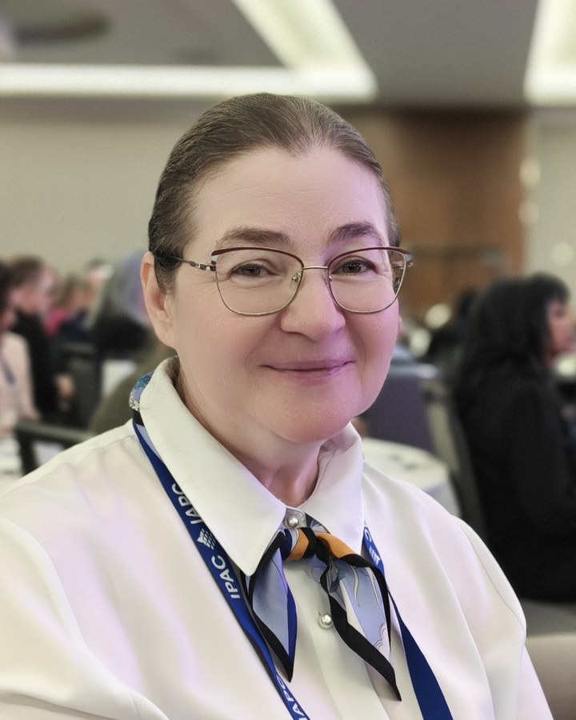
30+années d'expérience professionnelleyears of professional experience
130+publicationspublications
42licences et certificationslicenses & certifications
20distinctions et prixawards & honours
CV complet · un seul documentFull résumé · one document
Le CV complet, sur demandeThe full résumé, on request
Le CV complet — coordonnées, formation, postes, publications, distinctions et certificats, dans un seul document — est fourni sur demande, en anglais ou en français. Écrivez un courriel ou passez par LinkedIn, et le document vous sera envoyé directement.The full résumé — contacts, education, positions, publications, awards and certificates in one document — is provided on request, in English or French. Send an email or reach out on LinkedIn, and the document will be sent to you directly.
CV académique mis à jour le 18 octobre 2026.Academic CV updated 18 October 2026.
Accès rapideQuick access
Tout le site, en un coup d'œilThe whole site, at a glance
Chaque grande section, ce qu'elle contient et combien d'enregistrements s'y trouvent — un clic mène directement au bon endroit.Every main section, what it holds and how many records are in it — one click takes you straight to the right place.
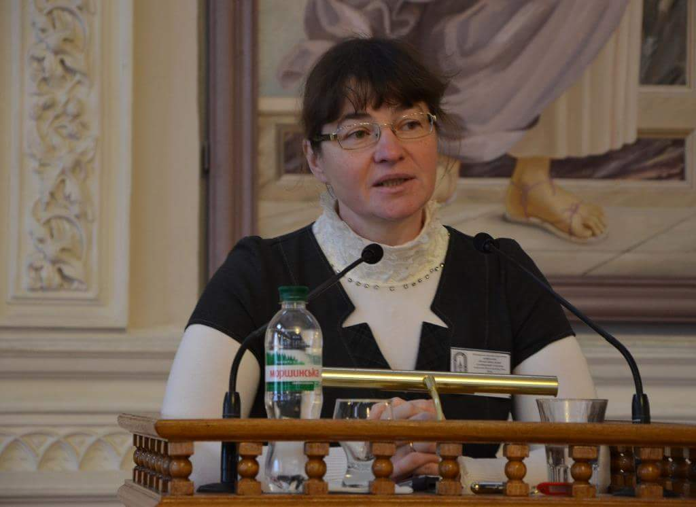
BiographieBiography
Formation, postes, distinctions, projets et rôles d'experte — tout le parcours au même endroit.Education, positions, awards, projects and expert roles — the whole record in one place.
15rubriques du parcourssections of the recordOuvrir →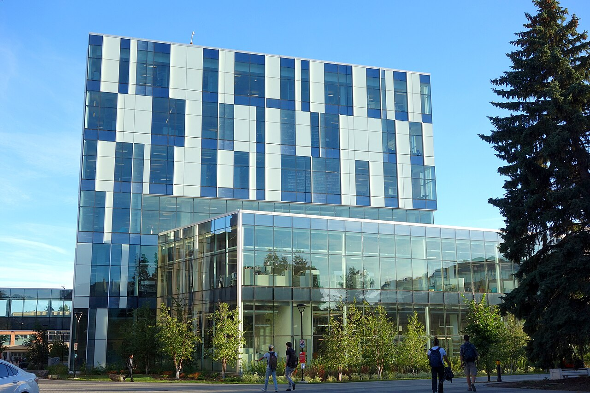
Bibliothèque des publicationsPublication library
Toutes les publications, des articles de 1998 aux travaux de 2025, avec recherche par titre et filtres par type et par période.Every publication, from the 1998 articles to the 2025 works, searchable by title with type and period filters.
215enregistrements, des plus récents aux plus anciensrecords, newest firstOuvrir →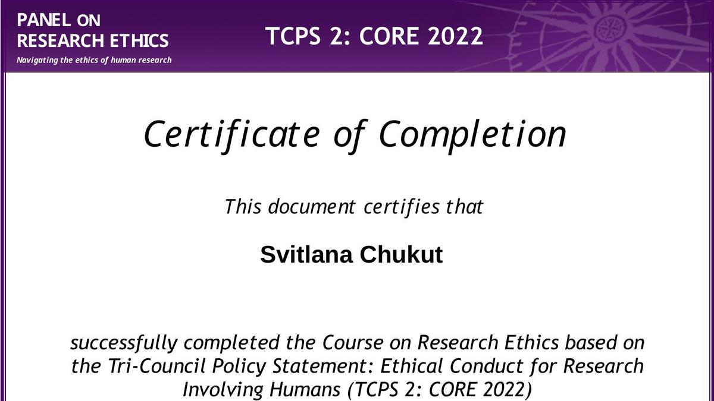
Certificats et formationsCertificates & training
Les qualifications documentées, du programme de la Banque mondiale (2001) aux certificats de l'Institut d'administration publique du Canada (2026).The documented qualifications, from the World Bank programme (2001) to the Institute of Public Administration of Canada certificates (2026).
42licences et certificationslicenses & certificationsOuvrir →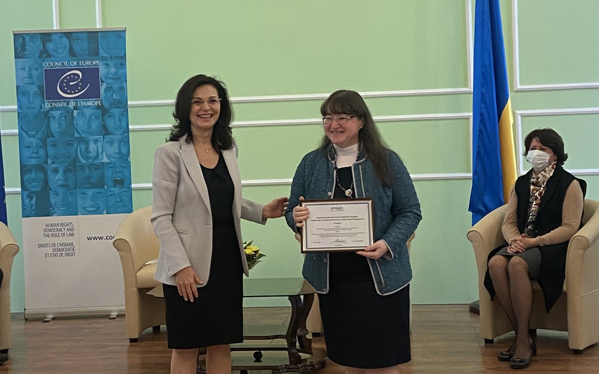
Distinctions et prixAwards & honours
Le registre complet des distinctions et remerciements, les plus récentes en premier.The complete register of awards and honours, newest first.
20distinctions documentéesdocumented distinctionsOuvrir →CoursCourses
Les cours d'auteure et les disciplines universitaires enseignées, avec le contenu de chaque programme.The signature courses and university disciplines taught, with the content of each programme.
84cours et modules — le catalogue complet de l'auteurecourses & modules — the author's full catalogueOuvrir →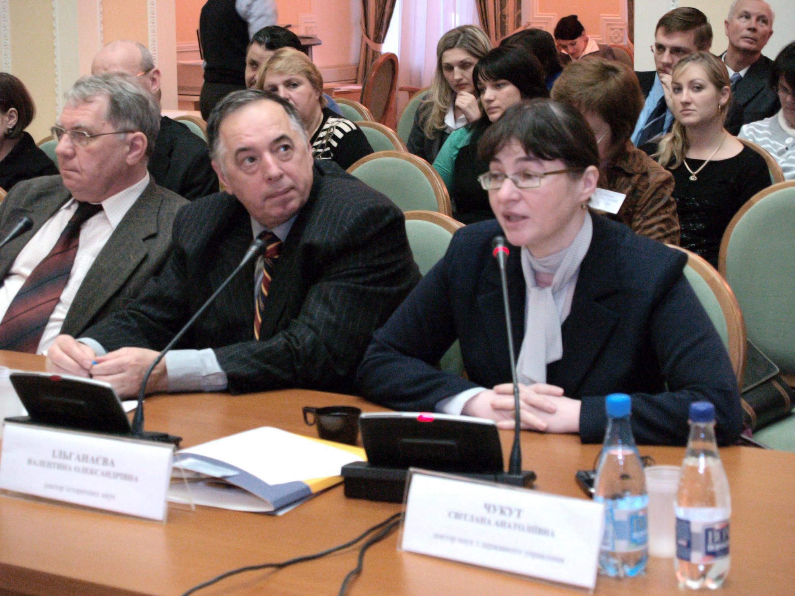
ÉvénementsEvents
Conférences, conférences publiques et forums de 1998 à 2025, chacun avec sa date et son rôle.Conferences, public lectures and forums from 1998 to 2025, each with its date and role.
25événements vérifiésverified eventsOuvrir →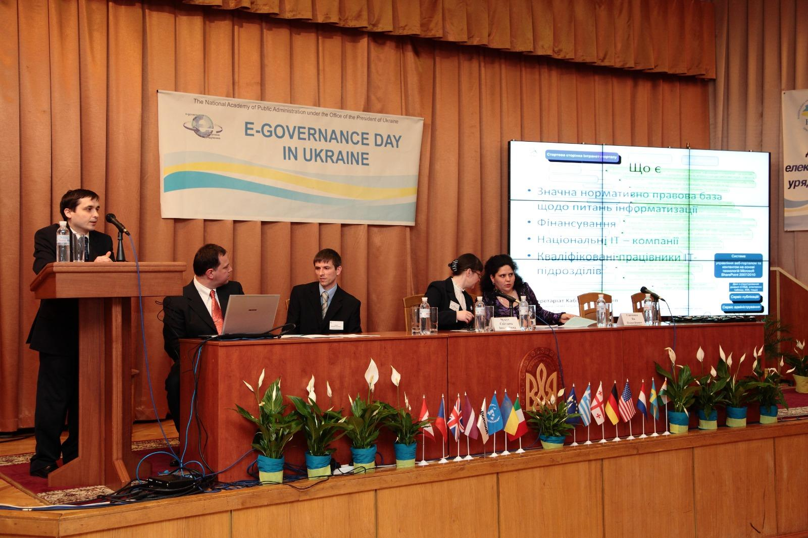
Journées de l'administration électroniqueE-Governance Days
Les quatre éditions du forum (2008–2011) : programmes, participants, sponsors et photographies d'archives.The four forum editions (2008–2011): programmes, participants, sponsors and archival photographs.
4éditions · 22 photographies d'archiveseditions · 22 archival photographsOuvrir →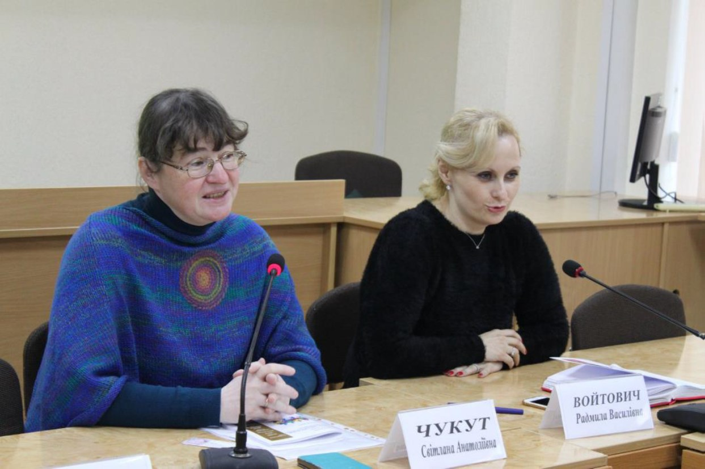
MédiasMedia
Vidéos d'interventions, conférences publiques et formations sur l'intelligence artificielle.Talk videos, public lectures and artificial-intelligence trainings.
10interventions et formationstalks & trainingsOuvrir →PartenairesPartners
Universités, fondations et programmes internationaux avec lesquels elle a travaillé.Universities, foundations and international programmes she has worked with.
26organisations partenairespartner organisationsOuvrir →Documents et fichiersDocuments & files
Le CV complet, sur demande, et l'archive : certificats, diplômes, articles et pages de titre des livres.The full résumé, available on request, plus the archive: certificates, diplomas, articles and book title pages.
50documents dans l'archive · CV complet sur demandedocuments in the archive · full résumé on requestOuvrir →ContactsContact
Deux adresses courriel, un numéro de téléphone à Kingston et les profils LinkedIn, Facebook, Google Scholar, ORCID et Web of Science.Two email addresses, a Kingston phone number, and the LinkedIn, Facebook, Google Scholar, ORCID and Web of Science profiles.
8moyens de contactways to get in touchOuvrir →Plus de 30 ans d'expérience professionnelle
Postes principaux
130+publications
95travaux dans Google Scholar
20indice h
En bref
De la philosophie — à l'État numérique
Depuis trente ans, un pont est bâti entre les pouvoirs publics et les citoyens : des premiers cours de politique d'information en Ukraine aux stratégies numériques étudiées par les fonctionnaires. Un parcours où la communication devient un instrument de confiance.
Un domaine fondé
La politique d'information est devenue une spécialisation, des cours et des manuels.
Une idée transformée en système
Travail sur le premier Concept de développement de l'administration électronique de l'Ukraine.
Une expérience transmise
Enseignement, recherche et collaboration avec des institutions ukrainiennes et internationales.
Citation
Les stratégies de communication sont extrêmement importantes pour les organes et les organisations qui sont des sujets de l'administration publique. Ce sont elles qui aident à définir une orientation d'activité et à transformer l'idée centrale en messages clés pour chaque public.Svitlana Chukut · article « Stratégies de communication dans la gestion et l'administration publiques », 2021 · source · traduit de l'ukrainien
Sections du site
Choisir ce qui intéresse
Commander une formation ou une consultationBook a training or consultation
Écrire à svchukut@gmail.comPour la communauté académiqueFor the academic community
Ouvrir la bibliothèqueOpen the libraryTravaux scientifiques
Bibliothèque des publications
Plus de 130 publications · 95 travaux dans Google Scholar · indice h 20. Monographies, articles et actes, avec recherche et filtres.
Ouvrir →ChronologieChronology
ÉvénementsEvents
25 conférences, conférences publiques, forums et événements institutionnels vérifiés.Twenty-five verified conferences, lectures, forums and institutional engagements.
Ouvrir →Héritage nationalNational legacy
Journées de l'administration électroniqueE-Governance Days
L'histoire documentée de quatre forums, 2008–2011 : participants, programmes, partenariats avec Microsoft, ESET et Softkey, et 22 photographies d'archives.The documented record of four forums held from 2008 to 2011: participants, programmes, Microsoft, ESET and Softkey partnerships, and 22 archival photographs.
Ouvrir →Pour les partenaires et les médiasFor partners & media
Lire la biographieParcours
Biographie et carrière
Formation, postes, distinctions et activité d'experte — l'histoire d'un parcours professionnel.
Ouvrir →En direct
Médias
Interventions vidéo, conférences, entretiens et publications dans la presse.
Ouvrir →Collaboration
Partenaires
Organisations partenaires : universités, fondations, projets internationaux.
Ouvrir →Invitation à collaborer
Conférences, sessions stratégiques, audit de communication, formations en entreprise — écrire directement.
Accueil · Biographie
Biographie et carrière
Première femme docteure en administration publique en Ukraine
De la faculté de philosophie à l'État numérique. Trente années de recherche, d'enseignement et de pratique qui ont changé la manière dont l'Ukraine dialogue avec le pouvoir.
Histoire
Le chemin vers l'État numérique
Un début comme philosophe — avec des questions sur la manière dont les gens se comprennent. Ces questions ont conduit à la politique d'information, puis à l'administration électronique : un domaine où la communication devient un service, et le service, une confiance.
- 2007–2012Académie nationale d'administration publique auprès du Président de l'UkraineNational Academy of Public Administration under the President of Ukraine
- Direction du département de politique d'information, création de la spécialisation « Politique d'information » et co-élaboration du premier Concept d'administration électronique de l'Ukraine.Headed the Information Policy Department, founded the Information Policy specialisation, and helped develop Ukraine's first E-Governance Development Concept.
- 2013–2025Université technique nationale d'Ukraine « Institut polytechnique de Kyiv Igor Sikorsky »National Technical University of Ukraine «Igor Sikorsky Kyiv Polytechnic Institute»
- Professeure, garante du programme doctoral, experte de la Fondation nationale de la recherche d'Ukraine.Professor, academic lead (guarantor) of the PhD programme in Public Management and Administration, and expert with the National Research Foundation of Ukraine.
- depuis 2024since 2024George Brown Polytechnic, TorontoGeorge Brown Polytechnic, Toronto
- Développement de programmes et production de contenus d'apprentissage numérique.Curriculum development and digital-learning production.
Contributions signaturesSignature contributions
Enseignement universitaire et recherche en administration publique, politique d'information et administration électronique.University teaching and research in public administration, information policy and e-governance.
Co-autrice du Concept de développement de l'administration électronique, approuvé par le Conseil des ministres de l'Ukraine.Co-author of the Concept of E-Governance Development, approved by the Cabinet of Ministers of Ukraine.
Direction de mémoires de master et de thèses de doctorat soutenues ; garante du programme doctoral (PhD).Supervision of Master's theses and defended doctoral dissertations; guarantor of the PhD programme.
Initiatrice des Journées de l'administration électronique (2008–2011).Initiator of the E-Governance Days (2008–2011).
Initiatrice des premières Olympiades panukrainiennes d'administration électronique pour les étudiants.Initiator of the first All-Ukrainian E-Governance Olympiad for students.
Pont académique Canada–Ukraine : conception de programmes et production de contenus d'apprentissage.Canada–Ukraine academic bridge: curriculum development and learning-content production.
Formation
Le fondement des connaissances
Diplômes, thèses soutenues et titres académiques, de 1989 à la vérification des diplômes par WES Canada.Degrees, defended dissertations and academic ranks, from 1989 to the WES Canada credential verification.
Grade scientifique le plus élevéHighest scientific degree
Docteure ès sciences (Doctor of Sciences) en administration publiqueDoctor of Sciences in Public Administration
1999 · Académie nationale d'administration publique auprès du Président de l'UkraineNational Academy of Public Administration under the President of Ukraine
Thèse de doctorat ès sciences : « Reproduction of the Generational Integrity of Spiritual Culture (Managerial Aspect) » ; consultant scientifique : professeur Vitalii Skurativskyi.Doctoral dissertation: “Reproduction of the Generational Integrity of Spiritual Culture (Managerial Aspect)”; scientific consultant: Professor Vitalii Skurativskyi.
Doctorat (PhD) en philosophie socialePhD in Social Philosophy
1993 · Université nationale Taras Chevtchenko de KyivTaras Shevchenko National University of Kyiv
Thèse de doctorat : « Succession of Spiritual Culture: A Socio-Philosophical Analysis » ; directeur de thèse : professeur Ivan Nadolnyi.PhD dissertation: “Succession of Spiritual Culture: A Socio-Philosophical Analysis”; supervisor: Professor Ivan Nadolnyi.
Diplôme de spécialiste en philosophie, avec mention d'excellenceSpecialist Degree in Philosophy, with Honours
1989 · Université nationale Taras Chevtchenko de KyivTaras Shevchenko National University of Kyiv
Diplôme d'études supérieures en philosophie obtenu avec mention d'excellence.Degree in Philosophy awarded with honours.
Vérification des diplômes — WES CanadaCredential Verification — WES Canada
2023
Vérification et reconnaissance des diplômes ukrainiens par World Education Services (WES) Canada.Ukrainian academic credentials verified by World Education Services (WES) Canada.
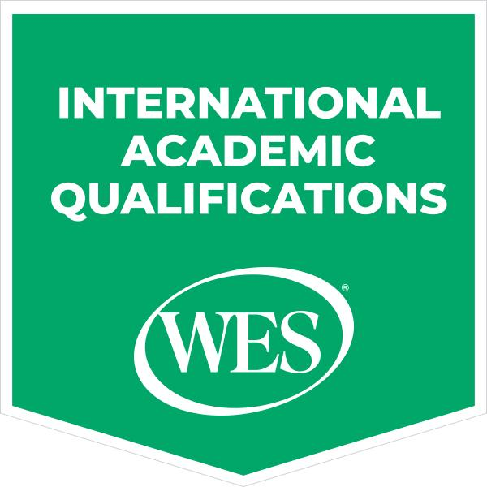
Titres académiquesAcademic Ranks
2000 · 2002
Titre de professeure (Professor) conféré en 2002 ; titre de maître de conférences (Associate Professor) conféré en 2000.Academic title of Professor conferred in 2002; academic title of Associate Professor conferred in 2000.
Chronologie
Une carrière étape par étape
Tous les postes occupés, du premier poste académique à Poltava (1993) aux rôles actuels à Toronto.Every position held, from the first academic post in Poltava (1993) to the current roles in Toronto.
Productrice créative (Creative Producer), George Brown Polytechnic (Toronto)Creative Producer, George Brown Polytechnic (Toronto)
octobre 2025 — à ce jourOctober 2025 — present
Production créative de contenus d'apprentissage numérique à George Brown Polytechnic, Toronto.Creative production of digital learning content at George Brown Polytechnic, Toronto.
Productrice de contenus (Content Producer), George Brown Polytechnic (Toronto)Content Producer, George Brown Polytechnic (Toronto)
septembre – octobre 2025September – October 2025
Production de contenus pour les programmes d'apprentissage numérique de George Brown Polytechnic.Content production for digital learning programmes at George Brown Polytechnic.
Poste cléKey role
Conceptrice de programmes d'études (Curriculum Developer), George Brown Polytechnic (Toronto)Curriculum Developer, George Brown Polytechnic (Toronto)
juin 2024 – septembre 2025June 2024 – September 2025
17 initiatives de cours et plus de 50 modules pratiques : apprentissage intégré au travail (Work-Integrated Learning), conformité réglementaire (Regulatory Compliance), services financiers (Financial Services), hôtellerie et tourisme (Hospitality & Tourism), construction en bois massif (Mass Timber), entrepreneuriat dans la construction (Entrepreneurship in Construction), transition vers la pratique infirmière (Nursing Transition to Practice). Conception dans Brightspace (D2L) et H5P, accessibilité AODA/WCAG.17 course initiatives and 50+ practical learning modules: Work-Integrated Learning, Regulatory Compliance, Financial Services, Hospitality & Tourism, Mass Timber, Entrepreneurship in Construction, Nursing Transition to Practice. Design in Brightspace (D2L) and H5P, AODA/WCAG accessibility.
Poste cléKey role
Professeure, département de théorie et de pratique du management, Université technique nationale d'Ukraine « Institut polytechnique de Kyiv Igor Sikorsky »Professor, Department of Theory and Practice of Management, National Technical University of Ukraine «Igor Sikorsky Kyiv Polytechnic Institute»
septembre 2013 – septembre 2025September 2013 – September 2025
Plus de 10 cours en ligne et hybrides dans Moodle ; garante du programme doctoral (PhD) en administration et gestion publiques (2018–2025) ; initiatrice des premières Olympiades panukrainiennes d'administration électronique pour les étudiants (2021 : 69 participants individuels de 19 établissements d'enseignement supérieur, 7 équipes de 6 établissements).10+ online and hybrid courses in Moodle; guarantor of the PhD programme in Public Administration and Management (2018–2025); initiator of the first All-Ukrainian E-Governance Olympiad for students (2021: 69 individual participants from 19 higher education institutions, 7 teams from 6 institutions).
Directrice par intérim du département de théorie et de pratique du management, Université technique nationale d'Ukraine « Institut polytechnique de Kyiv Igor Sikorsky »Acting Head of the Department of Theory and Practice of Management, National Technical University of Ukraine «Igor Sikorsky Kyiv Polytechnic Institute»
février 2015 – février 2021February 2015 – February 2021
Direction du département ; co-élaboration des standards nationaux de l'enseignement supérieur en administration et gestion publiques.Department leadership; co-development of the national higher education standards in Public Administration and Management.
Poste cléKey role
Directrice du département de politique d'information, Académie nationale d'administration publique auprès du Président de l'UkraineHead of the Chair of Information Policy, National Academy of Public Administration under the President of Ukraine
janvier 2007 – janvier 2012January 2007 – January 2012
Création du programme de master « Gouvernement électronique » (Electronic Government) destiné aux fonctionnaires ; initiative et organisation des Journées de l'administration électronique (2008–2011).Created the “Electronic Government” Master's programme for civil servants; initiated and organised the E-Governance Days (2008–2011).
Leadership scientifiqueScholarly leadership
Rédactrice en chef de la revue « E-Governance »Editor-in-Chief of the journal “E-Governance”
2009–2011
Direction de la revue spécialisée consacrée à l'administration électronique.Led the specialised journal devoted to e-governance.
Contribution nationaleNational contribution
Membre du groupe de travail sur le Concept de développement de l'administration électronique en UkraineMember of the Working Group on the Concept of E-Governance Development in Ukraine
2008–2010
Co-élaboration du Concept national, approuvé par la résolution du Conseil des ministres de l'Ukraine n° 2250-r du 13 décembre 2010.Co-developed the national Concept, approved by Resolution of the Cabinet of Ministers of Ukraine No. 2250-r of 13 December 2010.
Professeure et directrice adjointe du département de politique d'information, Académie nationale d'administration publique auprès du Président de l'UkraineProfessor and Deputy Head of the Chair of Information Policy, National Academy of Public Administration under the President of Ukraine
octobre 2001 – janvier 2007October 2001 – January 2007
Élaboration et animation de 10 programmes courts de formation pour les fonctionnaires.Developed and delivered 10 short training programmes for civil servants.
Maître de conférences, département de philosophie et de méthodologie de l'administration publique, Académie nationale d'administration publique auprès du Président de l'UkraineAssociate Professor, Department of Philosophy and Methodology of Public Administration, National Academy of Public Administration under the President of Ukraine
novembre 1999 – septembre 2001November 1999 – September 2001
Enseignement et recherche en philosophie et méthodologie de l'administration publique.Teaching and research in philosophy and methodology of public administration.
Assistante, Académie ukrainienne de médecine dentaire (Poltava)Assistant Professor, Ukrainian Medical Dental Academy (Poltava)
août 1993 – septembre 1996August 1993 – September 1996
Premier poste académique, à Poltava.First academic appointment, in Poltava.
Registre documentéDocumented registry
Distinctions et prixAwards & honours
20 distinctions — les plus récentes en premier.Twenty distinctions — newest first.
Certificat de remerciementCertificate of Gratitude
Faculté de sociologie et de droit, Université technique nationale d'Ukraine « Institut polytechnique de Kyiv Igor Sikorsky »Faculty of Sociology and Law, National Technical University of Ukraine «Igor Sikorsky Kyiv Polytechnic Institute»Remerciement de la Faculté de sociologie et de droit de la Université technique nationale d'Ukraine « Institut polytechnique de Kyiv Igor Sikorsky » (2023).Gratitude of the Faculty of Sociology and Law of the National Technical University of Ukraine «Igor Sikorsky Kyiv Polytechnic Institute» (2023).
Remerciement pour la préparation du lauréat (1re place)Gratitude for preparing the winner (1st place)
Concours international de travaux scientifiques étudiants « Sciences managériales, sociales et comportementales dans la mise en œuvre des principes du développement durable »International competition of student scientific works “Managerial, social and behavioral sciences in the implementation of the principles of sustainable development”Remerciement pour une contribution importante au développement de la science étudiante et la préparation de qualité du lauréat (1re place) du concours international de travaux scientifiques étudiants. Mai 2023 ; associé à l'Université technique nationale d'Ukraine « Institut polytechnique de Kyiv Igor Sikorsky ».Gratitude for a significant contribution to the development of student science and the high-quality preparation of the winner (1st place) in the international competition of student research papers. May 2023; associated with the National Technical University of Ukraine «Igor Sikorsky Kyiv Polytechnic Institute».
Remerciement pour la contribution à la science étudianteAcknowledgement for advancing student research
Université technique nationale du pétrole et du gaz d'Ivano-FrankivskIvano-Frankivsk National Technical University of Oil and GasRemerciement pour une contribution importante au développement de la science étudiante et la préparation de qualité du lauréat (2e place) du concours international de travaux scientifiques étudiants « Sciences managériales, sociales et comportementales dans la mise en œuvre des principes du développement durable ». Mai 2022 ; associé à l'Université technique nationale d'Ukraine « Institut polytechnique de Kyiv Igor Sikorsky ».Gratitude for a significant contribution to the development of student science and the high-quality preparation of the winner (2nd place) in the international competition of student research papers “Managerial, social and behavioral sciences in the implementation of the principles of sustainable development”. May 2022; associated with the National Technical University of Ukraine «Igor Sikorsky Kyiv Polytechnic Institute».
Reconnaissance de la commission sectorielle du concoursField competition commission recognition
Commission sectorielle du concours panukrainien de travaux scientifiques étudiantsField Competition Commission, All-Ukrainian Student Research CompetitionLa préparation des lauréats et des participants au second tour du concours dans la spécialité « Administration et gestion publiques » a été distinguée par la commission sectorielle du concours.My supervision of prize-winning and second-round works in the Public Administration and Management competition was recognized by the field competition commission.
Diplôme, 2e placeDiploma, second place
Agence nationale d'Ukraine de la fonction publiqueNational Agency of Ukraine on Civil ServiceAvec Ya. Tsymbalenko, distinction dans la catégorie « Formation des masters de la spécialité 281 Administration et gestion publiques » du concours des meilleures pratiques d'innovation pédagogique.Together with Ya. Tsymbalenko — distinction in the “Master’s training in 281 Public Administration” category of the Best Practices of Educational Innovation competition.
Remerciement en qualité de membre du comité d'organisationAcknowledgement as an organising-committee member
Université technique nationale d'Ukraine « Institut polytechnique de Kyiv Igor Sikorsky »National Technical University of Ukraine «Igor Sikorsky Kyiv Polytechnic Institute»Olympiade universitaire ouverte des étudiants en administration électronique.Open University Student Olympiad in E-Governance.
Remerciement en qualité de membre du juryAcknowledgement as a jury member
Université technique nationale d'Ukraine « Institut polytechnique de Kyiv Igor Sikorsky »National Technical University of Ukraine «Igor Sikorsky Kyiv Polytechnic Institute»Olympiade universitaire ouverte des étudiants en administration électronique.Open University Student Olympiad in E-Governance.
Remerciement pour la préparation d'une lauréateAcknowledgement for coaching a prize-winner
Université nationale d'économie de Kyiv Vadym HetmanKyiv National Economic UniversityPréparation d'O. Shyts, qui a obtenu la 2e place au concours panukrainien de travaux scientifiques étudiants en administration publique.Coached O. Shyts, who placed second in the All-Ukrainian student research competition in Public Administration.
Diplôme pour un haut professionnalisme scientifique et pédagogiqueDiploma for high scientific and pedagogical professionalism
Université nationale de commerce et d'économie de KyivKyiv National University of Trade and EconomicsDiplôme pour la préparation des lauréats (1re et 2e places) du concours panukrainien de travaux scientifiques étudiants en administration et gestion publiques. Avril 2021.Diploma for preparing the winners (1st and 2nd places) of the All-Ukrainian competition of student research papers in public administration and management. April 2021.
Diplôme, 3e placeDiploma, third place
Agence nationale d'Ukraine de la fonction publiqueNational Agency of Ukraine on Civil ServiceCatégorie « Formation des masters de la spécialité 281 Administration et gestion publiques » du concours des meilleures pratiques d'innovation pédagogique.“Master’s training in 281 Public Administration” category of the Best Practices of Educational Innovation competition.
Certificat pour le professionnalisme scientifique et pédagogiqueCertificate of merit for academic mentorship
Université nationale de commerce et d'économie de KyivKyiv National University of Trade and EconomicsPréparation des lauréats N. Volytskyi, V. Trachuk et A. Kruts, qui ont obtenu la 3e place.Coached third-place prize-winners N. Volytskyi, V. Trachuk, and A. Kruts.
RemerciementAcknowledgement
Ministère de l'Éducation et des Sciences de l'UkraineMinistry of Education and Science of UkraineCertificat pour la préparation de lauréatsCertificate of merit for coaching prize-winners
Université nationale de commerce et d'économie de KyivKyiv National University of Trade and EconomicsSous direction scientifique, T. Tsiptsiura a obtenu la 1re place, et A. Kruts et K. Feshchenko la 2e place, au concours panukrainien de travaux scientifiques étudiants.Under my supervision, T. Tsiptsiura placed first, while A. Kruts and K. Feshchenko placed second in the All-Ukrainian student research competition.
Remerciement pour le travail au sein de la commission sectorielleAcknowledgement for service on the field commission
Université nationale de commerce et d'économie de KyivKyiv National University of Trade and EconomicsConcours panukrainien de travaux scientifiques étudiants en administration et gestion publiques.All-Ukrainian student research competition in Public Administration.
Remerciement en qualité de membre du juryAcknowledgement as a jury member
Université technique nationale d'Ukraine « Institut polytechnique de Kyiv Igor Sikorsky »National Technical University of Ukraine «Igor Sikorsky Kyiv Polytechnic Institute»Olympiade étudiante panukrainienne d'administration et de gestion publiques.All-Ukrainian Student Olympiad in Public Administration.
Distinction honorifique du Conseil académiqueHonorary distinction of the Academic Council
Université technique nationale d'Ukraine « Institut polytechnique de Kyiv Igor Sikorsky »National Technical University of Ukraine «Igor Sikorsky Kyiv Polytechnic Institute»Remerciement à la directrice scientifique des lauréatsAcknowledgement to the supervisor of winners
Faculté de sociologie et de droit, Université technique nationale d'Ukraine « Institut polytechnique de Kyiv Igor Sikorsky »Faculty of Sociology and Law, National Technical University of Ukraine «Igor Sikorsky Kyiv Polytechnic Institute»Remerciement public en qualité de directrice scientifique des étudiants lauréats du concours panukrainien : 1re place — T. Tsiptsiura ; diplômes de 2e degré — A. Kruts et K. Feshchenko.Public thanks as scientific supervisor of the All-Ukrainian competition winners: 1st place — T. Tsiptsiura; 2nd-place diplomas — A. Kruts and K. Feshchenko.
Certificat pour la préparation de lauréatsCertificate of merit for coaching prize-winners
Université nationale de commerce et d'économie de KyivKyiv National University of Trade and EconomicsSous direction scientifique, A. Kuts a obtenu la 1re place, et M. Pashchak et O. Plotnikova la 2e place, au concours panukrainien de travaux scientifiques étudiants.Under my supervision, A. Kuts placed first, while M. Pashchak and O. Plotnikova placed second in the All-Ukrainian student research competition.
RemerciementAcknowledgement
Université technique nationale d'Ukraine « Institut polytechnique de Kyiv Igor Sikorsky »National Technical University of Ukraine «Igor Sikorsky Kyiv Polytechnic Institute»Diplôme d'honneurHonorary certificate
Académie nationale d'administration publique auprès du Président de l'UkraineNational Academy for Public Administration under the President of UkraineQualifications et développement professionnelQualifications and professional development
Certificats et formationsCertificates & training
Les qualifications documentées : les formations établies d'abord, puis les certifications les plus récentes.The documented qualifications: established training first, then the most recent certifications.
42
Licences et certificationsLicenses & certifications
42 licences et certifications — de la Banque mondiale (2001) à l'Institut d'administration publique du Canada (2026). Ci-dessous, les entrées documentées et les plus récentes.42 licenses and certifications — from the World Bank (2001) to Canada's IPAC (2026). Documented and most recent entries follow.
Qualifications documentéesDocumented qualifications
2021 · aoûtAugust
Fondements de la théorie des testsFundamentals of test theory
Formation du ministère de l'Éducation et des Sciences de l'Ukraine « Fondements de la théorie des tests, de l'élaboration et de la révision des items de test ».Completed the Ministry of Education and Science of Ukraine training “Fundamentals of Test Theory, development and review of test tasks”.
2019 · septembreSeptember
Experte en accréditation des programmes d'enseignementExpert on accreditation of educational programs
Formation en ligne Prometheus pour l'Agence nationale d'assurance qualité de l'enseignement supérieur. Identifiant du certificat : db509020286646e7878573586e5f1592.Completed the Prometheus online training for Agence nationale d'assurance qualité de l'enseignement supérieur. Credential ID: db509020286646e7878573586e5f1592.
Ce que dit le document (original en ukrainien) : l'Agence nationale d'assurance qualité de l'enseignement supérieur de l'Ukraine, par l'intermédiaire de la plateforme d'apprentissage en ligne Prometheus, certifie que Svitlana Anatoliivna Chukut a réussi le cours « Experte en accréditation des programmes d'enseignement : formation en ligne ». Délivré le 19 octobre 2019.What the document says (original in Ukrainian): the National Agency for Higher Education Quality Assurance of Ukraine, through the Prometheus online learning platform, certifies that Svitlana Anatoliivna Chukut successfully completed the course “Expert on Accreditation of Educational Programs: Online Training”. Issued 19 October 2019.
2017 · № 14122017-30
Projet DOCCUDOCCU project
Programme du projet suisse-ukrainien DOCCU « Développement des compétences civiques » suivi pour les enseignants formant les masters en administration et gestion publiques (Haute école pédagogique de Zurich). Certificat du 17 décembre 2017.Completed the DOCCU Swiss-Ukrainian project programme “Development of Civic Competencies” for teachers of HEIs who train students in Master's Programs in Public Governance and Administration (PHZH). Certificate dated 17 December 2017.
2012 · № 42281
Certificat d'auteurCopyright certificate
Certificat d'auteur reçu pour le recueil « Administration électronique : concept, méthodologie, outils et programmes », délivré par le Service d'État de la propriété intellectuelle d'Ukraine.Received a copyright certificate for the collection “E-Governance: Concept, Methodology, Tools and Programmes” from the State Intellectual Property Service of Ukraine.
2011 · avrilApril
Modernisation du secteur publicPublic-sector modernisation
Formation à la modernisation du secteur public par la création d'un gouvernement électronique, organisée par l'Université nationale « Académie Mohyla de Kyiv », la Direction principale de la fonction publique et Telenor / European Competence Ltd.Completed training in public-sector modernisation through e-government, organised by National University of Kyiv-Mohyla Academy, the Main Department of Civil Service, and Telenor / European Competence Ltd.
2001 · juinJune
Théorie et pratique de l'enseignement à distanceTheory and practice of distance learning
Programme du Réseau mondial d'apprentissage pour le développement de la Banque mondiale suivi avec l'Académie ukrainienne d'administration publique et l'Institut de management administratif, économique et politique.Completed the World Bank GDLN programme with UADU and the Institute of Administrative, Economic and Political Management.
Certifications récentesRecent certifications
Credential ID: feeb7815-8406-444e-adc5-cc97c0d5af7d
Credential ID: 262f80b2-029d-427d-a367-53ca6c70c92a
Credential ID: 938b0d9f-f4ae-436d-afcf-5bfeb995dcff
Credential ID: 934Z8SXTAQVV
Credential ID: JD8XR7BUTM6B
Credential ID: F7FFS4XZJ7ZJ
Credential ID: d56fa1c5-e04c-4627-b55d-8066242dce2b
Credential ID: UZGHT6SLWNC7
Credential ID: V3EETH9FWLB9
Credential ID: D6YJ8QCMNVZQ
Credential ID: 74TUDPQ559A3
Credential ID: ATX2F7LAH2PN
Credential ID: 725LSSUVGMGJ
Credential ID: RFF2UQXG47VS
Credential ID: 3FY5F87MF6EV
Credential ID: WGLG48P2PG2C
Credential ID: 6J38FNCS4HKD
Credential ID: 64fa8f7fbc2ce217c30cbe1d
Credential ID: 64faabcb5131864b090556ef
Certificate #0000942553
Programme d'enseignement : « Research on innovations, sustainability and mechanisms of tourism development: challenges and opportunities for Ukraine »Teaching programme: “Research on innovations, sustainability and mechanisms of tourism development: challenges and opportunities for Ukraine”
Programme « SMART Cities and Tourism » ; communication : « Development of SMART cities: current trends, challenges and threats » · 28 octobre 2021Programme “SMART Cities and Tourism”; presentation: “Development of SMART cities: current trends, challenges and threats” · 28 October 2021
La liste complète compte 42 licences et certifications.The complete list comprises 42 licenses and certifications.
Profil professionnel LinkedIn →Professional LinkedIn profile → · Certificat de la conférence 2021 →2021 conference certificate →
Projets de recherche et projets internationauxResearch & international projects
ProjetsProjects
Les projets — des réseaux internationaux Orbicom et GISU Alliance au premier Concept de développement de l'administration électronique de l'Ukraine.Projects — from the international Orbicom network and the GISU Alliance to Ukraine's first E-Governance Development Concept.
Chercheuse principale / directrice scientifique — « The Impact of Artificial Intelligence in Smart Tourism in Ukraine: Advantages and Threats in Wartime and Post-war Recovery »Principal Investigator / Scientific Supervisor — “The Impact of Artificial Intelligence in Smart Tourism in Ukraine: Advantages and Threats in Wartime and Post-war Recovery”
2024 · GISU Research 2024
Projet de recherche GISU Research 2024 ; financement rapporté : 500 000 CNY. Recherche mixte sur les applications de l'intelligence artificielle, la gouvernance des données, la vie privée, la désinformation, la cybersécurité, l'impact économique et les recommandations de politiques publiques pour le tourisme intelligent.GISU Research 2024 project; award reported as CNY 500,000. Mixed-method research on AI applications, data governance, privacy, misinformation, cybersecurity, economic impact, and policy recommendations for smart tourism.
Contrat de recherche — audit des activités d'EnergoatomResearch contract — audit of Energoatom activities
2021
Audit des activités d'Energoatom sur les questions sociales liées au personnel et à la population, dans le cadre du Programme global de renforcement de la sécurité des unités nucléaires ukrainiennes et du Plan d'action environnemental et social (contrat n° D/0201.01/3011.01).Audit of Energoatom activities on social issues related to personnel and population within the Comprehensive Safety Upgrade Program for Ukrainian nuclear power units and the Environmental and Social Action Plan (Contract No. D/0201.01/3011.01).
Projets de recherche collaboratifs d'Orbicom « Transformation numérique de l'administration publique et des collectivités locales : défis et possibilités pour atteindre les objectifs de développement durable »Orbicom's Collaborative Research Projects “Digital transformation of public administration and local government: challenges and opportunities for achieving SDGs”
mars 2023 — septembre 2025Mar 2023 – Sep 2025
Objectif : l'étude des processus contemporains de transformation numérique de l'administration publique, notamment la transformation du secteur public de l'information sous l'effet de la guerre en Ukraine. Associé à l'Université technique nationale d'Ukraine « Institut polytechnique de Kyiv Igor Sikorsky ». Compétences : ingénierie des prompts, intelligence artificielle.Goal: research of modern processes of digital transformation of public administration, including the transformation of the public information sector under the impact of the war in Ukraine. Associated with the National Technical University of Ukraine «Igor Sikorsky Kyiv Polytechnic Institute». Skills: Prompt Engineering, Artificial Intelligence.
GISU Alliance – 2022 · Tourisme / Villes intelligentesGISU Alliance – 2022 · Tourism / Smart Cities
août 2021 — février 2024Aug 2021 – Feb 2024
Thème : « Stratégies commerciales innovantes en réponse à l'impact de la COVID-19 sur le tourisme : un cadre post-COVID de résilience et de régénération du tourisme ». Associé à l'Université technique nationale d'Ukraine « Institut polytechnique de Kyiv Igor Sikorsky ».Topic: “Innovative Business Strategies in Response to COVID-19 Impact on Tourism: A post-COVID tourism resilience and regenerative framework”. Associated with the National Technical University of Ukraine «Igor Sikorsky Kyiv Polytechnic Institute».
Certificat d'appréciation de l'Alliance GISU (11 juillet 2023) pour l'enseignement du programme « Research on innovations, sustainability and mechanisms of tourism development: challenges and opportunities for Ukraine ». Certificate of Appreciation from the GISU Alliance (11 July 2023) for teaching the programme “Research on innovations, sustainability and mechanisms of tourism development: challenges and opportunities for Ukraine”.
Tendances contemporaines de la mise en œuvre de l'administration électronique en Ukraine : meilleures pratiquesModern trends in the implementation of e-governance in Ukraine: best practices
janvier 2019 — décembre 2021Jan 2019 – Dec 2021
Directrice scientifique. Enregistrement d'État n° 0118U100305.Research supervisor. State registration No. 0118U100305.
L'impact de l'administration électronique sur les transformations socialesImpact of e-governance on social transformations
janvier 2016 — décembre 2018Jan 2016 – Dec 2018
Directrice scientifique. Enregistrement d'État n° 0115U000019.Research supervisor. State registration No. 0115U000019.
EGAP — administration électronique pour la redevabilité du gouvernement et la participation communautaire (Suisse)E-Governance for Accountability and Community Participation — EGAP (Switzerland)
août 2015 — décembre 2017Aug 2015 – Dec 2017
Experte du programme suisse-ukrainien d'administration électronique.Expert in the Swiss-Ukrainian e-governance programme.
Fondements théoriques, méthodologiques, organisationnels et institutionnels de la mise en œuvre de l'administration électroniqueTheoretical, methodological, organizational and institutional principles of e-governance implementation
janvier 2010 — décembre 2011Jan 2010 – Dec 2011
Directrice scientifique. Enregistrement d'État n° 0201U004833.Research supervisor. State registration No. 0201U004833.
Élaboration du Concept de développement de l'administration électronique en UkraineElaboration of Concept for the Development of E-Governance in Ukraine
janvier 2009 — décembre 2010Jan 2009 – Dec 2010
Membre du groupe de travail ; le Concept a été adopté par le Conseil des ministres le 13 décembre 2010.Working group member; the Concept was adopted by the Cabinet of Ministers on 13 December 2010.
Création de mécanismes d'interaction efficace entre le gouvernement, le public et les médias : aspects théoriques et appliquésEstablishing mechanisms for effective interaction between the Government, public and media: theoretical and applied aspects
janvier 2009 — décembre 2010Jan 2009 – Dec 2010
Directrice scientifique. Enregistrement d'État n° 0109U003027.Research supervisor. State registration No. 0109U003027.
Relations publiques dans l'administration publique : aspects théoriques et appliquésPublic Relations in Public Administration: Theoretical and Applied Aspects
janvier — décembre 2008Jan – Dec 2008
Directrice scientifique. Enregistrement d'État n° 0107U005909.Research supervisor. State registration No. 0107U005909.
Promotion de la réforme de l'administration publique et de la coopération dans la formation des cadresPromoting public administration reform and cooperation in the field of training
septembre 2005 — décembre 2008Sep 2005 – Dec 2008
Experte. Mise en œuvre par Académie nationale d'administration publique auprès du Président de l'Ukraine et la Haute école de management et de droit (Berlin) ; financement du gouvernement allemand via la GTZ/GIZ. Élaboration d'un module d'administration électronique pour les programmes de master en administration publique.Expert. Implemented by the National Academy of Public Administration under the President of Ukraine and the Higher School of Management and Law (Berlin); funded by the German government through GTZ/GIZ. Developed an e-governance module for master's programmes in public administration.
Propositions de recherche sélectionnéesSelected research proposals
- Digital Inclusion of Vulnerable Groups in Smart Cities (2022) — Fondation nationale de la recherche d'UkraineNational Research Foundation of Ukraine
- Digital Skills / Ukrainian Forced Female Migrants in Latvia (2022) — proposition de projet internationalinternational project proposal
- Digital & Educational Reintegration of Youth from De-Occupied Territories (2022) — proposition de projetproject proposal
- Digital Educational Reintegration of Youth (SDGs) (2021) — proposition de projetproject proposal
Domaines de rechercheResearch areas
Expertise de rechercheResearch expertise
Trajectoire de recherche : de la philosophie sociale et de la continuité de la culture spirituelle — à la politique d'information, à l'administration électronique et aux villes intelligentes, puis à la gouvernance par l'intelligence artificielle et à l'apprentissage numérique inclusif au Canada.Research trajectory: from social philosophy and the continuity of spiritual culture — to information policy, e-governance and smart cities, and on to AI governance and inclusive digital learning in Canada.
Administration électronique et gouvernement numériqueE-Governance & Digital GovernmentVilles intelligentes et gouvernance intelligenteSmart Cities & Smart GovernanceIntelligence artificielle dans l'administration publiqueArtificial Intelligence in Public AdministrationInclusion numérique et démocratie électroniqueDigital Inclusion & E-DemocracyCulture numérique et diversité culturelleDigital Culture & Cultural DiversityContinuité générationnelle et culture spirituelleGenerational Continuity & Spiritual CulturePolitique d'informationInformation PolicyDonnées ouvertes, science ouverte et éducation ouverteOpen Data, Open Science & Open EducationTransformation numérique centrée sur l'humainHuman-Centred Digital TransformationGouvernance numérique en temps de crise et de guerreCrisis & Wartime Digital GovernanceIntégration européenne de la gouvernance numériqueEuropean Integration of Digital GovernanceLudification et microapprentissageGamification & MicrolearningIntelligence artificielle générative dans l'éducationGenerative AI in EducationMain-d'œuvre prête pour l'avenir et apprentissage tout au long de la vieFuture-Ready Workforce & Lifelong Learning
Méthodes de recherche et expertise analytiqueResearch methods & analytical expertise
- Analyse conceptuelle et des politiques publiques ; études comparatives internationales (Union européenne, Canada, Asie de l'Est).Conceptual and policy analysis; international comparative studies (European Union, Canada, East Asia).
- Analyse de documents et de cadres réglementaires ; recherche archivistique et historique sur l'administration électronique.Document and regulatory-framework analysis; archival and historical research on e-governance.
- Études de cas de villes intelligentes et de services publics numériques ; évaluation de programmes et analyse d'impact.Case studies of smart cities and digital public services; programme evaluation and impact analysis.
- Entretiens d'experts et consultation des parties prenantes ; recherche-action et recherche participative en conception.Expert interviews and stakeholder consultation; action research and participatory design research.
- Recherche sur la conception pédagogique : apprentissage assisté par l'intelligence artificielle, ludification, microapprentissage.Instructional-design research: AI-assisted learning, gamification, microlearning.
- Analyse des mégadonnées et des réseaux sociaux pour la gouvernance ; recherche mixte, quantitative et qualitative.Big-data and social-media analytics for governance; mixed-methods, quantitative and qualitative research.
- Modélisation et prospective des systèmes de gouvernance ; analyse des risques et de la résilience ; communication scientifique et mobilisation des connaissances.Governance-systems modelling and foresight; risk and resilience analysis; scholarly communication and knowledge mobilisation.
- Normes d'accessibilité et de conception inclusive (AODA, WCAG) et localisation culturelle du contenu numérique.Accessibility and inclusive-design standards (AODA, WCAG) and cultural localisation of digital content.
EncadrementSupervision
Encadrement doctoral et de masterGraduate & doctoral supervision
Plus de 60 mémoires de master encadrés à la Université technique nationale d'Ukraine « Institut polytechnique de Kyiv Igor Sikorsky » ; cinq thèses de doctorat soutenues sous sa direction ; garante du programme doctoral (PhD) en administration et gestion publiques (2018–2025) et membre de conseils académiques spécialisés pour la soutenance de thèses.60+ Master's theses supervised at the National Technical University of Ukraine «Igor Sikorsky Kyiv Polytechnic Institute»; five doctoral dissertations defended under her supervision; guarantor of the PhD programme in Public Administration and Management (2018–2025) and member of specialised academic councils for dissertation defence.
Mémoires de master encadrés (sélection)Supervised Master's theses (selection)
- Daria Kostiuk (2024) — Improving Government-Citizen Interaction through Mobile Applications
- Alla Karapoziuk (2023) — Digitalization of Archival Processes in the Context of Formation of the National Archival Fund and Its Integration into the Global Information Space
- Anna Kruts (2021) — Application of Internet of Things Technologies in Sectoral E-Governance: International and Ukrainian Experience
- Mariia Ruban (2021) — Digital Marketing in Communications of Public Administration Bodies: International Experience and Ukrainian Practices
- Nazarii Volytskyi (2020) — Data Analytics in Public Administration: International and Ukrainian Experience
- Vladyslav Trachuk (2020) — Introducing Electronic Services in the Reintegration of Temporarily Non-Government-Controlled Territories
- Ruslana Volochai (2020) — Using E-Democracy Tools to Improve Interaction between Government and Citizens
- Andrii Puchynets (2019) — Government Portal as a Tool for Implementing E-Governance
- Tetiana Tsiptsiura (2019) — Introducing Electronic Services for Vulnerable Population Groups: International and Ukrainian Experience
- Khrystyna Hyrenko (2019) — Implementation of Electronic Services at the Municipal Level: Best European Practices
- Arina Kuts (2018) — Mechanisms of State Regulation of Public Procurement
- Karina Prylepko (2018) — Establishing Electronic Interagency Cooperation among Ukrainian Public Authorities with Reference to International Experience
Thèses de doctorat soutenues sous sa directionDoctoral dissertations defended under her supervision
- Anna Ishchenko (2025) — PhD in Public Governance and Administration — Digital Transformation of Public Administration in the Context of Gender Mainstreaming
- Valeriy Dmytrenko (2018) — Candidate of Sciences in Public Administration — Mechanisms for Implementing E-Governance at the Local Level
- Tetiana Illiuk (2009) — Candidate of Sciences in Public Administration — Government Information Campaigns on European Integration in Poland: A Theoretical and Methodological Approach
- Oleksandr Poprotskyi (2009) — Candidate of Sciences in Public Administration — Formation of Public Opinion: Mechanisms of State Regulation of Information Flows
- Oleg Grygor (2003) — Candidate of Sciences in Public Administration — Formation of the Information Society in Ukraine in the Context of Integration into the European Union (Public-Administration Aspect)
Encadrement doctoral en coursCurrent doctoral supervision
- Anna Kruts — « Use of Artificial Intelligence in the Modernization of Public Administration and E-Governance in Ukraine ».“Use of Artificial Intelligence in the Modernization of Public Administration and E-Governance in Ukraine”.
Projets de recherche étudiants encadrésSupervised student research projects
- Oleksandra Shyts (2021) — Introducing Social Inclusion in Smart Cities: Best International and Ukrainian Experience
- Anna Kruts (2020) — Introducing Electronic Health Services Using Internet of Things Technologies
- Kateryna Feshchenko (2019) — Best International Practices in Smart-City Development and Opportunities for Their Implementation in Ukraine
- Mariia Pashchak & Olha Plotnikova (2018) — Directions for Implementing the E-Governance Development Experience of Chile and Belgium in Ukraine
- Arina Kuts (2018) — Transitioning Procurement to Electronic Format as an Effective Anti-Corruption Tool
- Karina Prylepko (2018) — Introducing Electronic Interoperability as a Necessary Condition for E-Governance Development: International and Ukrainian Experience
- Kateryna Konashevska & Olena Kyseliova (2017) — Implementing the E-Democracy Development Experience of Japan and New Zealand in Ukraine
- V. Poliarna & V. Riabets (2017) — European Practices of Electronic-Service Delivery in Law Enforcement and Prospects for Their Implementation in Ukraine
Onze projets de recherche étudiants encadrés ont reçu des prix lors de concours nationaux en administration et gestion publiques ; plusieurs se sont transformés en communications de conférences et en publications évaluées par les pairs.Eleven supervised student research projects received prizes in national competitions in Public Governance and Administration; several developed into conference papers and peer-reviewed publications. Registre du département →Department research record →
Confiance
Rôles d'experte
Les rôles d'experte et de confiance : évaluation de la recherche, programmes doctoraux, qualité de l'enseignement et groupes de travail gouvernementaux.The expert and trust roles: research evaluation, doctoral programmes, education quality and government working groups.
Science
Experte de la Fondation nationale de la recherche d'Ukraine
Évaluation de projets scientifiques pour la Fondation nationale de la recherche d'Ukraine (depuis 2020).
Formation
Garante du programme doctoral 281
Garante du programme doctoral « Administration et gestion publiques » à l'Université technique nationale d'Ukraine « Institut polytechnique de Kyiv Igor Sikorsky » (2018–2025).
Qualité de l'éducation
Vice-présidente du conseil d'experts sectoriel de l'Agence nationale d'assurance qualité de l'enseignement supérieur
Vice-présidente du conseil d'experts sectoriel 28 « Administration et gestion publiques » (2019–2020).
Gouvernement
Groupes de travail du Conseil de sécurité nationale et de défense et du Secrétariat du Président
Travail sur les systèmes d'information des administrations d'État et sur la procédure de mise en œuvre des décisions du Conseil de sécurité nationale et de défense.
Édition
Rédactrice en chef
Direction de la revue internationale « E-Governance » (2009–2011).
International
Experte du projet EGAP
Experte du projet suisse-ukrainien « Administration électronique pour la redevabilité du gouvernement et la participation communautaire » (2015–2017).
Service scientifiqueScholarly service
Édition, évaluation par les pairs et service scientifiqueEditorial, peer-review & scholarly service
Les revues dirigées, les comités de rédaction et les évaluations par les pairs, de 2006 à 2023.The journals led, editorial boards and peer review, from 2006 to 2023.
Évaluatrice (peer reviewer), Journal of Information PolicyPeer reviewer, Journal of Information Policy
2023
Évaluation d'articles pour la revue internationale Journal of Information Policy.Manuscript review for the international Journal of Information Policy.
Rédactrice en chef, revue « E-Governance »Editor-in-Chief, journal “E-Governance”
2009–2011
Direction de la revue spécialisée consacrée à l'administration électronique.Led the specialised journal devoted to e-governance.
Membre du comité de rédaction, « Democratic Governance »Editorial board member, “Democratic Governance”
2008–2012
Comité de rédaction de la revue scientifique électronique « Democratic Governance ».Editorial board of the electronic scholarly journal “Democratic Governance”.
Membre des comités de rédaction des éditions de l'Académie nationale d'administration publique auprès du Président de l'UkraineEditorial board member, publications of the National Academy of Public Administration under the President of Ukraine
2006–2012
Bulletin et Recueil de travaux scientifiques de l'Académie nationale d'administration publique auprès du Président de l'Ukraine.Bulletin and Collection of Scientific Works of the National Academy of Public Administration under the President of Ukraine.
Membre du comité de rédaction, « Strategic Priorities »Editorial board member, “Strategic Priorities”
2010–2011
Comité de rédaction de la revue « Strategic Priorities ».Editorial board of the journal “Strategic Priorities”.
Évaluatrice de demandes de subventions, Fondation nationale de la recherche d'UkraineGrant proposal reviewer, National Research Foundation of Ukraine
2021
Évaluation experte de demandes de financement de recherche pour la Fondation nationale de la recherche d'Ukraine.Expert review of research funding proposals for the National Research Foundation of Ukraine.
Évaluatrice de manuscrits scientifiquesManuscript reviewer
2021
Évaluation de manuscrits scientifiques dans le domaine de l'administration publique et de l'administration électronique.Review of scholarly manuscripts in public administration and e-governance.
Engagement civique et travail d'experteVolunteering & civic expert work
BénévolatVolunteering
4 rôles bénévoles : qualité de l'enseignement supérieur, standards de l'éducation, science et développement régional.Four volunteering roles: higher-education quality, education standards, research and regional development.
Experte du Conseil scientifique et techniqueExpert of the Scientific and Technical Council
Département de l'économie, Administration d'État régionale de KyivDepartment of Economy, Kyiv Regional State AdministrationDepuis septembre 2021. Domaine — politique : évaluation de projets de développement local, notamment la transformation numérique de l'administration publique.Since September 2021. Field: Politics — evaluation of local development projects, including the digital transformation of public administration.
ExperteExpert
Fondation nationale de la recherche d'UkraineNational Research Foundation of Ukraine (National Research Foundation of Ukraine)Mai 2020 — septembre 2025 · 5 ans et 5 mois. Domaine des sciences et technologies : évaluation experte de projets de recherche de niveau national.May 2020 – September 2025 · 5 years 5 months. Science and Technology: expert evaluation of national-level research projects.
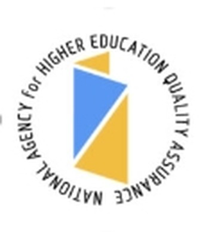
Vice-présidente du Conseil d'experts en administration et gestion publiquesDeputy Chair of the Expert Council on Public Governance and Administration
Agence nationale d'assurance qualité de l'enseignement supérieurThe National Agency for Higher Education Quality Assurance — Agence nationale d'assurance qualité de l'enseignement supérieurOctobre 2019 — avril 2020 · 7 mois. Domaine — éducation : évaluation experte et accréditation des programmes d'enseignement supérieur dans le domaine de l'administration et de la gestion publiques.October 2019 – April 2020 · 7 months. Field: Education — expert evaluation and accreditation of higher education programs in the field of public administration and management.
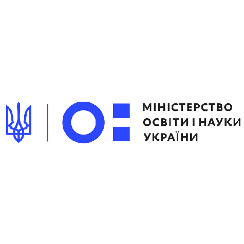
Présidente de la sous-commission d'administration et de gestion publiques du Conseil scientifique et méthodologiqueChair of a Sub-commission on Public Governance and Administration, Scientific and Methodological Council
Ministère de l'Éducation et des Sciences de l'UkraineMinistry of Education and Science of UkraineMars 2016 — septembre 2019 · 3 ans et 7 mois. Domaine — éducation : direction de l'élaboration des standards de l'enseignement supérieur pour les niveaux licence, master et doctorat.March 2016 – September 2019 · 3 years 7 months. Field: Education — management of the development of higher education standards for bachelor's, master's, and PhD levels.
Personnes et travail communPeople & shared work
Une collaboration devenue systèmeCollaboration that became a system
Non une simple liste de noms, mais deux cartes de collaboration professionnelle : le groupe de travail du premier Concept d'administration électronique et les co-auteurs des publications clés.Not a list of names, but two maps of professional collaboration: the working group behind Ukraine’s first e-governance concept and the co-authors of my key publications.
2009–2010
Premier Concept de développement de l'administration électronique de l'UkraineUkraine’s first E-Governance Development Concept
Initié et financé par la Fondation internationale « Renaissance ». Le Concept a été adopté le 13 décembre 2010.Initiated and funded by the International Renaissance Foundation. Adopted on 13 December 2010.
10 experts ukrainiens10 Ukrainian experts
Oleksandr Baranov · Mariana Demkova · Serhii Dziuba · Andrii Yefanov · Ihor Zhyliaiev · Eduard Klepets · Tetiana Popova · Ihor Ruban · Andrii Semenchenko · Svitlana ChukutOleksandr Baranov · Mariana Demkova · Serhii Dziuba · Andrii Yefanov · Ihor Zhyliaiev · Eduard Klepets · Tetiana Popova · Ihor Ruban · Andrii Semenchenko · Svitlana Chukut
2 experts estoniens2 Estonian experts
Arvo Ott · Yuri Misnikov · eGovernance Academy
04.2010 création du Centre national d'administration électroniqueNational E-Governance Centre established08.12.2010 signature des mémorandums Ukraine–EstonieUkraine–Estonia memoranda signed
Fondation internationale « Renaissance » →International Renaissance Foundation →
Co-auteurs de livres, de manuels et de recherchesCo-authors of books, guides and research
CompétencesCompetencies
CompétencesSkills
98 compétences au total. Ci-dessous, des groupes thématiques ; celles marquées ★ ont été démontrées au cours de l'Institut d'administration publique du Canada et approuvées par des collègues.98 skills in total. Thematic groups follow; skills marked ★ were demonstrated at the Institute of Public Administration of Canada course and endorsed by colleagues.
Administration publique et gouvernance numériquePublic administration & digital governance
Public Administration ★Public Services ★Administration électroniqueE-GovernanceDémocratie électroniqueE-DemocracyGouvernance numériqueDigital GovernanceServices électroniquesE-ServicesPolitique d'informationInformation PolicyVilles intelligentesSmart CitiesInclusion numériqueDigital InclusionDéveloppement durableSustainable Development
★ Public Administration et Public Services : démontrées au cours de l'Institut d'administration publique du Canada « Navigating AI: AI Agents for Public Service » ; approuvées par Olha Zahvoiska (1 approbation chacune).★ Public Administration and Public Services: demonstrated at the Institute of Public Administration of Canada course “Navigating AI: AI Agents for Public Service”; endorsed by Olha Zahvoiska (1 endorsement each).
Intelligence artificielle et donnéesArtificial intelligence & data
Artificial Intelligence (AI)Generative AI ToolsPrompt EngineeringBig DataRéseaux énergétiques intelligentsSmart Grid
CommunicationsCommunications
Stratégies de communicationCommunication StrategiesCampagnes de communicationCommunication CampaignsRelations publiquesPublic Relations
Recherche et éducationResearch & education
Méthodes de recherche qualitativesQualitative Research MethodsMéthodes de recherche quantitativesQuantitative Research MethodsÉthique de la rechercheResearch EthicsEnseignement innovantInnovative TeachingAccréditation des programmes d'enseignementAccreditation of Educational ProgrammesStandards de l'enseignement supérieurHigher Education Standards
Technologies et outilsTechnologies & tools
Brightspace (D2L)MoodleH5PMicrosoft OfficeMicrosoft ExcelGoogle WorkspaceChatGPTMicrosoft CopilotClaudeGeminiObjets d'apprentissage numériquesDigital learning objectsConception de cours en ligne et hybridesOnline & hybrid course designConception de contenus accessiblesAccessible content designFlux de travail assistés par l'intelligence artificielleAI-assisted workflows
Langues : ukrainien — langue maternelle ; anglais — niveau professionnel de travail ; français — niveau débutant, en cours d'apprentissage structuré en vue d'un niveau professionnel de travail.Languages: Ukrainian — native; English — professional working proficiency; French — beginner, currently pursuing structured study toward professional working proficiency.
Brevets et certificats d'auteurPatents & copyright certificates
Avis des collèguesPeer recommendations
RecommandationsRecommendations
3 recommandations reçues ; deux sont affichées publiquement.Three recommendations received; two are publicly visible.
Recommendation
Jennifer Sommer
Souligne la persévérance, la créativité et le dévouement, ainsi qu'une connaissance approfondie des politiques éducatives, des programmes d'études et du développement innovant.Highlights perseverance, creativity and dedication, together with deep knowledge of education policy, curricula and innovative development.
Recommendation
Olha ZahvoiskaOlha Zahvoiska
Une recommandation détaillée sur le travail commun à Académie nationale d'administration publique auprès du Président de l'Ukraine et à Université technique nationale d'Ukraine « Institut polytechnique de Kyiv Igor Sikorsky » : l'organisation des « Journées de l'administration électronique en Ukraine », la recherche à l'intersection de l'administration électronique et des objectifs de développement durable, l'enseignement conjoint des cours « Villes intelligentes » et « Fondements de l'administration électronique ».A detailed recommendation on joint work at National Academy of Public Administration under the President of Ukraine and National Technical University of Ukraine «Igor Sikorsky Kyiv Polytechnic Institute»: organising the E-Governance Days in Ukraine, research at the intersection of e-governance and the Sustainable Development Goals, and co-teaching the “Smart Cities” and “Fundamentals of Electronic Governance” courses.
AffiliationsMemberships & organisations
Héritage
Initiatives fondatrices
Des réalisations qui n'existaient pas avant : des spécialisations, une revue, une union scientifique, une profession dans la classification.
2001–2010
Fondatrice de l'Union des jeunes chercheurs de l'Académie nationale d'administration publique auprès du Président de l'Ukraine
Création et direction de l'union des jeunes chercheurs de l'Académie nationale d'administration publique auprès du Président de l'Ukraine.
2009–2011
Rédactrice en chef de la revue « E-Governance »
Direction de la revue scientifique internationale — confirmé par l'ours du n° 1/2010.
Années 20002000s
Spécialisation « Politique d'information »
Création de la première spécialisation en politique d'information et rédaction du premier manuel.
2013–2015
Spécialité « Administration électronique »
Élaboration et accréditation de la spécialité de master à l'Université technique nationale d'Ukraine « Institut polytechnique de Kyiv Igor Sikorsky » ; direction de l'élaboration des programmes des deux niveaux.
2008–2010
Premier Concept d'administration électronique de l'Ukraine
Travail au sein du groupe de travail financé par la Fondation internationale « Renaissance » ; le Concept a été adopté par le Conseil des ministres.
2007–2011
Département de politique d'information de l'Académie nationale d'administration publique auprès du Président de l'Ukraine
Direction du département et de l'ensemble « Politique d'information et communications ».
Années 20002000s
Profession 1229.7 dans la Classification
Initiative d'inscription du « dirigeant des systèmes organisationnels d'administration électronique » dans la Classification des professions.
depuis 2015
Conférences « Problèmes contemporains de management »
Co-organisation de la série et vice-présidence du comité d'organisation en 2019.
2015–2020
Programmes « Administration électronique » des deux niveaux
Direction de l'élaboration des programmes professionnels de licence et de master à l'Université technique nationale d'Ukraine « Institut polytechnique de Kyiv Igor Sikorsky » ; rédaction des syllabus des disciplines de base.
з 2020
Programme doctoral « Administration et gestion publiques »
Direction de l'élaboration du programme doctoral de troisième cycle à l'Université technique nationale d'Ukraine « Institut polytechnique de Kyiv Igor Sikorsky » ; garante du programme.
з 2020
Cours sur la plateforme « Sikorsky » (Moodle)
Élaboration de modules complets d'enseignement à distance : « Villes intelligentes », « Fondements de l'administration électronique », « Démocratie électronique » et autres.
Accueil · Bibliothèque
Bibliothèque des publications
Articles, monographies, actes de conférences, projets, certificats et distinctions. Recherche par titre ou filtres par type et par année.
Éditions vérifiéesVerified editions
Les livres que l'on peut voirThe books you can see
Toutes les éditions dont une vraie couverture ou page de titre est conservée — le manuel de 2022, les actes de la première Journée de l'administration électronique (2008), le manuel « Politique d'information » (2e éd., 2008) et le support de cours de 2007.Every edition for which a genuine cover or title page survives — the 2022 textbook, the proceedings of the first E-Governance Day (2008), the Information Policy textbook (2nd ed., 2008) and the 2007 lecture outline.
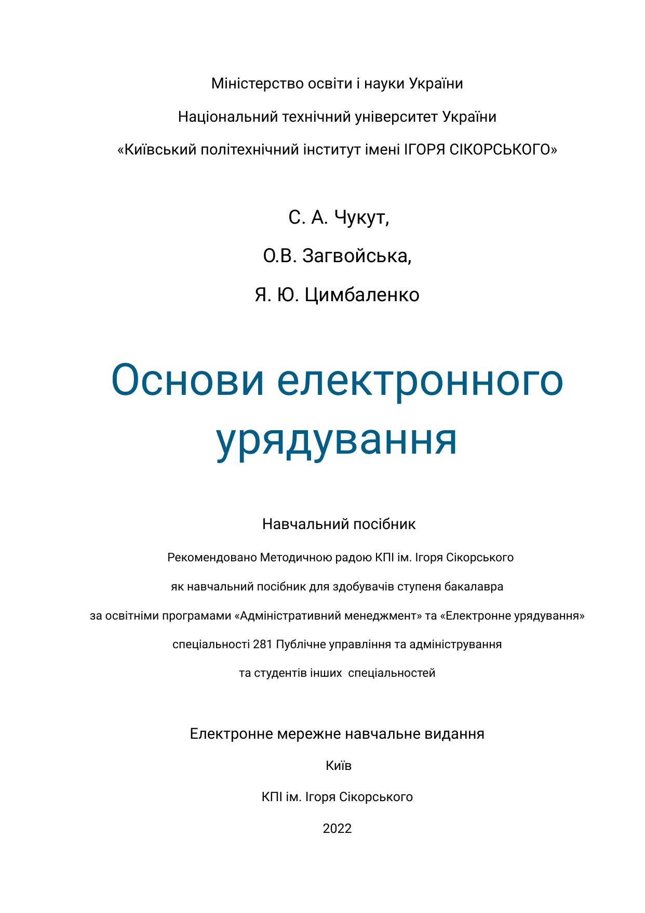
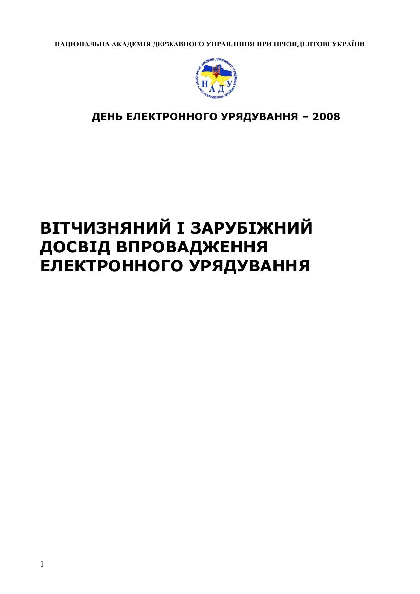
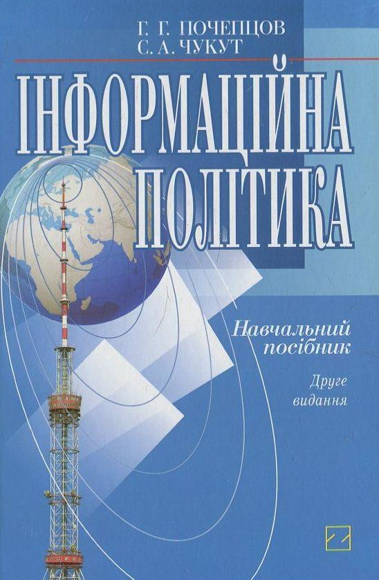
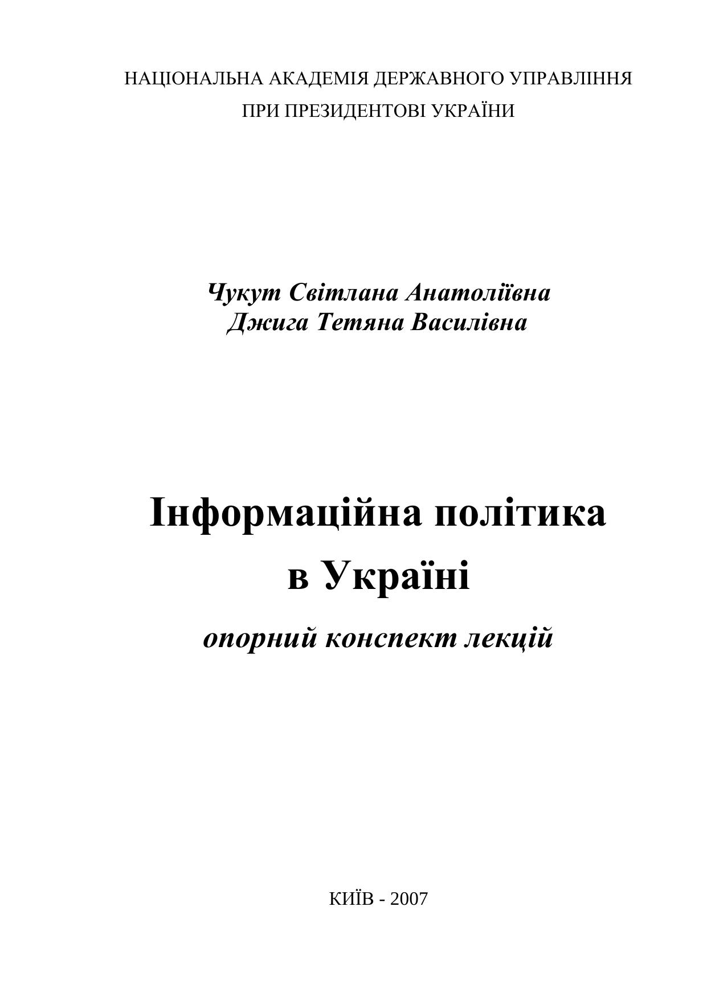
Les autres livres et manuels — la première édition de « Politique d'information » (2006), « Gouvernement électronique » (2007), « Politique humanitaire » (2002), la monographie de 1999 et les guides méthodologiques — figurent au catalogue ci-dessous comme notices textuelles : aucune image de couverture ou de page de titre vérifiée n'existe pour eux dans les catalogues ouverts ; elles pourront être ajoutées à partir de photographies d'exemplaires personnels.The other books and textbooks — the first edition of Information Policy (2006), E-Government (2007), Humanitarian Policy (2002), the 1999 monograph and the methodological guides — are catalogued below as text records: no verified cover or title-page image exists for them in open catalogues; those can be added from photographs of personal copies.
Google Scholar
Ouvrir le profilOpen the profile ↗
95travauxworks
1 9431,943citations
20indice hh-index
39indice i10i10-index
EN DATE D'OCTOBRE 2026AS OF OCTOBER 2026
Aucun résultatNo results foundEssayer un autre titre ou réinitialiser les filtres pour retrouver la liste complète.Try a different title or clear the filters to bring the full list back.
Accueil · Cours
Cours enseignés
Des programmes d'auteure nourris de trente ans d'expérience : des premiers cours de politique d'information en Ukraine aux stratégies numériques pour fonctionnaires. Cliquer pour déployer le programme.
Cours d'auteureSignature courses
Cours d'auteureSignature courses
Des programmes d'auteure nourris de trente ans d'expérience : des premiers cours de politique d'information en Ukraine aux stratégies numériques pour fonctionnaires. Cliquer pour déployer le programme.My signature programmes draw on thirty years of experience: from Ukraine's first courses in information policy to digital strategies for civil servants. Click to expand a programme.
Le cours à l'origine de tout un domaine : création de la spécialisation « Politique d'information » à l'Académie nationale d'administration publique auprès du Président de l'Ukraine, rédaction du premier manuel ukrainien de la discipline et création du cours à distance en 2001–2007. Le programme explique l'architecture de la politique d'information de l'État, le travail avec les médias et le public, les consultations publiques et la responsabilité réputationnelle du dirigeant.
Au programme
- Essence de la politique d'information
- Interaction avec les médias
- Consultations publiques
- Gestion de la réputation du dirigeant
Élaboration d'un programme de formation modulaire sur le mass timber (bois d'ingénierie / engineered wood construction), commandé par l'entreprise de construction canadienne EllisDon.Developed a modular training course on mass timber (engineered wood construction) on commission for the Canadian construction company EllisDon.
Un cours sur la formation d'équipes efficaces dans les organisations publiques et sur l'évolution du rôle de leader selon la situation. Au centre : la répartition des rôles, l'interaction au sein de l'équipe, la responsabilité et la prise de décisions de gestion argumentée.
Au programme
- Rôles et interaction au sein de l'équipe
- Styles et responsabilité du leader
- Prise de décisions de gestion
La discipline donne une compréhension systématique des causes, de la structure et de la dynamique des conflits. Les étudiants apprennent à analyser les positions et les intérêts des parties, à se préparer aux négociations et à choisir des modes constructifs de règlement des différends dans l'environnement de travail.
Au programme
- Causes et dynamique du conflit
- Positions, intérêts et négociations
- Règlement constructif des différends
Le cours associe l'analyse stratégique à la pratique de la définition des objectifs et de la conduite du changement. Les participants apprennent à lire l'environnement d'une organisation, à définir des priorités, à les traduire en décisions et à contrôler la mise en œuvre de la stratégie dans le secteur public.
Au programme
- Analyse stratégique de l'environnement
- Objectifs, priorités et décisions
- Mise en œuvre des changements dans les organisations publiques
Un cours pratique qui mène de la question de recherche à un travail de qualification argumenté. Les étudiants choisissent des méthodes qualitatives et quantitatives, travaillent avec les sources et l'éthique académique, construisent la structure de la recherche et se préparent à la soutenance publique.
Au programme
- Question de recherche et conception du travail
- Méthodes qualitatives et quantitatives
- Éthique académique, structure et soutenance
Université technique nationale d'Ukraine « Institut polytechnique de Kyiv Igor Sikorsky » · 2013–2025
Disciplines universitaires
Département de théorie et de pratique du management de l'Université technique nationale d'Ukraine « Institut polytechnique de Kyiv Igor Sikorsky ». Direction de l'élaboration des programmes « Administration électronique » des niveaux licence et master et accréditation de la spécialité.
2001–2007
Cours à distance de l'Académie nationale d'administration publique auprès du Président de l'Ukraine
« Politique d'information et relations publiques », « Politique d'information en Ukraine » — Académie nationale d'administration publique auprès du Président de l'Ukraine.
2001–2012
Académie nationale d'administration publique auprès du Président de l'Ukraine — programmes de master et programmes professionnelsNational Academy of Public Administration under the President of Ukraine — Master's and professional programmes
Politique d'information · Politique d'information et relations publiques · Processus d'information dans l'administration publique · Société de l'information · Politique culturelle · Administration électronique · Communications dans l'administration publique.Information Policy · Information Policy and Public Relations · Information Processes in Public Administration · Information Society · Cultural Policy · E-Governance · Communications in Public Administration.
1999–2001
Académie nationale d'administration publique auprès du Président de l'Ukraine — cours de cycle supérieurNational Academy of Public Administration under the President of Ukraine — graduate courses
Société de l'information · Politique culturelle — cours de cycle supérieur élaborés et enseignés ; conférences et formations professionnelles pour les fonctionnaires.Information Society · Cultural Policy — graduate courses developed and taught; lectures and professional training for civil servants.
1993–1996
Académie ukrainienne de médecine dentaire (Poltava)Ukrainian Medical Dental Academy (Poltava)
Philosophie · Sociologie · Anthropologie philosophique · Déontologie en médecine · Éthique.Philosophy · Sociology · Philosophical Anthropology · Deontology in Medicine · Ethics.
Université technique nationale d'Ukraine « Institut polytechnique de Kyiv Igor Sikorsky »National Technical University of Ukraine «Igor Sikorsky Kyiv Polytechnic Institute»
Catalogue des cours de l'auteureThe author's course catalogue
Le tableau de cours complet de l'auteure pour l'Université technique nationale d'Ukraine « Institut polytechnique de Kyiv Igor Sikorsky » : 22 disciplines avec niveau, crédits ECTS, statut, année d'élaboration et description. Cliquer pour déployer.The author's complete course table for the National Technical University of Ukraine «Igor Sikorsky Kyiv Polytechnic Institute»: 22 disciplines with level, ECTS credits, status, year developed, and description. Click to expand.
Développe les connaissances théoriques et pratiques des doctorants pour l'utilisation créative et la mise en œuvre des technologies et outils modernes d'administration électronique, afin d'améliorer le système d'administration publique lui-même et de favoriser l'innovation dans la société selon les standards mondiaux.Builds doctoral students' theoretical and practical knowledge for the creative use and implementation of modern e-governance technologies and tools, aimed at improving the public administration system itself and fostering innovation in society on the basis of world standards.
Forme les connaissances théoriques et pratiques modernes des étudiants sur les tendances actuelles du développement des villes intelligentes, et sur l'identification des défis et menaces liés à l'introduction de diverses technologies intelligentes.Forms students' modern theoretical and practical knowledge of current trends in smart city development, and of identifying the challenges and threats that arise when diverse smart technologies are introduced.
Au programme
- La ville intelligente comme système de communicationSmart city as a communications system
- Inclusion sociale dans la smart citySocial inclusion in the smart city
- Données et confiance des habitantsData and residents' trust
- Cas de villes ukrainiennes et européennesUkrainian and European city cases
Forme les connaissances des étudiants sur les tendances actuelles de l'administration électronique et de la démocratie électronique, sur l'identification des défis et menaces de la mise en œuvre, et sur les particularités des diverses technologies et outils numériques.Forms students' knowledge of current trends in e-governance and e-democracy, of identifying the challenges and threats that arise in implementation, and of the specific features of diverse e-governance and e-democracy technologies and tools.
Forme les connaissances et compétences des étudiants dans l'application des mécanismes de communication au sein de l'activité de gestion — notamment pour assurer l'ouverture et la transparence des autorités publiques.Forms students' knowledge and skills in applying communication mechanisms within management activity — in particular to ensure the openness and transparency of public authorities.
Forme les connaissances théoriques et pratiques des étudiants pour l'utilisation créative des approches internationales modernes d'administration électronique et de démocratie électronique, afin d'améliorer le système d'administration publique et de favoriser l'innovation selon les standards mondiaux.Forms students' theoretical and practical knowledge for the creative use of modern international approaches to e-governance and e-democracy, aimed at improving the public administration system and fostering innovation in society on the basis of world standards.
Au programme
- Architecture de l'administration électroniqueE-governance architecture
- Conception des services électroniquesE-service design
- Inclusivité des services numériquesDigital service inclusivity
- Meilleures pratiques : Danemark, Estonie, UkraineBest practices: Denmark, Estonia, Ukraine
Forme la capacité des étudiants à résoudre des tâches spécialisées complexes et des problèmes pratiques de démocratie électronique et de participation électronique, en appliquant théories et méthodes scientifiques dans des conditions de complexité et d'incertitude.Forms students' ability to solve complex specialised tasks and practical problems of e-democracy and e-participation, applying theories and scientific methods under conditions of complexity and uncertainty.
Forme les connaissances et compétences des doctorants dans l'application des mécanismes de communication au sein de l'activité de gestion — pour assurer l'ouverture et la transparence des autorités publiques ; les étudiants apprennent à élaborer et mener des campagnes de communication selon la meilleure expérience internationale.Forms doctoral students' knowledge and skills in applying communication mechanisms within management activity — ensuring the openness and transparency of public authorities; students learn to develop and run communication campaigns using the best international experience.
Forme les connaissances et compétences des étudiants dans l'élaboration et l'application de stratégies de communication au sein de l'activité de gestion et des affaires, y compris l'identification des risques et leur prévention.Forms students' knowledge and skills in developing and applying communication strategies within management activity and business, including identifying risks and preventing them.
Au programme
- Diagnostic des communications de l'organisationCommunications diagnostics
- Parties prenantes et canauxStakeholders and channels
- Stratégie : objectifs, messages, plan de contenuStrategy: goals, messages, content plan
- Communications de criseCrisis communications
- Mesure de l'efficacitéMeasuring effectiveness
Forme les connaissances des étudiants sur les tendances actuelles de l'administration électronique et de la démocratie électronique, sur l'identification des défis et menaces de la mise en œuvre, et sur les particularités des diverses technologies et outils numériques.Forms students' knowledge of current trends in e-governance and e-democracy, of identifying the challenges and threats that arise in implementation, and of the specific features of diverse e-governance and e-democracy technologies and tools.
Forme la capacité des étudiants à résoudre des tâches spécialisées complexes et des problèmes pratiques du développement des villes intelligentes, en appliquant théories et méthodes scientifiques ; les étudiants apprennent les fondements de l'architecture de l'administration électronique et les technologies de décision au sein des systèmes numériques.Forms students' ability to solve complex specialised tasks and practical problems of smart city development, applying theories and scientific methods; students learn the foundations of e-governance architecture and decision-making technologies within e-governance systems.
Combine la recherche scientifique et la pratique : les doctorants acquièrent une expérience pratique de l'enseignement et du travail éducatif auprès des étudiants, ainsi que du travail méthodologique et organisationnel aux côtés des directeurs de recherche et des enseignants principaux du département, en vue de leur développement professionnel futur et de la mise à l'épreuve des propositions de leur thèse.Combines scholarly research with practice: doctoral students gain practical experience of teaching and educational work with student youth, and of methodological and organisational work alongside research supervisors and leading department lecturers, with a view to their future professional development and the testing of their dissertation findings.
Présente les fondements et les meilleures pratiques du développement de l'administration électronique aux niveaux local et régional, en développant les compétences pour résoudre les tâches appliquées d'introduction de l'administration électronique dans le travail des autorités publiques et des organes d'autonomie locale.Introduces the foundations and best practices of e-governance development at the local and regional levels, building skills for solving the applied tasks of introducing e-governance into the work of public authorities and local self-government bodies.
Forme les connaissances et compétences des étudiants pour l'utilisation créative des technologies modernes d'information et de communication avancées dans l'interaction des autorités publiques et de l'autonomie locale avec le public — pour engager les citoyens dans la prise de décisions de gestion et développer la société civile, selon les standards mondiaux et européens.Forms students' knowledge and skills for the creative use of modern information and advanced communication technologies in the interaction of state authorities and local self-government with the public — engaging citizens in management decision-making and developing civil society, in line with world and European standards.
Forme les connaissances théoriques et pratiques des doctorants pour l'utilisation créative et la mise en œuvre des méthodes modernes d'administration électronique, afin d'améliorer le système d'administration publique lui-même et de favoriser l'innovation dans la société selon les standards mondiaux.Forms doctoral students' theoretical and practical knowledge for the creative use and implementation of modern e-governance methods, aimed at improving the public administration system itself and fostering innovation in society on the basis of world standards.
Forme les connaissances théoriques et pratiques des étudiants pour l'utilisation créative et la mise en œuvre des méthodes modernes d'administration électronique — ses modèles de développement en Ukraine et dans le monde, son essence, ses méthodes et ses principes — afin d'améliorer le système d'administration publique selon les standards mondiaux.Forms students' theoretical and practical knowledge for the creative use and implementation of modern e-governance methods — the patterns of its development in Ukraine and the world, its essence, methods and principles — aimed at improving the public administration system on the basis of world standards.
Forme les connaissances des doctorants sur la place et le rôle de la politique d'information de l'État dans la société de l'information moderne, ainsi que sur son fonctionnement et son développement efficaces, avec des compétences pour appliquer ces connaissances dans l'activité de gestion.Forms doctoral students' knowledge of the place and role of state information policy in the modern information society and of its effective functioning and development, together with skills for applying this knowledge in management activity.
Un cours de la spécialité de master 8.15010011 « Administration électronique » (2015) ; le tableau de cours de l'auteure consigne le titre, le niveau et l'année sans description de syllabus.A course of the 2015 Master's speciality 8.15010011 «Electronic Governance»; the author's course table records the title, level and year without a syllabus description.
Un cours de la spécialité de master 8.15010011 « Administration électronique » (2015) ; le tableau de cours de l'auteure consigne le titre, le niveau et l'année sans description de syllabus.A course of the 2015 Master's speciality 8.15010011 «Electronic Governance»; the author's course table records the title, level and year without a syllabus description.
Un cours de la spécialité de master 8.15010011 « Administration électronique » (2015) ; le tableau de cours de l'auteure consigne le titre, le niveau et l'année sans description de syllabus.A course of the 2015 Master's speciality 8.15010011 «Electronic Governance»; the author's course table records the title, level and year without a syllabus description.
Un cours de la spécialité de master 8.15010011 « Administration électronique » (2015) ; le tableau de cours de l'auteure consigne le titre, le niveau et l'année sans description de syllabus.A course of the 2015 Master's speciality 8.15010011 «Electronic Governance»; the author's course table records the title, level and year without a syllabus description.
Un cours de la spécialité de master 8.15010011 « Administration électronique » (2015) ; le tableau de cours de l'auteure consigne le titre, le niveau et l'année sans description de syllabus.A course of the 2015 Master's speciality 8.15010011 «Electronic Governance»; the author's course table records the title, level and year without a syllabus description.
La spécialisation de niveau licence en administration électronique au sein de la spécialité 074 « Administration et gestion publiques » ; le tableau de cours de l'auteure consigne le titre et le niveau.The bachelor's-level specialisation in electronic governance within specialty 074 «Public Administration and Management»; the author's course table records the title and level.
PédagogiePedagogy
Enseignement et conception de programmesTeaching & curriculum development
Plus de 25 ans d'enseignement : de l'Académie ukrainienne de médecine dentaire (Poltava) et de l'Académie nationale d'administration publique auprès du Président de l'Ukraine — à la Université technique nationale d'Ukraine « Institut polytechnique de Kyiv Igor Sikorsky » (plus de 10 cours en ligne et hybrides dans Moodle) et à George Brown Polytechnic, à Toronto (17 initiatives de cours, plus de 50 modules pratiques).25+ years of teaching: from the Ukrainian Medical Dental Academy (Poltava) and the National Academy of Public Administration under the President of Ukraine — to the National Technical University of Ukraine «Igor Sikorsky Kyiv Polytechnic Institute» (10+ online and hybrid courses in Moodle) and George Brown Polytechnic, Toronto (17 course initiatives, 50+ practical modules).
Pratique pédagogique innovante : « Master, Explore, Implement »Innovative teaching practice: “Master, Explore, Implement”
- Méthode « Master, Explore, Implement » : maîtrise du contenu, exploration guidée, puis mise en œuvre pratique par les étudiants.The “Master, Explore, Implement” method: mastery of content, guided exploration, then practical implementation by students.
- Simulations pédagogiques : SMART CITY: FUTURE – TODAY et CHANGE FOR THE BETTER.Learning simulations: SMART CITY: FUTURE – TODAY and CHANGE FOR THE BETTER.
- Conception de cours dans Brightspace (D2L) et Moodle, objets d'apprentissage interactifs H5P, accessibilité AODA/WCAG.Course design in Brightspace (D2L) and Moodle, interactive H5P learning objects, AODA/WCAG accessibility.
- Programme de master « Gouvernement électronique » créé pour les fonctionnaires à l'Académie nationale d'administration publique auprès du Président de l'Ukraine ; 10 programmes courts de formation pour les fonctionnaires.“Electronic Government” Master's programme created for civil servants at the National Academy of Public Administration under the President of Ukraine; 10 short training programmes for civil servants.
Cours à distance certifiés sur MoodleCertified distance courses in Moodle
Parmi les plus de 10 cours universitaires en ligne et hybrides élaborés à l'Université technique nationale d'Ukraine « Institut polytechnique de Kyiv Igor Sikorsky », quatre cours à distance certifiés sur Moodle : « Villes intelligentes », « Fondements de l'administration électronique », « Démocratie électronique » et « Administration électronique et démocratie électronique ».Of the 10+ online and hybrid university courses developed at the National Technical University of Ukraine «Igor Sikorsky Kyiv Polytechnic Institute», four certified Moodle distance courses: “Smart Cities”, “Fundamentals of E-Governance”, “E-Democracy”, and “E-Governance & E-Democracy”.
George Brown Polytechnic, Toronto — initiatives de coursGeorge Brown Polytechnic, Toronto — course initiatives
À titre de conceptrice de programmes (Curriculum Developer, juin 2024 – septembre 2025), contribution à 17 initiatives de cours et à plus de 50 modules axés sur la pratique, dans les domaines suivants :As Curriculum Developer (June 2024 – September 2025), contributed to 17 course initiatives and 50+ practice-oriented modules in the following fields:
- Apprentissage intégré au travail — Work-Integrated LearningWork-Integrated Learning
- Conformité réglementaire — Regulatory ComplianceRegulatory Compliance
- Services financiers — Financial ServicesFinancial Services
- Hôtellerie et tourisme — Hospitality & TourismHospitality & Tourism
- Construction en bois massif — Mass TimberMass Timber
- Entrepreneuriat dans la construction — Entrepreneurship in ConstructionEntrepreneurship in Construction
- Transition vers la pratique infirmière — Nursing Transition to PracticeNursing Transition to Practice
Conception dans Brightspace (D2L) : référentiels de cours fondés sur les compétences, activités fondées sur des scénarios, évaluations authentiques, objets d'apprentissage interactifs H5P et expériences d'apprentissage en ligne accessibles, conformément aux attentes d'accessibilité AODA/WCAG.Design in Brightspace (D2L): competency-based course frameworks, scenario-based activities, authentic assessments, interactive H5P learning objects, and accessible online learning experiences aligned with AODA/WCAG accessibility expectations.
Portfolio de conception de cours et de programmes d'étudesCourse & Curriculum Development Portfolio
Le portfolio complet de l'auteure (en anglais) documente l'ensemble de ce travail de conception. Sa section I présente 24 cours et modules élaborés à George Brown Polytechnic : apprentissage intégré au travail ; plan financier pour les entrepreneurs noirs du secteur de la menuiserie ; entrepreneuriat dans la construction ; bois massif (deux modules) ; conformité réglementaire (trois cours, dont les services financiers) ; transition vers la pratique infirmière ; la filière hôtellerie et tourisme — principes, gestion des ressources humaines, hébergement mondial (sept modules), droit de l'hôtellerie, entrepreneuriat, contrôle des coûts des aliments et boissons, gestion stratégique de la restauration, réception, gestion stratégique des revenus, entretien ménager et gestion des installations, comptabilité de gestion, tourisme durable — ainsi que la gestion des opérations et des approvisionnements et les applications informatiques de gestion. Sa section II présente 21 cours de l'Université technique nationale d'Ukraine « Institut polytechnique de Kyiv Igor Sikorsky » en gouvernance publique et numérique et en communication, traduits de l'ukrainien ; une troisième section couvre l'élaboration de programmes et de spécialisations.The author's complete portfolio (in English) documents this design work in full. Section I presents 24 course and module developments at George Brown Polytechnic: work-integrated learning; a financial plan for Black entrepreneurs in the carpentry sector; entrepreneurship in construction; mass timber (two modules); regulatory compliance (three courses, including financial services); transition to practice for nurses; the hospitality and tourism stream — principles, human resources management, Global Accommodations (seven modules), hospitality law, entrepreneurship in hospitality, food and beverage cost control, strategic restaurant management, front office operations, strategic revenue management, housekeeping and facilities management, managerial accounting, sustainable tourism — together with operations and supply management and business computer applications. Section II presents 21 courses of the National Technical University of Ukraine «Igor Sikorsky Kyiv Polytechnic Institute» in public and digital governance and communication, translated from the Ukrainian; a third section covers programme and specialisation development.
Programmes élaborés et licenciésProgrammes developed and licensed
Le tableau de cours de l'auteure consigne aussi quatre programmes dont l'élaboration et le licenciement ont été dirigés à l'Université technique nationale d'Ukraine « Institut polytechnique de Kyiv Igor Sikorsky » :The author's course table also records four programmes whose development and licensing were led at the National Technical University of Ukraine «Igor Sikorsky Kyiv Polytechnic Institute»:
2015
Spécialité 8.15010011 « Administration électronique »Specialty 8.15010011 «Electronic Governance»
Master · élaboration, licenciementMaster's · development, licensing
2016
Spécialité 074 « Administration et gestion publiques »Specialty 074 «Public Administration and Management»
Licence · élaboration, licenciementBachelor's · development, licensing
2016
Spécialité 074 « Administration et gestion publiques »Specialty 074 «Public Administration and Management»
Doctorat · élaboration, licenciementDoctor of Philosophy · development, licensing
2016
Spécialité 8.18010018 « Management administratif », spécialisation « Administration électronique dans l'activité administrative »Specialty 8.18010018 «Administrative Management», specialisation «Electronic Governance in Administrative Activity»
Master · élaborationMaster's · development
George Brown Polytechnic · Toronto, Canada
Catalogue des modules George BrownGeorge Brown module catalogue
Le tableau de cours complet de l'auteure : 56 modules élaborés à George Brown Polytechnic entre juin 2024 et mars 2026 — titre, description, date d'achèvement, volume et nombre de ressources pour chaque module. Le détail des modules (plan, évaluation finale, vérifications des connaissances) est reproduit en anglais, langue du tableau d'origine. Cliquer pour déployer.The author's own complete course table: 56 modules developed at George Brown Polytechnic between June 2024 and March 2026 — title, description, completion date, volume, and resource count for every module. Module details (outline, final assessment, knowledge checks) are reproduced in English, the language of the original table. Click to expand.
Familiarise les étudiants en stage avec les principes d'intégrité académique, la politique d'intégrité de George Brown College et les procédures pour maintenir des normes éthiques en milieu professionnel — y compris la reconnaissance des inconduites et des conflits d'intérêts.Familiarises placement students with the principles of academic integrity, George Brown College's Policy of Academic Integrity, and the procedures for upholding ethical standards in professional settings — including recognising misconduct and conflicts of interest.
Plan du moduleModule outline
- 1 Introduction
- 2. Understanding Academic Integrity in the Workplace
- 3. Forms of Academic Misconduct in the workplace
- 4. Consequences of Academic Misconduct in the workplace
- 5. Policies and Procedures
- 6. Aligning Personal and Professional Integrity
Évaluation finaleFinal assessment
This assessment aims to evaluate your understanding of academic integrity in the workplace. Based on the information provided in this module, answer the following questions to the best of your ability. This activity will help reinforce your knowledge and application of academic integrity principles in professional settings…
Vérifications des connaissancesKnowledge checks
Branching Scenarios: 1. Addressing Report Falsification 2. Proper Attribution of Data 3. Reporting Late Attendance 4.Advocating for Fair Treatment 5. Plagiarism in the Workplace 6. Cheating in the Workplace (Intern) 7. Misrepresentation in the Workplace 8. Collusion in the Workplace 9. Unauthorized Use of Resources in the Workplace 10…
Module du programme Microcredentials for Entrepreneurship in the Construction Industry : il donne aux entrepreneurs noirs du secteur de la menuiserie les connaissances et outils pratiques pour bâtir un plan financier complet — prévisions sur deux ans, calcul des dépenses et revenus, impact de la chaîne d'approvisionnement et présentation avec des outils professionnels.Part of the Microcredentials for Entrepreneurship in the Construction Industry program: a practical module that gives Black entrepreneurs in the carpentry sector the knowledge and tools to build a comprehensive financial plan — two-year forecasting, expense and income calculation, supply-chain impact, and presentation with industry-standard tools.
Plan du moduleModule outline
- 1 Introduction
- 2. Introduction to Financial Planning
- 3. Calculate the expenses and potential income
- 4. Financial Forecasting
- 5. Conducting a Two-Year Financial Forecast
- 6. Supply Chain and Operations Management
- 7. Presenting the Financial Plan
- 8. Assessment - Final Project: Developing a Comprehensive Financial Plan
Évaluation finaleFinal assessment
This final project aims to synthesize the knowledge and skills gained throughout the course by developing a comprehensive financial plan for a carpentry business. This project includes preparing financial statements, projections, funding requirements, and a presentation of the financial plan. Step-by-Step Guide to Create the Interactive…
Vérifications des connaissancesKnowledge checks
H5P Branching Scenarios: 1. Understanding the Balance Sheet; 2. Interpreting the Income Statement; 3. Managing the Cash Flow Statement; 4. Managing the Cash Flow Statement; 5. Calculating Potential Income for TimberCraft Carpentry; 6. Calculating Expenses for TimberCraft Carpentry; 7. Calculating Potential Income for TimberCraft…
Présente les processus d'estimation et d'appel d'offres en construction : préparer des estimations de coûts exactes, analyser les documents d'appel d'offres et élaborer des soumissions concurrentielles, en combinant théorie et applications pratiques.Introduces the estimating and bidding processes in construction: preparing accurate cost estimates, analysing bid documents, and developing competitive bids, blending theory with practical applications.
Plan du moduleModule outline
- 1. Introduction
- 2. Overview of Estimating and Bidding in Construction
- 3. Analyzing Bid Documents
- 4. Developing a Competitive Bid
- 5. Final Project: Comprehensive Bid Proposal
Évaluation finaleFinal assessment
Creating an engaging and interactive H5P branching simulation game for developing a comprehensive bid proposal involves using multiple H5P content types to simulate real-world scenarios and decision-making processes. H5P Branching Simulation Game: Comprehensive Bid Proposal; Drag and Drop Activity on Preparing Cost Estimates; Interactive…
Vérifications des connaissancesKnowledge checks
H5P Branching Scenarios: 1. Prepare a Detailed Cost Estimate for a Construction Project; 2. Estimating and Bidding Fundamentals; 3. Supporting Competitive Tendering Processes; 4. Drafting a Project Scope and Specifications; 5. Defining Evaluation Criteria and Weightings; 6. The Construction Bid Challenge; Drag-and-Drop Activities for…
Couvre les principes de conception en bois massif — propriétés structurelles des matériaux, conformité réglementaire, durabilité et pratiques de conception innovantes — pour élaborer des conceptions de bâtiments détaillées et conformes.Covers the principles of mass timber design — structural properties of mass timber materials, regulatory compliance, sustainability, and innovative design practices — so students can develop detailed, compliant building designs.
Plan du moduleModule outline
- Module Overview
- 1. The fundamental properties of mass timber materials and their implications for design
- 2. Building Codes and Regulations in Mass Timber Construction for Design
- 3. Building Information Modeling (BIM) Tools for Mass Timber Construction
- 4. Structural analysis techniques specific to mass timber
- 5. Incorporating Sustainability Principles into Mass Timber Design
- 6. Design Plans for Mass Timber Construction (Final Assessment)
Évaluation finaleFinal assessment
This section provides a step-by-step guide for developing detailed design plans for mass timber construction, including specifying connection types, planning assemblies, incorporating fire safety measures, and ensuring compliance with relevant building codes. Tutorial: Developing Detailed Design Plans for Mass Timber Construction…
Vérifications des connaissancesKnowledge checks
H5P Interactive Presentation: Introduction to Mass Timber Materials; H5P Drag-and-Drop Activities: 1. Match Each Property to Its Correct Description; 2. Customizing Mass Timber Families; Fill-in-the-Blank Exercises: 1. Summary of Differences Between Mass Timber Materials; 2. Analyzing Structural Performance in Revit; H5P Branching…
Exploration approfondie de la gestion de projet dans l'industrie de la construction en bois massif, combinant apprentissage en ligne, pratique sur le campus et technologies avancées comme les simulations de jeu et les jumeaux numériques.An in-depth exploration of project management in the mass timber construction industry, combining online learning with on-campus practice and advanced technologies such as gaming simulations and digital twinning.
Plan du moduleModule outline
- 1. Introduction
- 2. Role and Responsibilities of Various Partners in Mass Timber Construction Projects
- 3. Tracking Permits, Approvals, and Compliance
- 4. Sustainable Sourcing and Supply Chain Management
- 6. Supporting Competitive Tendering Processes
- 7. Employing Technologies for Construction Planning Integration
- 8. Report on progress towards project goals
- 9. Mass Timber Project Management Game https://chatgpt.com/g/g-rwGKdSAfF-mass-timber-expert
Évaluation finaleFinal assessment
Mass Timber Project Management Game: Multiple Choice Quiz, Interactive Video, Hotspots Explaining Different Features of BIM Software, Drag and Drop, Decision Making Scenario, True/False Quiz, Image Hotspot, Fill in the Blanks, Scenario-Based Questions. This game is designed to provide you with hands-on experience in managing a mass…
Vérifications des connaissancesKnowledge checks
H5P Branching Scenarios: 1. "Understanding Roles in Mass Timber Projects" 2. Budget Overrun in a Mass Timber Project 3. Permit and Compliance Tracking 4. for Construction Phase 5. Ensuring Compliance in a Mass Timber Project 6.Navigating the Permitting Process for Brock Commons Tallwood House 7. Delay in Delivery of FSC-Certified CLT…
Constitution de ressources pour le cours : recherche et suggestion de ressources pour les sujets nommés dans le document Parent Supplement.Resource curation for the course: searching and suggesting resources for the topics named in the Parent Supplement document.
Constitution de ressources pour le cours : recherche et suggestion de ressources pour les sujets nommés dans le document Parent Supplement.Resource curation for the course: searching and suggesting resources for the topics named in the Parent Supplement document.
Constitution de ressources pour le cours : recherche et suggestion de ressources pour les sujets nommés dans le document Parent Supplement.Resource curation for the course: searching and suggesting resources for the topics named in the Parent Supplement document.
Travail de développement et de test pour le module d'apprentissage en milieu de travail sur la prévention et le contrôle des infections : test de deux interactifs numériques, commentaires et développement de scénarios ramifiés H5P.Development and testing work for the workplace learning module on infection and disease prevention and control: testing two digital interactives, giving feedback, and developing H5P branching scenarios.
Plan du moduleModule outline
H5P Branching Scenarios: Guest Refuses to Follow Guidelines; Handling a Sick Guest; Child Has Flu Symptoms and You Might Also Be Infected; Colleague Walks into Breakroom Without a Mask; Continuing to Feel Unwell After Five Days; Correctly Identifying Symptoms of Diseases; Family with a Sick Child; Handling Guest Concerns About Seasonal Allergies; Navigating a Tricky…
HOST1085 – Principles of Hospitality and Tourism
Présente l'ampleur de l'industrie de l'accueil, ses liens avec le tourisme et son influence sociale, politique et économique sur les économies, les sociétés et les gouvernements du monde entier.Introduces the scope of the hospitality industry, its interconnections with tourism, and its social, political, and economic influence on economies, societies, and governments worldwide.
Plan du moduleModule outline
1.1. Introduction 1.2. Scope of the Hospitality and Tourism Industry 1.3. Economic Impacts of Hospitality and Tourism 1.4 Social and Political Impacts of Hospitality and Tourism 1.5 Business of Tourism Management 1.6 Tourism Performance 1.7 Responsible Tourism and Strategies to Minimize Negative Impacts 1.8. Final Assessment: Community Relations Simulation
Évaluation finaleFinal assessment
Hotel Operations H5P Branching Scenario: Responding to Community Members and Visitors Scenario Title: Managing Stakeholder Concerns in Hotel Operations Event Planning Restaurant Management H5P Branching Scenario: Managing Community and Business Concerns in Restaurant Management Scenario Title: Balancing Community Expectations and…
Vérifications des connaissancesKnowledge checks
Case Study: Exploring High-Impact Hospitality Initiatives - The Toronto International Film Festival (TIFF) H5P Activity: Exploring High-Impact Hospitality Initiatives (TIFF) Case Study: Tourism in Barcelona – Socioeconomic and Environmental Impacts H5P Activity: Identifying and Addressing Overtourism Challenges in Barcelona H5P…
Examine les caractéristiques opérationnelles des entreprises d'accueil et de tourisme — transport, hébergement, restauration, attractions et intermédiaires de voyage — et les ressources organisationnelles nécessaires pour soutenir et améliorer la prestation de services.Examines the operating characteristics of hospitality and tourism enterprises — transportation, accommodations, food and beverage, attractions, and travel trade — and the organisational resources needed to sustain and enhance service delivery.
Plan du moduleModule outline
2.1. Introduction 2.2. The Importance of Operational Understanding 2.3. Transportation: Operational Characteristics in Hospitality and Tourism 2.4. Accommodation: Operating Characteristics in Hospitality and Tourism Enterprises 2.5. Food and Beverage Services: Operating Characteristics in Hospitality and Tourism Enterprises 2.6. Attractions in Hospitality and Tourism 2.7…
Évaluation finaleFinal assessment
Mastering the Operational Characteristics of Hospitality and Tourism Hotel Operations Branching Scenario Event Planning Branching Scenario Tourism and Hospitality Branching Scenario Restaurant Management Branching Scenario
Vérifications des connaissancesKnowledge checks
Interactive Activity: Video Analysis – Understanding Interconnected Guest Journeys Interactive Activity: Transportation Planning for a Corporate Retreat Case Study: Japan's Shinkansen Trains (Bullet Train) Scenario Title: Adapting to Industry Trends: A Small Business Case Study Case Study: Hilton Hotels Auto-Graded Activity: Hilton…
Explore les possibilités de carrière dans l'accueil et le tourisme, des rôles de première ligne au leadership stratégique, ainsi que les facteurs liés à la main-d'œuvre et les tendances émergentes qui façonnent le secteur.Explores career opportunities in hospitality and tourism, from front-line roles to strategic leadership, together with the labour-force factors and emerging trends that shape the industry's workforce.
Plan du moduleModule outline
3.1. Introduction 3.2. Overview of Diverse Career Opportunities in Hospitality and Tourism 3.3. Labor Force Factors in Hospitality and Tourism: Global and Canadian Context 3.4. Emerging Trends and Roles in Hospitality and Tourism 3.5. Career Development Tools and Strategies 3.6. Preparing for the Future in Hospitality and Tourism Careers 3.7. Final Assessment
Évaluation finaleFinal assessment
H5P Branching Scenario for Final Assessment
HRM1015 Human Resources Management for Hospitality
Présente les fondements de la gestion des ressources humaines dans l'accueil et le tourisme : l'importance stratégique de la GRH, les responsabilités juridiques clés et la façon dont la GRH relève les défis du milieu de travail.Introduces the fundamentals of human resources management in hospitality and tourism: the strategic importance of HRM, key legal responsibilities, and how HRM addresses workplace challenges.
Plan du moduleModule outline
1.1. Introduction 1.2. Human Resource Challenges Facing Organizations 1.3. Steps in Strategic Human Resource Management (SHRM) 1.4. Discrimination and Harassment 1.5. Bona Fide Occupational Qualification (BFOQ) 1.6. Duty to Accommodate 1.7. Final Assessment – “HR Mission: Hotel Harmony”
Évaluation finaleFinal assessment
Auto-graded Final Assessment – “HR Mission: Hotel Harmony”: You are the new HR Manager at Hotel Harmony, a 120-room international hotel preparing for peak season. The General Manager has asked you to lead several urgent HR improvements. Your performance will be scored based on the quality of your decisions across five mission areas…
Vérifications des connaissancesKnowledge checks
Case Studies Overview: 1. AHLA Workforce Recovery Initiative (USA, 2023–2025); Case Studies: 1. Vail Resorts – Managing Seasonal Staffing Shortages; 2. Hilton Worldwide – Embracing Generational and Cultural Diversity; 3. Accor Hotels – Accommodating a Visually Impaired Employee; Case Analysis Quiz: Marriott Harassment Lawsuit (2018)…
Explore les processus stratégiques de recrutement et de sélection dans l'industrie de l'accueil — planifier, attirer, évaluer et intégrer les talents pour bâtir des équipes dynamiques dans l'hébergement mondial.Explores the strategic processes of recruitment and selection in the hospitality industry — planning, attracting, assessing, and onboarding talent to build dynamic hospitality teams across global accommodations.
Plan du moduleModule outline
2.1. Introduction 2.2. Job Descriptions and Recruitment 2.3. How to Attract Candidates 2.4. Onboarding and Training 2.5. Final Assessment
Évaluation finaleFinal assessment
H5P Branching Scenarios: Recruitment Hero Quest – Global Talent Challenge; Recruitment Relay – The Global Hiring Sprint; Final Assessment (Instructor-Graded): Case Study Analysis – Talent Strategy at Ocean Breeze Hotels
Vérifications des connaissancesKnowledge checks
H5P Branching Scenario Activities: 1. Evaluating with STAR Method; Matching: 1. Components of a Job Description Instructions; 2. Build a 3-Day Onboarding Plan; Scenario-Based Decision – Marriott Recruitment Strategy Scenario; Case Studies: 1. Marriott International – Streamlining Recruitment with Role Profiles; 2. Hilton’s ‘Onboarding…
Explore comment une gestion efficace du rendement favorise l'excellence du service et l'engagement des employés dans l'hébergement mondial — cycle de rendement, rétroaction éthique, reconnaissance et systèmes de récompense stratégiques.Explores how effective performance management drives service excellence and employee engagement in global accommodations — the performance cycle, ethical feedback, recognition, and strategic reward systems.
Plan du moduleModule outline
3.1. Introduction 3.2. The Value and Steps of Performance Management in Global Hospitality 3.3. Ethical Guidelines for Performance Management 3.4. The Strategic Role of Employee Benefits 3.5. Types of Employee-Specific Benefits 3.6. Assessing Total Rewards Packages to Improve Human Resources Strategy 3.7. The Steps in the Labour Relations Process 3.8. Final Assessment
Évaluation finaleFinal assessment
Manager at a luxury hotel, you'll face real-world performance challenges involving ethical decisions, development planning, and strategic benefits. This branching activity tests your ability to apply course concepts in a practical, decision-making context. Through this simulation, you'll refine your judgment and leadership skills…
Vérifications des connaissancesKnowledge checks
Case Study Analysis: 1. Marriott International; 2. Four Seasons Hotels – Upholding Ethics in Performance Evaluations; 3. Accor Hotels – Strategic Benefits Driving Engagement; Drag-and-Drop Matching Game; H5P Drag-and-Drop: Global Benefits Plan Design; H5P Branching Scenarios: 1. Designing Inclusive Benefits in a Global Resort Setting; 2…
Constitution de ressources pour le cours : création d'une liste de ressources gratuites attrayantes et intéressantes pour les étudiants.Resource curation for the course: creating a no-cost resource list that is engaging and interesting for students.
Vérifications des connaissancesKnowledge checks
I have completed my work on the sources, ensuring that I aligned them with both the CLOs and the course content. However, I found it challenging to integrate the fourth CLO with the corresponding topics, so I identified distinct sources for each. The two sources highlighted in orange in the table are particularly interesting and…
Constitution de ressources pour les cours d'applications informatiques de gestion, qui enseignent les principes de base des logiciels courants : compilation d'une liste de travail de ressources gratuites, notamment sur YouTube.Resource curation for the business computer applications courses, which teach the basic principles of common software: compiling a working list of free-to-use resources, notably from YouTube.
Vérifications des connaissancesKnowledge checks
Following your advice, I’ve created a table that aligns each topic with its corresponding learning objective. The only adjustment I made to the format was to place the topic in the first column and the CLOs in the second, since some topics relate to multiple CLOs. I found this structure to be clearer for cross-referencing. Additionally…
Constitution de ressources pour les cours d'applications informatiques de gestion, qui enseignent les principes de base des logiciels courants : compilation d'une liste de travail de ressources gratuites, notamment sur YouTube.Resource curation for the business computer applications courses, which teach the basic principles of common software: compiling a working list of free-to-use resources, notably from YouTube.
Vérifications des connaissancesKnowledge checks
Following your advice, I’ve created a table that aligns each topic with its corresponding learning objective. The only adjustment I made to the format was to place the topic in the first column and the CLOs in the second, since some topics relate to multiple CLOs. I found this structure to be clearer for cross-referencing. Additionally…
HOST1171 Global Accommodations course
Présente l'ampleur de l'industrie mondiale de l'hébergement — son évolution historique, sa dynamique actuelle et ses tendances émergentes — et évalue les possibilités d'innovation dans le secteur.Introduces the scope of the global accommodations industry — its historical evolution, current dynamics, and emerging trends — and evaluates opportunities for innovation within the sector.
Plan du moduleModule outline
1.1. Introduction 1.2. Overview of the Hospitality and Accommodations Sector 1.3. Historical Development of Lodging Worldwide 1.4. Accommodation Categories: Hotels, Resorts, Hostels, Airbnb, etc. 1.5. Current Trends in the Global Hospitality Market 1.6. Final Assessment
Présente l'évaluation des marques mondiales : comment les marques fortes façonnent la perception des clients, inspirent confiance et créent un avantage concurrentiel, ainsi que les critères et stratégies qui définissent les marques réputées.Introduces global brand assessment: how strong brands shape guest perceptions, drive trust, and create competitive advantage, and the criteria and strategies that define strong and reputable brands.
Plan du moduleModule outline
2.1. Introduction 2.2. The Role of Global Brands in the Hospitality Industry 2.3. Criteria for Assessing Brand Strength and Reputation 2.4. Case Studies: Successful Global Hospitality Brands 2.5. Final Assessment
Explore comment les divers départements — réception, entretien ménager, restauration, ingénierie et ressources humaines — intègrent leurs rôles et ressources pour assurer le succès opérationnel et la satisfaction des clients dans l'hébergement.Explores how diverse departments — front office, housekeeping, food and beverage, engineering, and human resources — integrate their roles and resources to deliver operational success and guest satisfaction in accommodation settings.
Plan du moduleModule outline
3.1. Introduction 3.2. Rooms Division: Resources, Roles, and Responsibility 3.3. Food and Beverage Division: Resources, Roles, and Responsibility 3.4. Support Division in Hospitality 3.5. Final Assessment: Aligning Roles with Career Opportunities
Évaluation finaleFinal assessment
Final Assessment: Aligning Roles with Career Opportunities As we conclude this module, it’s time to put your knowledge into practice and reflect on the diverse career opportunities within the accommodations industry. This final assessment is designed to help you connect your personal interests, skills, and career aspirations with…
Vérifications des connaissancesKnowledge checks
Simulations: Handling an Overbooking Situation; Handling a Guest Noise Complaint; Resolving a Front Desk Conflict Between Staff; Managing a Late Check-In; Handling a Guest’s Special Request; Managing a Double-Booking Situation; Assisting a Guest with a Special Request; Dealing with a Difficult Guest Request; Handling a Guest Room…
Explore le cycle d'emploi dans l'hébergement : planification de la main-d'œuvre, stratégies de recrutement, développement des employés et pratiques de rétention pour attirer et garder les meilleurs talents.Explores the employment cycle in accommodations: workforce planning, recruitment strategies, employee development, and retention practices that attract and keep top talent.
Plan du moduleModule outline
4.1. Introduction 4.2. The Employment Cycle in Accommodations 4.3 Leveraging the employment cycle for career growth in accommodations 4.4. Transitioning Up and Sideways in Hospitality Careers 4.5. Final Assessment
Explore les avancées technologiques qui transforment l'hébergement — systèmes de gestion hôtelière, réservations automatisées et services aux clients propulsés par l'IA qui améliorent l'expérience, simplifient les opérations et optimisent les revenus.Explores the technological advancements reshaping accommodations — property management systems, automated reservation systems, and AI-powered guest services that enhance guest experiences, streamline operations, and optimise revenue.
Plan du moduleModule outline
5.1. Introduction 5.2. Reservation and Property Management Systems (PMS) 5.3. Guest-Focused Technologies 5.4. Data Analytics in Accommodation Management 5.5. Final Assessment
Regard critique sur la durabilité et l'innovation dans l'hébergement : comment les industries de l'accueil et du tourisme réinventent l'expérience client dans un monde qui exige responsabilité environnementale et excellence opérationnelle.A critical look at sustainability and innovation in accommodations: how the hospitality and tourism industries are reimagining the guest experience in a world that demands both environmental responsibility and operational excellence.
Plan du moduleModule outline
6.1. Introduction 6.2. Certification Systems in Hospitality: Elevating Standards for Sustainability, Safety, and Service 6.3. Sustainable Resource Management in Accommodations: Energy, Water, and Waste Solutions 6.4. Innovations in Accommodation Models 6.5. Final Assessment
Évaluation finaleFinal assessment
Gamified Final Assessment: “Sustainability Quest: Save the Future of Hospitality”
Vérifications des connaissancesKnowledge checks
H5P Branching Scenarios:1. Leading Sustainability at a Global Brand Hotel; 2.Designing a Sustainable Water Strategy; 3. Building a Waste-to-Wealth Strategy; 4. Designing an Urban Capsule Hotel; 5. Designing a Floating Eco-Resort; Simulations: Retrofitting for Sustainability – A Hotel Transformation Challenge; Mini Energy Audit – A…
Explore l'intelligence culturelle dans l'accueil : comment les différences culturelles influencent la prestation de services, et comment personnaliser l'expérience des clients dans le respect des coutumes, des valeurs et des attentes diverses.Explores cultural intelligence in hospitality: how cultural differences impact service delivery, and how to personalise guest experiences while respecting diverse customs, values, and expectations.
Plan du moduleModule outline
7.1. Introduction 7.2. Cultural Sensitivity in Hospitality 7.3. Adapting Services to Diverse Guests 7.4. Case Studies: Unique Cultural Practices in Lodging 7.5. Final Assessment
Évaluation finaleFinal assessment
Final Gamified Assessment: Personalization Power-Up – A Frontline Challenge Objective: Identify missed personalization opportunities and recommend culturally sensitive solutions to improve frontline service.
Vérifications des connaissancesKnowledge checks
H5P Branching Scenarios: 1. Etiquette Explorer – Navigating Global Hospitality; 2. Simulation: Cultural Missteps in Action; 3. Global Guest Interactions: Communication Challenge; Branching Scenario Game: Designing the Perfect Safari Lodge Experience; Auto-Graded Role-Play Simulation: 1. Ryokan Cultural Experience; 2. Aman Cultural…
Law1017 Introduction to Hospitality Law
Explore deux domaines fondamentaux du droit qui façonnent la conduite professionnelle dans l'accueil, le tourisme et la restauration : le droit de la responsabilité civile — devoir de diligence, négligence, responsabilité — et le droit des contrats.Explores two foundational areas of law that shape professional conduct across hospitality, tourism, and food service: tort law — duty of care, negligence, liability — and contract law.
Plan du moduleModule outline
1.1. Introduction 1.2 Introduction to Tort Law in Hospitality 1.3. Negligence: Elements and Impacts in Hospitality Settings 1.4. Vicarious Liability in Hotel and Restaurant Environments 1.5. Strategies for Reducing Legal Risk in Hospitality 1.6. Basics of Contract Law in Hospitality 1.7 Breach of Contract and Available Remedies
Présente les responsabilités juridiques entourant les hôtels et l'hébergement ainsi que les cadres mondiaux qui influencent les opérations d'accueil dans le monde, y compris ceux de l'Organisation internationale du Travail.Introduces the legal responsibilities surrounding hotels and lodgings and the global frameworks that influence hospitality operations worldwide, including those of the International Labour Organization.
Plan du moduleModule outline
2.1. Introduction 2.2. International Standards and Licensing Requirements for Lodging 2.3. Accommodation-Specific Liability and Duty of Care 2.4. Guest Rights: Non-Discrimination and Access 2.5. Privacy and Data Protection in Hotels
Présente les exigences juridiques du secteur de l'alimentation et de l'alcool : règlements de sécurité alimentaire, lois sur le service d'alcool, étiquetage et certifications internationales axées sur la sécurité des clients et la conduite éthique.Introduces the food and alcohol sector's legal requirements: food safety regulations, alcohol service laws, labelling, and international certifications focused on guest safety and ethical conduct.
Plan du moduleModule outline
3.1. Introduction 3.2 International Food Safety Standards and Certifications 3.3 Licensing and Regulation of Alcohol Sales 3.4 Foodborne Illness and Legal Liability 3.5 Labeling, Allergen Declarations, and Consumer Transparency
Guide pratique et international des obligations juridiques des aubergistes et des clients — du moment où une réservation est acceptée jusqu'au départ : relation aubergiste-client, devoir de diligence, biens et vie privée des clients, et expulsions légales.A practical, international roadmap to the legal duties of innkeepers and guests — from the moment a booking is accepted through check-out: the innkeeper–guest relationship, duty of care, guest property and privacy, and lawful removals.
Plan du moduleModule outline
4.1 Introduction 4.2 The Innkeeper–Guest Relationship 4.3. Liability for Premises Safety and Guest Property 4.4. Trespassers, Unauthorized Visitors, and Overstays 4.5. Eviction and Guest Removal 4.6 Surveillance, Privacy and Data Handling 4.7 Hotel Liability for Lost, Stolen, or Damaged Guest Property 4.8. Legal Responsibilities in Emergencies & Crisis Scenarios
HOST1199 Entrepreneurship in Hospitality
Donne aux étudiants les outils pour repérer de véritables possibilités de marché dans le secteur de l'alimentation et des boissons, analyser les tendances et transformer les observations en concepts d'entreprise réalisables.Gives students the tools to identify real market opportunities in the food and beverage sector, analyse trends, and turn observations into feasible business concepts.
Plan du moduleModule outline
1.1. Introduction 1.2. Understanding Market Trends in the Hospitality Sector 1.3 Using SWOT and PESTLE to Evaluate Opportunities 1.4 Spotting Gaps in the Market 1.5 Evaluating Concept Feasibility
Montre comment transformer un concept prometteur en plan d'affaires stratégique et réalisable pour le secteur de l'alimentation et des boissons, avec des outils comme le Lean Canvas et les aspects juridiques du lancement.Shows how to shape a promising concept into a strategic, actionable business plan for the food and beverage sector, using tools like Lean Canvas and covering the legal side of a launch.
Plan du moduleModule outline
2.1. Introduction 2.2 Why Business Planning Matters 2.3 Key Components of a Hospitality-Focused Business Plan: Executive Summary 2.4. Key Components of a Hospitality-Focused Business Plan: Business Description 2.5. Key Components of a Hospitality-Focused Business Plan: Market Research & Analysis 2.6. Key Components of a Hospitality-Focused Business Plan: Operations Plan 2.7…
Explore les principes financiers qui soutiennent les entreprises réussies d'alimentation et de boissons : prévision des revenus et du bénéfice d'exploitation, estimation des coûts fixes et variables, et test de faisabilité financière.Explores the financial principles that underpin successful food and beverage ventures: forecasting revenue and operating income, estimating fixed and variable costs, and testing financial feasibility.
Plan du moduleModule outline
3.1. Introduction 3.2 The Importance of Financial Feasibility 3.3 Startup Cost Estimation 3.4 Basic Financial Statements 3.5 Break-Even Analysis 3.6. Forecasting Sales and Expenses 3.7. KPIs for Hospitality Ventures 3.8. Funding Strategies + Investor Readiness
Explore le marketing d'une nouvelle entreprise d'accueil : raconter des histoires, bâtir des identités et cultiver des communautés dans une industrie où les consommateurs sont motivés par l'expérience et l'émotion.Explores marketing for a new hospitality venture: telling stories, building identities, and nurturing communities in an industry where consumers are motivated by experience and emotion.
Plan du moduleModule outline
4.1. Introduction 4.2. Why Marketing Matters in F&B Startups 4.3 From the 4Ps to a Marketing Strategy & Plan 4.4. Creating a Brand Identity 4.5. Essentials of Digital Marketing 4.6. Measuring Marketing Success
HOST1150 Food and Beverage Cost Control
Fournit des outils pratiques pour comprendre, évaluer et contrôler la performance financière des services alimentaires, en commençant par les relations coût-ventes et coût-volume-profit (CVP).Provides practical tools to understand, evaluate, and control the financial performance of foodservice operations, starting with cost-to-sales and cost-volume-profit (CVP) relationships.
Plan du moduleModule outline
1.1.Introduction 1.2 Cost Control 1.3 Performing Cost-to-Sales Ratio Calculations 1.4 Interpreting Trends and Variances 1.5 Cost-Volume-Profit (CVP) Relationships
Explore comment les services alimentaires performants gèrent la chaîne d'approvisionnement pour contrôler les coûts, réduire le gaspillage et maintenir la qualité des produits — sélection des fournisseurs, commandes exactes, réception, systèmes FIFO et entreposage.Explores how successful foodservice operations manage the supply chain to control costs, reduce waste, and maintain product quality — selecting suppliers, placing accurate orders, receiving, FIFO systems, and storage.
Plan du moduleModule outline
2.1. Introduction 2.2 Introduction to the Purchasing Cycle 2.3 Supplier Selection and Order Management 2.4 Receiving Procedures – Accuracy and Fraud Prevention 2.5 Storage and Issuing – Cost, Waste, and Security 2.6 Inventory Management and Stock Rotation (FIFO, LIFO) 2.7 Reducing Waste and Loss – Operational Impacts on Profitability
Couvre le contrôle des portions et le calcul des coûts des aliments et boissons : comment le sur- et le sous-portionnement affectent les profits et la satisfaction des clients, et comment les coûts standard et réels révèlent les écarts et le gaspillage.Covers portion control and food and beverage cost calculation: how over- and under-portioning affect profit and guest satisfaction, and how standard versus actual costs reveal discrepancies and waste.
Plan du moduleModule outline
3.1. Introduction 3.2. Introduction to Portion Control – Definition, Purpose, and Standards 3.3. Methods and Tools for Effective Portion Control 3.4. Calculating Standard Food and Beverage Costs 3.5. Calculating Actual Food and Beverage Costs 3.6. Identifying Cost Variances and Their Causes 3.7. Implementing Corrective Actions Based on Cost Variance Analysis
Couvre le contrôle des coûts de main-d'œuvre et leurs déterminants clés : aligner la dotation sur les besoins réels et la demande, pour que chaque dollar de main-d'œuvre soutienne la performance de l'exploitation.Covers labour cost controls and their key determinants: aligning staffing with actual business needs and demand, so that every labour dollar supports the operation's performance.
Plan du moduleModule outline
4.1. Introduction 4.2. Introduction to Labour Cost Control 4.3. Types of Labour Costs 4.4. Labour Productivity Metrics 4.5. Scheduling Techniques and Legal Compliance 4.6. Forecasting Labour Needs 4.7. Technology in Labour Management
Évaluation finaleFinal assessment
Module 4 Final Assessment – Labour Cost Controls & Key Determinants Option 2. Version 1. Final Assessment Simulation Game – Module 4: Labour Cost Controls & Key Determinants Scenario Title: Harbourview Café: The Labour Efficiency Challenge Format: H5P Branching Scenario (Auto-Graded Simulation Option 2. Version 2. Module 4 Final…
Strategic Restaurant Management
Enseigne les compétences de gestion liées aux opérations de restaurant — quoi offrir, comment le produire, qui planifier, comment contrôler les coûts et comment vendre les places — dans les conditions réelles de service à The Chefs' House.Teaches the connected management skills of restaurant operations — what to offer, how to produce it, who to schedule, how to control costs, and how seats are sold — through real service conditions at The Chefs' House.
Plan du moduleModule outline
1.1 Introduction 1.2. Menu Planning and Menu Engineering 1.3 Production Planning and Kitchen Workflow 1.4 Scheduling Staff for Service and Events 1.5 Monitoring Cost Controls in Menu, Production, and Scheduling 1.6 Ticket Sales and Design Implementation
Évaluation finaleFinal assessment
Option 1. Version 1. Title: Module 1 Final Assessment – Service Planning Package + Supervisor Brief (Chefs’ House) Option 1. Version 2. Title: Module 1 Final Assessment – Integrated Case: Designing a Chefs’ House Service Option 2. Version 1: Final Assessment – Final Auto-Graded Simulation – Module 1: Title (LMS): Simulation Final…
Prend du recul sur les opérations quotidiennes pour examiner les théories et modèles de gestion qui guident les décisions de restaurant, en reliant les résultats d'apprentissage, les attentes des clients et les réalités opérationnelles à The Chefs' House.Steps back from day-to-day operations to the theories and management models that guide restaurant decisions, connecting learning outcomes, guest expectations, and operational realities at The Chefs' House.
Plan du moduleModule outline
2.1. Introduction 2.2. Human Resources Theory in Restaurant Operations 2.3 Cost Control Theory and Financial Decisions 2.4 Marketing and Sales Theory Applied to Restaurants 2.5 Facilities and Revenue Management Theory Applied to Restaurants
Évaluation finaleFinal assessment
Option 1. Version 1. Title: Module 2 Final Assessment – Manager Decision Packet + Supervisor Brief (Chefs’ House) Option 2. Version 1: Final Assessment – Final Auto-Graded Simulation – Module 2: “Managing Local Roots Night: Theory → Decisions” Option 2. Version 2: Final Assessment – H5P Branching Scenario H5P Branching Scenario: Local…
Se concentre sur la présence des personnes pendant le service : leadership, travail d'équipe et communication claire entre la salle et la cuisine, dans le respect des systèmes de sécurité d'un restaurant-école.Focuses on how people show up during service: leadership, teamwork, and clear communication across front and back of house, following safety systems in a teaching-restaurant setting.
Plan du moduleModule outline
3.1 Introduction 3.2 Leadership in Hospitality: Styles, Skills, and Self-Awareness 3.3 Teamwork and Restaurant Team Performance 3.4 Communication, Conflict, and Professional Conduct 3.5 Safety and Risk Management (Food Safety, Allergens, Physical Hazards, and Recall Readiness) 3.6 Standard Operating Procedures (SOPs) and Service Flow
Évaluation finaleFinal assessment
Option 1. Version 1. Title: Module 3 Final Assessment – Shift Leadership Packet + Supervisor Brief (Chefs’ House) Option 1. Version 2. Title: Module 3 Final Assessment – Recall Response Shift Packet + Supervisor Brief (Chefs’ House) Option 2. Version 1: Final Auto-Graded Simulation (H5P) — with points, feedback, and correct answers…
Front Office Operations
Présente la réception comme la tour de contrôle opérationnelle de l'hôtel — là où les attentes des clients et le travail des départements se rencontrent en temps réel — avec les responsabilités de chacun, la circulation du travail et l'alignement de l'hôtel.Frames the front desk as the hotel's operational control tower — where guest expectations and department work collide in real time — covering who owns what, how work moves, and how the hotel stays aligned.
Plan du moduleModule outline
1.1. Introduction 1.2 The Front Desk Control Tower 1.3. Guests as operational drivers (what guests do shapes what the desk must do) 1.4. Communication channels between departments (the hotel’s “information network”) 1.5. Information continuity: logs, handovers, and “no repeat questions” operations
Évaluation finaleFinal assessment
Option 1. Version 1. Title: Module 1 Final Assessment – Incident Control Package + MOD Brief : Title (LMS): Module 1 Final Assessment – System Outage Check-In Crisis (Resorts World Las Vegas, Feb 2025)Option 1. Version 2. Title: Module 1 Final Assessment – Arrival Control Tower Package + Supervisor Brief (Harbourview Hotel) Option 2…
Vérifications des connaissancesKnowledge checks
H5P Drag & Drop - “Roles → Decisions (Front Office Control Tower); Multiple Choice (Scenario decisions); Fill in the Blanks (Operational language + lens);
Applique le cycle du client comme carte opérationnelle de la réception : la séquence des conditions opérationnelles à réunir pour qu'un client passe proprement de la pré-arrivée à l'arrivée, au séjour, au départ et à l'après-séjour.Applies the guest cycle as the front desk's operating map: the sequence of operational conditions that must be true before a guest can move cleanly from pre-arrival through arrival, occupancy, and departure to post-stay.
Plan du moduleModule outline
2.1 Introduction 2.2. The Guest Cycle Map (front desk version) 2.3. Pre-arrival Phase: Reservations + Readiness (Front Desk Focus) 2.4. Arrival Phase: Check-in as an Operational Handoff (Front Desk Focus) 2.5. Occupancy / In-House Phase: Maintaining Stay Stability (Front Desk Focus) 2.6. Departure Phase: Check-out + Settlement + Room Release (Front Desk Focus) 2.7 Post-stay…
Évaluation finaleFinal assessment
Option 1. Version 1. Title: Module 2 Final Assessment – Guest Cycle Continuity Package + MOD Brief (Harbourview Hotel) Option 1. Version 2. Module 2 Final Assessment – Guest Cycle Control Case File: “Harbourview Under Pressure” (Manual-Graded) Option 2. Version 1: Module 2 Final Assessment (H5P Auto-grade Simulation): “Harbourview Hotel…
Vérifications des connaissancesKnowledge checks
Scenario Snapshots; Drag & Drop (Ordering)
Traite la récupération de service comme un processus opérationnel reproductible, et non une compétence douce : gérer les défaillances que les clients apportent à la réception, protéger l'expérience client, réduire l'escalade et prévenir les dommages à la réputation.Treats service recovery as a repeatable operational process, not a soft skill: handling the failures guests bring to the front desk, protecting the guest experience, reducing escalation, and preventing reputational damage.
Plan du moduleModule outline
3.1 Introduction 3.2 Service recovery as an operating system 3.3. De-escalation: Communication that keeps the guest calm and the team aligned 3.4 Recovery decision-making: choosing the right fix, the right level, and the right time 3.5 Documentation, Compensation Logic, and Escalation Authority
Évaluation finaleFinal assessment
Option 1. Version 1. Title: Module 3 Final Assessment: Service Recovery and Problem Resolution: Harbourview Hotel (Toronto) Integrated Case; Option 1. Version 2. Module 3 Final Assessment – (Real-World Incidents) Harbourview Hotel: Systems Down + Overbooking + Cyber Disruption; Option 1. Version 3. Module 3 Final Assessment – Integrated…
Se concentre sur les logiciels de réception et l'exactitude des transactions dans des conditions réelles — imputations, ajustements et transferts — ainsi que sur l'amélioration des services aux clients, car une seule erreur d'imputation peut déclencher un différend au départ.Focuses on front office software and transaction accuracy under real operating conditions — postings, adjustments, and transfers — and on enhancing guest services, because one wrong posting can trigger a checkout dispute.
Plan du moduleModule outline
4.1. Introduction 4.2. Canada-Focused Front Office Technology Stack + Universal PMS Language 4.3 OPERA Cloud Billing & Dispute Resolution: Posting, Correcting, Verifying (Transaction Accuracy) 4.4. Interpreting the Folio: What Guests See vs What Staff Know 4.5. Coordinating with Other Departments: Turning Transactions into Seamless Guest Service (OPERA Cloud)
Évaluation finaleFinal assessment
Module 4 Final Assessment: Front Office Software & Enhancing Guest Services Option 1 – Version 1: Real-World Billing Incidents (OPERA Cloud) Option 1. Version 2. Module 4 Final Assessment – (Real-World Incidents) Harbourview Hotel (Toronto): Interface Lag + Payment Disruptions + Direct Bill Pressure (OPERA Cloud) Option 1. Version 3…
Strategic Revenue Management
Présente les stratégies de base de la gestion des revenus dans l'industrie de l'hébergement : quoi vendre, à quel prix, quels clients privilégier, quels canaux utiliser et quand protéger l'inventaire.Introduces the core strategies of revenue management in the accommodation industry: what to sell, how to price it, which guests to prioritise, which channels to use, and when to protect inventory.
Plan du moduleModule outline
1.1. Introduction 1.2 Revenue Management Fundamentals 1.3 Core Revenue Management Strategies and How Hotels Apply Them 1.4 KPIs and Report Interpretation 1.5 Putting KPIs into Action 1.6 From KPIs to Controls
Évaluation finaleFinal assessment
Module 1 Final Assessment: Revenue Meeting Brief: From KPIs → Strategy → Controls (Using a Real Case) Option 2. Final Assessment – Module 1 Final Assessment (Auto-graded): “Revenue Meeting Readiness Check”
Passe de la valeur pour le client aux actions de revenu : concevoir des offres selon les besoins et comportements des clients, bâtir une vision défendable de la demande, prévisions, surbooking et tarification différentielle — à partir d'indicateurs comme l'occupation, le tarif moyen et le RevPAR.Moves from guest value to revenue actions: designing offers for different guest needs and behaviours, building a defensible view of demand, forecasting, overbooking, and differential pricing — using signals such as occupancy, ADR, and RevPAR.
Plan du moduleModule outline
2.1 Introduction 2.2 Customer Value, Preferences, and Willingness to Pay (WTP) 2.3 Differential Pricing and Rate Fences in Rooms 2.4 Basic Forecasting for Revenue Decisions 2.5 Overbooking Fundamentals: Protect Occupancy Without Damaging Guest Experience 2.6 Differential Pricing in Food & Beverage (F&B): Managing Revenue by Seat-Time
Évaluation finaleFinal assessment
Module 2 Final Assessment: From Guest Value to Revenue Actions - Forecasting, Overbooking, and Differential Pricing Option 1. Title: Harbourview Hotel Revenue Meeting Package (Rooms + F&B + Function Space) Module 2 Final Assessment - Version 2: Harbourview Revenue Meeting Simulator (H5P Branching Scenario) + Decision Log (Upload) Option…
Adopte le rôle du directeur d'hôtel : interpréter les rapports financiers pour diagnostiquer le vrai moteur des résultats, tester des stratégies en ligne et ajuster les décisions pour améliorer les résultats financiers et la santé opérationnelle de l'hôtel.Shifts into the hotel manager's role: interpreting financial reports to diagnose the real driver behind results, testing online strategies, and adjusting decisions so the hotel's financial results and operational health improve.
Plan du moduleModule outline
3.1. Introduction 3.2 Reading Financial Reports Like a Hotel Manager 3.3 Manager Strategy Selection: Make Your Plan Defensible, Testable, and Measurable 3.4 The Weekly Executive Review Meeting: Turning Reports into Manager Actions 3.5 Online-Based Hotel Operations: Channel Economics, Digital Marketing, Reputation, and Measurable Strategy
Évaluation finaleFinal assessment
Module 3 Final Assessment (Graded) Option 1. Harbourview Executive Performance Brief (EPB) - Using the Week 10 Meeting Pack Purpose Module 3 Final Assessment (Auto-graded): Version 1: Branching Strategy Simulation - “Week in the Life of a GM” (Harbourview) Auto-graded Final Assessment for Module 3: Version 2: Harbourview GM Decision Lab…
Houskeeping and Facilities Management
Présente l'entretien ménager et l'ingénierie comme le système de préparation et de protection des actifs de l'hôtel : un hôtel propre, sûr, fonctionnel et prêt à l'heure promise — et ce qui se brise quand la préparation fait défaut.Presents housekeeping and engineering as the hotel's asset-readiness and asset-protection system: whether the hotel is clean, safe, functional, and ready when promised — and what breaks down when readiness fails.
Plan du moduleModule outline
1.1. Introduction 1.2 Hotel Asset Management Basics 1.3 Housekeeping as Asset Steward 1.4 Engineering as Asset Steward
Évaluation finaleFinal assessment
Module 1 Final Assessment Asset Stewardship Readiness Brief: Housekeeping + Engineering in Action Option 2. Final Assessment – Module 1 Auto-graded Gamified Simulation (H5P) “Harbourview Hotel: Operate as Asset Stewards” (HK + ENG Control Tower)
Met en pratique la prise de décision selon le triple bilan et l'analyse financière de l'entretien ménager : prouver que les opérations sont contrôlées financièrement et économiquement viables, et pas seulement bien intentionnées.Practises triple bottom line decision-making and housekeeping financial analysis: proving that operations are financially controlled and economically feasible, not just well-intentioned.
Plan du moduleModule outline
2.1. Introduction 2.2 The Triple Bottom Line “Compass” (Housekeeping/Engineering version) 2.3 People Pillar: Safety, Workload, and Training (Housekeeping/Engineering) 2.4 Planet Pillar: Water, Energy, Waste, and Chemicals (HK/ENG) 2.5 Profit Pillar: Analyzing Housekeeping Financial Results
Évaluation finaleFinal assessment
Module 2 Final Assessment: Version 1: TBL Stabilization Package + HK Month-End Variance Brief (Harbourview + Lakeshore) Module 2 Final Assessment: Version 2: TBL Decision + Housekeeping Financial Results Analysis (Harbourview Hotel) Option 2. Final Assessment: Module 2 - Auto-graded Final Assessment Setup (recommended) Tool: H5P Question…
Ajoute l'étape professionnelle suivante : prouver la performance de durabilité par une initiative verte reconnue — non par de bonnes intentions, mais par une pratique quotidienne cohérente et des preuves qui résistent à l'examen.Builds the next professional step: proving sustainability performance through a recognised green initiative — not with good intentions, but with consistent daily practice and evidence that can stand up to review.
Plan du moduleModule outline
3.1. Introduction 3.2 Green initiatives landscape 3.3 Leadership in Energy and Environmental Design for Building Operations and Maintenance for Hospitality 3.4 International Organization for Standardization 14001 environmental management system 3.5 Eco-label programs in hotels
Évaluation finaleFinal assessment
Module 3 Final Assessment: Case Study: Harbourfront Hotel (Toronto) - “Proof-Ready Green Initiative” Option 2. H5P Final Assessment (Auto-graded + Gamified): Recommended H5P container H5P Content Type: Branching Scenario Title: Harbourfront Hotel: Sustainability Proof Challenge
Managering Accounting
Va au-delà de l'enregistrement des transactions pour interpréter les données financières dans les environnements complexes et multi-départements de l'accueil : l'efficacité avec laquelle chaque département contribue à la rentabilité globale.Moves beyond recording transactions to interpreting financial data in complex, multi-department hospitality environments: how efficiently each department contributes to overall profitability.
Plan du moduleModule outline
1.1. Introduction 1.2. Understanding Multi-Department Operations 1.3. Cost Allocation in Multi-Department Operations 1.4. Revenue Mix and Profit Variance Analysis 1.5. Comparative and Common-Size Financial Statements
Évaluation finaleFinal assessment
Option 1. Title: Module 1 Final Assessment – Comparative & Common-Size Analysis and Revenue Mix Option 2. Version 1: Final Assessment – Final Auto-Graded Simulation – Module 1 Title (LMS): Simulation Final Assessment – Multi-Department Profitability at Harbourview Hotel Option 2. Version 2: Final Assessment – H5P Branching Scenario…
Couvre deux outils fondamentaux de la gestion financière en accueil — l'analyse des ratios et la prévision des revenus — pour évaluer les résultats passés, prévoir les résultats futurs et établir des stratégies de prix.Covers two foundational tools of hospitality financial management — ratio analysis and revenue forecasting — for evaluating past results, forecasting future outcomes, and setting pricing strategies.
Plan du moduleModule outline
2.1. Introduction 2.2. Financial and Operational Ratios 2.3 Calculating Average Food Check, Cost per Cover, and Income per Cover 2.4 Interpreting Major Ratio Categories from Multiple Stakeholder Perspectives 2.5 Forecasting Required Revenue and Setting Selling Prices
Évaluation finaleFinal assessment
Option 1. Module 2 Final Assessment – Per-Cover Metrics, Ratio Interpretation & Revenue Forecasting; Option 2. Module 2 Auto-Graded Final Assessment Title: Module 2 Final Quiz – Per-Cover Metrics, Ratios & Required Revenue
Vérifications des connaissancesKnowledge checks
Practice Exercises;
Déplace l'attention de ce qui s'est produit vers ce qui est planifié — et si l'exploitation peut se le permettre : budgets, comportement des coûts et analyse des flux de trésorerie.Shifts the focus from what happened to what is planned to happen — and whether the operation can afford it: budgets, cost behaviour, and cash flow analysis.
Plan du moduleModule outline
3.1. Introduction 3.2. Departmental Budgets, Indirect Cost Proration, and Budgeted Income Statements 3.3 Cost Behaviour, Breakeven, and Short-Term Decisions in Hospitality 3.4. Statement of Cash Flows in Hospitality
Évaluation finaleFinal assessment
Option 1. Title: Module 3 Final Assessment – Budgeting, Cost Behaviour, and Cash Flow Analysis Option 2. Version 1: Simulation Final Assessment – Budgeting & Cash Flow at Harbourcrest Downtown Hotel Option 2. Version 2: Module 3 Final Assessment – Budgeting, Cost Behaviour & Cash Flow (Auto-graded Quiz)
Sustainable Tourism
Explore comment les changements climatiques — chaleur extrême, fumée des incendies de forêt, inondations, sécheresse, perte de biodiversité, érosion des côtes et stress hydrique — perturbent les fondements dont dépend le tourisme, et présente les principes du tourisme durable et de la santé.Explores how climate change — extreme heat, wildfire smoke, flooding, drought, biodiversity loss, shoreline erosion, and water stress — disrupts the foundations tourism depends on, and introduces the principles of sustainable tourism and health.
Plan du moduleModule outline
1.1. Introduction 1.2 Understanding Climate Change and Its Impact on Human and Planet Health 1.3 Principles of Sustainability in Tourism 1.4 Applying Sustainable Tourism Principles in Practice
Évaluation finaleFinal assessment
Module 1 Final Assessment: Sustainable Tourism in Practice: Real Case Study Analysis Version 1: Module 1 Final Assessment: Auto-Graded Game Simulation Title: Crisis at Blue Shore: A Sustainable Tourism Simulation Version 2: Final Assessment Title: Module 1 Final Assessment: Heat, Smoke, and Sustainable Tourism Decisions
Passe des principes à l'analyse des destinations : comment les pressions environnementales, la capacité des infrastructures, le bien-être des communautés, les modèles économiques, les systèmes de gouvernance et le comportement des visiteurs façonnent ensemble les destinations de tourisme durable.Moves from principles to destination analysis: how environmental pressures, infrastructure capacity, community wellbeing, economic patterns, governance systems, and visitor behaviour combine to shape sustainable tourism destinations.
Plan du moduleModule outline
2.1. Introduction 2.2 Factors Affecting the Sustainability of a Tourism Destination 2.3 Roles of Various Stakeholders in the Development of Sustainable Tourism Destinations 2.4 Applying Factor and Stakeholder Analysis in Destination Planning
Évaluation finaleFinal assessment
Module 2 Final Assessment: Title: Destination Sustainability Factors and Stakeholder Analysis: Type: Individual written case-study analysis Version 1: Module 2 Final Assessment: Title: Pressure at Moonstone Caves Format: H5P Branching Scenario Version 2: Module 2 Final Assessment: Title: Destination Sustainability Factors and…
Module 3 du cours Sustainable Tourism, sur les pratiques locales et mondiales de tourisme durable et l'élaboration de stratégies ; le tableau de cours de l'auteure consigne le titre du module sans description.Module 3 of the Sustainable Tourism course, on local and global sustainable tourism practices and strategy development; the author's course table records the module title without a description.
Accueil · Médias
Interventions et médias
Conférences publiques, congrès et travail avec les médias — de la Verkhovna Rada d'Ukraine au Rotary Club au Canada.
Vidéo
Regarder les interventions
Clôture de l'Olympiade étudiante panukrainienne d'administration publique, 2018 — participation en qualité de vice-présidente du jury.
Chaîne YouTubeYouTube channel
«Електронне урядування» — Electronic Governance
La chaîne vidéo de Svitlana Chukut : conférences et formations sur l'administration électronique, l'intelligence artificielle générative et les villes intelligentes (en ukrainien).Svitlana Chukut's video channel: lectures and trainings on e-governance, generative artificial intelligence and smart cities (in Ukrainian).
Ouvrir la chaîne →Open the channel →
Session plénière · 2021
XIe conférence « Problèmes contemporains de management »
Enregistrement complet de la session plénière, au nombre des intervenants. À regarder sur Facebook.
Conférence publique · Canada · 2023
« How Social Media & E-Messaging are the Real Weapons in the Russia-Ukraine War »
Au Rotary Club of Kingston, en Ontario : les réseaux sociaux, la messagerie électronique et la lutte informationnelle.
Conférence · Kyiv · 2017
« De l'Internet des objets à la Smart City : problèmes et perspectives »
Intervention à la première conférence scientifique et pratique « Internet des objets : problèmes de régulation juridique et de mise en œuvre » à la Verkhovna Rada d'Ukraine.
Co-organisatrice · depuis 2013
Conférences internationales « Problèmes contemporains de management »
Université technique nationale d'Ukraine « Institut polytechnique de Kyiv Igor Sikorsky ». Travail au sein des comités de programme et d'organisation.
Talk-show · 2021Talk show · 2021
« Vidkrytym Tekstom » — discussion d'experts"Vidkrytym Tekstom" — expert panel
Participation, en qualité d'experte invitée, à une discussion sur Magnolia TV (ЧП.INFO).Appeared as an invited expert on Magnolia TV (ЧП.INFO).
Conférences invitées et formations sur l'intelligence artificielleInvited talks & AI trainings
Formation · 2024Training · 2024
GPTs Development Training 1
Premier volet de la formation au développement d'agents GPT personnalisés ; présentation du GPT personnalisé « Expert in the Development of E-Governance ».First GPTs development training; presentation of the custom GPT “Expert in the Development of E-Governance”.
Formation · 2024Training · 2024
GPTs Development Training 2
Deuxième volet ; présentation du GPT personnalisé « Bachelor's Thesis Writing Advisor ».Second training; presentation of the custom GPT “Bachelor's Thesis Writing Advisor”.
Formation · 2024Training · 2024
GPTs Development Training 3
Troisième volet ; présentation du GPT personnalisé « Curriculum Development Consultant ».Third training; presentation of the custom GPT “Curriculum Development Consultant”.
Formation invitée · 2024Invited training · 2024
Training on Generative AI
Formation invitée sur l'intelligence artificielle générative et ses applications pratiques.Invited training on generative artificial intelligence and its practical applications.
Formation · 2023Training · 2023
Professional Skills Training: Job Search and AI
Formation aux compétences professionnelles : recherche d'emploi et intelligence artificielle.Professional skills training: job search and artificial intelligence.
Chronologie distincteDedicated chronology
Tous les événements — sur une page distincteEvery event, now on its own page
25 enregistrements vérifiés : date, rôle et lieu.Twenty-five verified records, each with its date, role and venue.
Ouvrir la chronologie des événementsOpen the events chronology
AccueilHome · ÉvénementsEvents
Événements et interventions publiquesEvents & public engagements
25 étapes vérifiées d'un travail professionnel — conférences, conférences publiques, forums et activités institutionnelles de 1998 à 2025.Twenty-five verified milestones from professional work, spanning conferences, lectures, forums, and institutional engagements from 1998 to 2025.
ChronologieChronology
25 événements, 1998–2025Twenty-five events, 1998–2025
25 enregistrements vérifiés : date, rôle et lieu.Twenty-five verified records, each with its date, role and venue.
ParticipanteParticipant
XIIIe conférence scientifique et pratique internationale « Problèmes contemporains de management »XIII International Conference “Modern Problems of Management”
National Technical University of Ukraine «Igor Sikorsky Kyiv Polytechnic Institute» · Kyiv
Présidente de sectionSection chair
XIIe conférence scientifique et pratique internationale « Problèmes contemporains de management »XII International Scientific and Practical Conference “Modern Management Problems”
Direction de la section 3 « Administration publique et intelligence artificielle » ; communications « Latest Practices in the Use of Artificial Intelligence Tools in Public Administration » et « AI in Public Administration: Threats and Challenges » · National Technical University of Ukraine «Igor Sikorsky Kyiv Polytechnic Institute» · Kyiv. Comité d'organisation de la conférence (2013–2024).Led Section 3 “Public Administration and Artificial Intelligence”; talks “Latest Practices in the Use of Artificial Intelligence Tools in Public Administration” and “AI in Public Administration: Threats and Challenges” · National Technical University of Ukraine «Igor Sikorsky Kyiv Polytechnic Institute» · Kyiv. Conference organising committee (2013–2024).
Participante la plus activeMost active participant
GISU Symposium
Communication : « The Smart Tourism during the War and Post-War Recovery: The Case of Ukraine » · Western Sydney University · SydneyTalk: “The Smart Tourism during the War and Post-War Recovery: The Case of Ukraine” · Western Sydney University · Sydney
Conférencière invitéeInvited lecturer
How Social Media & E-Messaging are the Real Weapons in the Russia-Ukraine War
Rotary Club of Kingston · Kingston, Ontario
Compte rendu →Event report →Intervenante en session plénièrePlenary speaker
XIe conférence scientifique et pratique internationale « Problèmes contemporains de management »XI International Conference “Modern Problems of Management”
Communication « Administration publique et COVID-19 » · Université technique nationale d'Ukraine « Institut polytechnique de Kyiv Igor Sikorsky », KyivPaper: “Public Administration and COVID-19” · National Technical University of Ukraine «Igor Sikorsky Kyiv Polytechnic Institute», Kyiv
Certificat officiel →Official certificate →IntervenanteSpeaker
Programme « SMART Cities and Tourism » — Digital and Entrepreneurship Academy, Alliance of Guangzhou International Sister-City Universities (GISU)“SMART Cities and Tourism” programme — Digital and Entrepreneurship Academy, Alliance of Guangzhou International Sister-City Universities (GISU)
Communication : « Development of SMART cities: current trends, challenges and threats » · Alliance of Guangzhou International Sister-City Universities (GISU) · Université technique nationale d'Ukraine « Institut polytechnique de Kyiv Igor Sikorsky »Presentation: “Development of SMART cities: current trends, challenges and threats” · Alliance of Guangzhou International Sister-City Universities (GISU) · National Technical University of Ukraine «Igor Sikorsky Kyiv Polytechnic Institute»
Vice-présidente du comité d'organisation · présidente de section · communication plénièreDeputy organising-chair · section chair · plenary speaker
Xe conférence scientifique et pratique internationale « Problèmes contemporains de management »X International Conference “Modern Problems of Management”
National Technical University of Ukraine «Igor Sikorsky Kyiv Polytechnic Institute» · Kyiv
IntervenanteSpeaker
Table ronde sur le développement innovant de la régionRound table on regional innovation development
« Introduction des services électroniques en Ukraine pour les catégories vulnérables de citoyens » · Vinnytsia“Introducing e-services in Ukraine for vulnerable groups” · Vinnytsia
IntervenanteSpeaker
« Droit de l'information : défis contemporains et orientations de développement »“Information Law: Contemporary Challenges and Directions”
« Application du principe du « numérique par défaut » » · Kyiv“Applying the digital-by-default principle” · Kyiv
Vice-présidente du juryDeputy jury chair
Olympiade panukrainienne d'administration publiqueAll-Ukrainian Olympiad in Public Administration
National Technical University of Ukraine «Igor Sikorsky Kyiv Polytechnic Institute» · Kyiv
Photos et vidéos →Photos and video →IntervenanteSpeaker
« Administration électronique : réalités et défis »“E-Governance: Realities and Challenges”
National Technical University of Ukraine «Igor Sikorsky Kyiv Polytechnic Institute» · Kyiv
Présentation →Presentation →IntervenanteSpeaker
Forum de la démocratie directeForum of Direct Democracy
Communication « Electronic Democracy in Ukraine: Victories and Obstacles » · KyivTalk “Electronic Democracy in Ukraine: Victories and Obstacles” · Kyiv
IntervenanteSpeaker
« Internet des objets : problèmes de régulation juridique et de mise en œuvre »“Internet of Things: Legal Regulation and Implementation”
« De l'Internet des objets à la Smart City » · Verkhovna Rada d'Ukraine, Kyiv“From the Internet of Things to Smart City” · Verkhovna Rada of Ukraine, Kyiv
Participante à la session plénièrePlenary-session participant
VIIIe conférence scientifique et pratique internationale « Problèmes contemporains de management »VIII International Conference “Modern Problems of Management”
National Technical University of Ukraine «Igor Sikorsky Kyiv Polytechnic Institute» · Kyiv
IntervenanteSpeaker
« L'État et les transformations sociales mondiales »“The State and Global Social Change”
« L'impact de l'administration électronique sur la transformation du rôle de l'État » · Kyiv“The impact of e-governance on the transformation of the state’s role” · Kyiv
Participante à la session plénièrePlenary-session participant
« Grandes guerres, grandes transformations »“Great Wars, Great Transformations”
Communication sur la guerre moderne, la société en réseau et la psychologie des foules · Université technique nationale d'Ukraine « Institut polytechnique de Kyiv Igor Sikorsky », KyivPaper on contemporary war, network society and crowd psychology · National Technical University of Ukraine «Igor Sikorsky Kyiv Polytechnic Institute», Kyiv
IntervenanteSpeaker
« V. M. Glushkov — pionnier de la cybernétique »“V. M. Glushkov — Pioneer of Cybernetics”
« Particularités de la mise en œuvre de l'administration électronique en conditions de guerre en réseau » · Ukraine“Implementing e-governance under conditions of network warfare” · Ukraine
IntervenanteSpeaker
VIIe conférence scientifique et pratique internationale « Problèmes contemporains de management »VII International Conference “Modern Problems of Management”
« Tendances et problèmes de la mise en œuvre de l'administration électronique en Ukraine » · Kyiv“Trends and challenges in implementing e-governance in Ukraine” · Kyiv
IntervenanteSpeaker
Congrès international « Société de l'information en Ukraine »International Congress “Information Society in Ukraine”
« Tendances de développement de l'administration électronique et risques de sa mise en œuvre » · Ukraine“E-governance development trends and implementation risks” · Ukraine
Organisatrice principalePrincipal organiser
Journées de l'administration électroniqueE-Governance Days
Quatre éditions du forum national · Académie nationale d'administration publique auprès du Président de l'Ukraine, Kyiv. L'histoire complète et documentée fait l'objet d'une page distincte.Four editions of the national forum · National Academy of Public Administration under the President of Ukraine, Kyiv. The full documented record has its own dedicated page.
Ouvrir la page dédiée →Open the dedicated page →Personne interviewéeInterviewee
La lutte pour la spécialité « Administration électronique »The campaign to preserve the E-Governance specialism
Entretien sur la suppression du recrutement · UkraineInterview on the cancellation of student admissions · Ukraine
Lire l'entretien →Read the interview →IntervenanteSpeaker
Lectures RichelieuRichelieu Readings
« Mission du service public en Ukraine : tradition européenne et réalités actuelles » · Odesa. Communication conjointe avec Olha Zahvoiska et Ihor Kukarin sur la formation du personnel aux technologies d'administration électronique.“Mission of Public Service in Ukraine: European Tradition and Current Realities” · Odesa. Joint paper with Olha Zahvoiska and Ihor Kukarin on personnel training in e-governance technologies.
Participante via le groupe de travail du ConceptParticipant through the Concept working group
Forum du Conseil public des technologies de l'information et de la communicationICT Public Council Forum
« Sur les mesures prioritaires de développement de la société de l'information » · Kyiv“Priority measures for information-society development” · Kyiv
ParticipanteParticipant
Congrès international sur l'administrationInternational Congress on Administration
Congrès international consacré aux questions d'administration publique · KyivInternational congress on public administration · Kyiv
IntervenanteSpeaker
Conférence scientifique panukrainienneAll-Ukrainian Scientific Conference
Communication « T. Hobbes on the Nature of State Power » — le point de départ du parcours scientifique, de la philosophie sociale vers l'administration publique.Talk “T. Hobbes on the Nature of State Power” — the starting point of the scholarly path, from social philosophy toward public administration.
PhotographiesPhotographs
Galerie photoPhoto gallery
Trente-quatre photographies des conférences, tables rondes, remises de diplômes et rencontres de travail — cliquez sur une image pour l'agrandir.Thirty-four photographs from conferences, round tables, graduation ceremonies and working meetings — click any image to view it enlarged.
AccueilHome · Journées de l'administration électroniqueE-Governance Days
Premier au MondeFirst in the World
2008200920102011
Journées de l'administration électroniqueThe E-Governance Days
Quatre éditions d'un forum qui a réuni pour la première fois l'État, les représentations diplomatiques, les organisations internationales, le secteur technologique, les chercheurs et les enseignants autour de la gouvernance numérique.We delivered four editions of the forum that first convened government, diplomatic missions, international organisations, technology companies, scholars, and educators around digital governance.
4éditionseditions2008–2011série annuelleannual series300 → 2,000+de 300 participants en 2008 à plus de 2 000 en 2011 · confirmé par les organisateursfrom 300 participants in 2008 to 2,000+ in 2011 · confirmed with the organisers
Un début documentéA documented first
« Pour la première fois en Ukraine »“For the first time in Ukraine”
« Pour la première fois en Ukraine se tient une Journée de l'administration électronique, organisée par l'Académie nationale d'administration publique auprès du Président de l'Ukraine ».“For the first time in Ukraine, an E-Governance Day is being held, organised by the National Academy of Public Administration under the President of Ukraine.”
Premier au Monde. Selon les sources ouvertes, aucune Journée nationale de l'administration électronique antérieure n'a été recensée nulle part. La primauté en Ukraine est expressément attestée dans le mot de bienvenue du Programme des Nations Unies pour le développement publié dans les actes officiels de 2008.First in the World. According to open sources, no earlier national E-Governance Day has been recorded anywhere. Its status as Ukraine’s first is explicitly attested in UNDP’s greeting published in the official 2008 proceedings.
Ouvrir les actes de 2008 →Open the 2008 proceedings →Les personnes derrière la sérieThe people behind the series
Fondatrices et organisatricesFounders & Organizers
Les sources publiques documentent les rôles formels. Le récit personnel de la création de la série est présenté séparément et clairement attribué.Public sources establish our formal roles. The first-hand account of how the series was created is presented separately and explicitly attributed.
Rôles documentésDocumented roles
Prof. Svitlana ChukutProf. Svitlana Chukut
Direction du département de politique d'information de l'Académie nationale d'administration publique auprès du Président de l'Ukraine, qui organisait les Journées ; rédactrice générale des actes de 2008 (1 128 pages), co-rédactrice des actes de 2010, membre du groupe de travail sur l'administration électronique et participante à la table ronde du 17 mai 2011.Headed National Academy of Public Administration under the President of Ukraine’s Information Policy Department, which delivered the Days; general editor of the 1,128-page 2008 proceedings and co-editor of the 2010 proceedings; e-governance working group member; participant in the 17 May 2011 round table as department head.
Olha Zahvoiska, PhDOlha Zahvoiska, PhD
Docteure en administration publique ; co-rédactrice des actes de 2008 et 2010 ; co-autrice du manuel « Fondements de l'administration électronique » (2022) ; partenaire clé du projet.PhD in Public Administration; co-editor of the 2008 and 2010 proceedings; co-author of the textbook Fundamentals of Electronic Governance (2022); and my principal partner in the project.
Microsoft Ukraine 2008 → 2010 → 2011 · actes de 20082008 proceedings · archives de 20112011 archive
ESET Ukraine · partenaire officiel, 2010official partner, 2010
Softkey Ukraine · sponsor de l'exposition, 2010exhibition sponsor, 2010
Le systèmeThe system
Un format reproductible, inauguré iciA repeatable format we pioneered
Les éditions documentées de 2008–2011 révèlent un modèle intégré, mis en place en premier avec Olha Zahvoiska. Les organisateurs ont confirmé que ce système est devenu populaire et a ensuite été imité par d'autres.The documented 2008–2011 editions reveal the integrated model that Olha Zahvoiska and I pioneered. The organisers confirmed that this system became popular and was subsequently adopted by others.
- 01
Un programme multiformatA multi-format programme
Une session plénière, des sections et groupes de travail, une exposition technologique et un pont de vidéoconférence ont été réunis en un seul programme.We combined a plenary session, working sections and groups, a technology exhibition, and a video-conference bridge into one programme.
- 02
Une participation internationaleInternational participation
Des ministres, des ambassadeurs, des représentants des Nations Unies et des experts de la Commission européenne ont été associés à la discussion.We brought ministers, ambassadors, United Nations representatives, and European Commission experts into the discussion.
- 03
Des actes après chaque éditionProceedings for every edition
Les résultats du programme ont été consignés dans des publications et des actes, constituant un enregistrement académique et institutionnel durable.We preserved the programme’s outcomes in published materials and proceedings, creating an enduring academic and institutional record.
- 04
Un partenariat intégré au programmePartnership embedded in the programme
Microsoft, ESET et Softkey ont été associés au-delà du sponsoring : leur expertise, leurs formats d'exposition et leurs activités de formation sont devenus partie intégrante de l'événement.We engaged Microsoft, ESET, and Softkey as more than sponsors: their expertise, exhibition formats, and training activities became part of the event itself.
- 05
Des programmes éducatifs parallèlesEducational side-programmes
En 2010, un programme pour les élèves a été organisé et la revue « E-Governance » lancée ; en 2011, Microsoft a animé des formations pour les enseignants.In 2010, we ran a programme for school pupils and launched the journal E-Governance; in 2011, Microsoft delivered teacher training.
- 06
L'extension à une semaine complèteScaling to a full week
En 2011, le modèle a été étendu d'une journée à un programme de cinq jours, réunissant des événements distincts en un système thématique unique.By 2011, we had expanded the model from a single day into a five-day programme, bringing distinct events together within one thematic system.
Quatre éditionsFour editions
Le développement du forumHow we grew the forum
200814.05 · Kyiv
Premier au MondeFirst in the World
300 participants ont été réunis : les Secrétariats du Président et du Conseil des ministres, l'administration de la Verkhovna Rada, le Conseil de sécurité nationale et de défense, la Cour suprême, la Banque nationale, les pouvoirs centraux et locaux, les ambassades d'Estonie, de Lettonie, de Suède, de Malaisie et du Canada, la représentation des Nations Unies et la Commission européenne.We convened 300 participants from the Presidential and Cabinet secretariats, Verkhovna Rada staff, NSDC, Supreme Court, National Bank, central and local government, the embassies of Estonia, Latvia, Sweden, Malaysia and Canada, the UN office and the European Commission.
- 4 sections, une exposition technologique et une vidéoconférenceFour sections, a technology exhibition, and a video conference
- Rédactrice générale, avec Olha Zahvoiska comme co-rédactrice, des actes de 1 128 pagesGeneral editor, with Olha Zahvoiska as co-editor of the 1,128-page proceedings
- Microsoft présente dès le début : un chapitre distinct des actes examine le rôle de l'entreprise, et la recommandation 12 propose de créer une classe d'administration électronique avec le soutien de Microsoft UkraineMicrosoft was present from the outset: a dedicated proceedings section examined its role, while recommendation 12 proposed a Microsoft Ukraine-supported e-governance classroom
200914.05 · Kyiv
Un dialogue international en temps de criseInternational dialogue in a time of crisis
Environ 300 participants ont été invités. Parmi les invités d'honneur figuraient le ministre estonien des Affaires économiques et des Communications, Juhan Parts, l'ambassadeur de Norvège, Olav Berstad, et la représentante du Programme des Nations Unies pour le développement, Ilaria Carnevali.We invited approximately 300 participants. Distinguished guests included Estonia’s Minister of Economic Affairs and Communications Juhan Parts, Norwegian Ambassador Olav Berstad, and UNDP representative Ilaria Carnevali.
- 5 groupes de travail : des niveaux central et local à la sécurité nationale et à la démocratie électroniqueFive working groups, from central and local governance to national security and e-democracy
- Soutien de la Direction principale de la fonction publique et du Comité d'État pour l'informatisationSupported by the Main Department of Civil Service and the State Committee of Informatization
- Actes de 2010, 180 pages, sous la direction de Chukut et Zahvoiska ; aucun PDF public n'a été retrouvéA 180-page proceedings volume, published in 2010 under the editorship of Chukut and Zahvoiska; no public PDF has been located
201028.04 · Kyiv
Plus de 400 participants — et un programme pour les élèvesMore than 400 participants — and a programme for schoolchildren
Lors du troisième forum « La mise en œuvre de l'administration électronique comme condition nécessaire de la réforme de l'administration publique », des institutions publiques, des éditeurs de logiciels et des experts internationaux ont été réunis.At the third forum, “Implementing E-Governance as a Prerequisite for Public Administration Reform,” we convened public institutions, software companies, and international experts.
- 6 groupes de travail, une exposition et un programme éducatif pour plus de 300 élèves de 12 écoles de KyivSix working groups, an exhibition, and an educational programme for more than 300 pupils from 12 Kyiv schools
- Invités : Gerardo Casini (Nations Unies) et Kerry Monaghan (USAID)Guests included Gerardo Casini (UN) and Kerry Monaghan (USAID)
- Partenaire officiel ESET Ukraine ; sponsors de l'exposition Microsoft Ukraine et Softkey UkraineOfficial partner ESET Ukraine; exhibition sponsors Microsoft Ukraine and Softkey Ukraine
- Présentation du premier numéro de la revue internationale « E-Governance »Launch of the first issue of the international journal E-Governance
201116–20.05 · Kyiv
D'une journée à un programme de cinq joursFrom a single day to a five-day programme
La quatrième édition s'est tenue dans le cadre de l'Année de l'éducation et de la société de l'information. À l'ouverture sont intervenus le président de l'Académie nationale d'administration publique auprès du Président de l'Ukraine, Yurii Kovbasiuk, le député Andrii Shevchenko, l'ambassadrice d'Estonie Jaana Hein, le représentant du Programme des Nations Unies pour le développement Berdi Berdiiev et le directeur général de Microsoft Ukraine, Dmytro Shymkiv.We held the fourth edition within Ukraine’s Year of Education and the Information Society. Opening speakers included National Academy of Public Administration under the President of Ukraine President Yurii Kovbasiuk, MP Andrii Shevchenko, Estonian Ambassador Jaana Hein, UNDP representative Berdi Berdiiev, and Microsoft Ukraine CEO Dmytro Shymkiv.
- 17 mai : participation à une table ronde sur l'accès à l'information publique17 May: participated in a round table on access to public information
- 19 mai : conférence internationale sur l'éducation électronique, plus de 400 participants ; salutations du Premier ministre et du Président de la Verkhovna Rada19 May: an international e-education conference with more than 400 participants and greetings from the Prime Minister and Chair of Parliament
- Microsoft Ukraine a animé des formations technologiques pour les enseignants d'informatiqueMicrosoft Ukraine delivered technology training for computer science teachers
Soutien technologique de la sérieTechnology support for the series
Sponsors et partenairesSponsors & Partners
Entreprises qui ont soutenu la série des Journées de l'administration électronique.Companies that supported the E-Governance Days series.

2008 → 2010 → 2011Contribution d'expertise, exposition technologique, ouverture et formations.Expert contribution, technology exhibition, opening session, and training.
2010Partenaire officiel.Official partner.
2010Sponsor de l'exposition technologique.Sponsor of the technology exhibition.
Soutien institutionnelInstitutional backing
Direction principale de la fonction publiqueMain Department of Civil ServiceComité d'État pour l'informatisationState Committee of InformatizationSecrétariat du Conseil des ministresCabinet of Ministers Secretariat
Archives des événementsEvent archive
22 photographies, 2009–201122 photographs, 2009–2011
Images conservées des archives de l'Académie nationale d'administration publique auprès du Président de l'Ukraine et des matériaux d'ESET. Les personnes ne sont pas identifiées : la résolution des fichiers d'archives ne permet pas une identification fiable.Preserved images from the National Academy of Public Administration under the President of Ukraine archive and ESET materials. Individuals are not identified because the resolution of the archived files does not support reliable identification.
Ce qui demeure dans les archives personnellesWhat remains in the personal archive
Aucune vidéo publique, aucun fichier distinct du logotype en haute qualité, aucun design de badge ou de produits dérivés, ni le PDF complet des actes de 2009 n'ont été retrouvés. Ces matériaux pourront être ajoutés à partir des archives personnelles ou une fois transmis par Olha Zahvoiska.No public video footage, high-resolution standalone event mark, badge or merchandise designs, or complete PDF of the 2009 proceedings has been located. These can be added from the personal archive or once Olha Zahvoiska supplies them.
SourcesSources
Les archives qui gardent l'histoireThe archive that holds the record
Les documents d'archives qui attestent chaque édition, de 2008 à 2011.The archival documents that evidence each edition, from 2008 to 2011.
2008Actes officiels, 1 128 pagesOfficial proceedings, 1,128 pages
2009Annonce de la deuxième JournéeSecond E-Governance Day announcement
2009Rapport archivé de l'Académie nationale d'administration publique auprès du Président de l'UkraineArchived National Academy of Public Administration under the President of Ukraine report
2010Communiqué de presse d'ESET UkraineESET Ukraine press release
2010Rapport archivé de l'Académie nationale d'administration publique auprès du Président de l'UkraineArchived National Academy of Public Administration under the President of Ukraine report
2011Ouverture des JournéesOpening of the E-Governance Days
2011Table ronde du 17 maiRound table, 17 May
2011Conférence internationale du 19 maiInternational conference, 19 May
Selon les sources ouvertes (recherches menées en anglais, français, espagnol, allemand, russe et chinois), aucune Journée nationale de l'administration électronique antérieure n'a été recensée dans le monde ; la primauté en Ukraine est confirmée par le mot de bienvenue du Programme des Nations Unies pour le développement dans les actes de 2008.According to open sources (searched in English, French, Spanish, German, Russian and Chinese), no earlier national E-Governance Day has been recorded anywhere in the world; the first-in-Ukraine status is confirmed by the UNDP greeting in the 2008 proceedings.
Accueil · Partenaires
Partenaires et collaborations
Universités, institutions publiques, fondations et projets internationaux — trente ans de collaboration en Ukraine, en Suisse, en Allemagne et au Canada.
CollaborationsCollaborations
26 organisations partenaires26 partner organisations
Universités, fondations et programmes internationaux avec lesquels elle a travaillé.Universities, foundations and international programmes she has worked with.
Université technique nationale d'Ukraine « Institut polytechnique de Kyiv Igor Sikorsky »
Professeure au département de théorie et de pratique du management (2013–2025)
George Brown Polytechnic
Conceptrice de programmes d'études, productrice de contenus et productrice créative à Toronto, Canada (depuis 2024)
Université nationale « Académie Mohyla de Kyiv »National University of Kyiv-Mohyla Academy
En 2011, formation à la modernisation du secteur public par l'administration électronique, avec la participation de l'Université nationale « Académie Mohyla de Kyiv ».In 2011, completed training in public-sector modernisation through e-government with National University of Kyiv-Mohyla Academy.
Telenor / European Competence ltd.
Participation à la formation de 2011 sur la modernisation du secteur public, dont Telenor / European Competence Ltd. était partenaire.Attended the 2011 public-sector modernisation training partnered by Telenor / European Competence Ltd.
EGAP · Fondation Europe de l'Est
Experte du projet suisse-ukrainien d'administration électronique (2015–2017)
Fondation internationale « Renaissance »
Travail sur le Concept d'administration électronique de l'Ukraine avec un soutien sous forme de subvention (2008–2010)

GIZ (GTZ)
Participation au projet de la société allemande de coopération avec l'Académie nationale d'administration publique auprès du Président de l'Ukraine (2005–2008)
Fondation nationale de la recherche d'Ukraine
Experte de la Fondation nationale de la recherche d'Ukraine (depuis 2020)
Agence nationale d'assurance qualité de l'enseignement supérieur
Vice-présidente du conseil d'experts sectoriel (2019–2020)
Agence nationale d'Ukraine de la fonction publique
Distinctions au concours des meilleures pratiques pédagogiques (2020, 2021)
Rotary Club of Kingston
Conférence publique donnée au Canada (2023)
Banque mondiale
Programme d'enseignement à distance du Réseau mondial d'apprentissage pour le développement suivi en 2001
Entreprise d'État NNEGC « Energoatom »
Participation à l'audit des systèmes de management et d'information des parties prenantes (2021)
DOCCU · PHZH
Formation suivie dans le projet suisse-ukrainien de la Haute école pédagogique de Zurich (2017)
Western Sydney University · GISUWestern Sydney University · GISU
Participation au symposium GISU (2023) et au partenariat avec l'Université technique nationale d'Ukraine « Institut polytechnique de Kyiv Igor Sikorsky » ; Western Sydney University était co-organisatriceParticipated in the 2023 GISU symposium and National Technical University of Ukraine «Igor Sikorsky Kyiv Polytechnic Institute» partnership; WSU was a co-organiser
EGAP
Travail dans le programme suisse-ukrainien d'administration électronique (2015–2017)
SDC Switzerland
Direction suisse du développement — donatrice du programme
eGovernance Academy
Collaboration avec les experts estoniens du groupe de travail sur le Concept d'administration électronique (2008–2010)
Académie nationale d'administration publique auprès du Président de l'Ukraine
Maître de conférences puis professeure (1999–2012) ; direction du département de politique d'information (2007–2012)
Microsoft Ukraine
Partenaire des Journées de l'administration électronique (2008, 2010, 2011) : contribution d'expertise, exposition technologique, session d'ouverture et formations pour les enseignants.Partner of the E-Governance Days (2008, 2010, 2011): expert contribution, technology exhibition, opening session and training for teachers.
ESET Ukraine
Partenaire officiel de la Journée de l'administration électronique 2010.Official partner of the 2010 E-Governance Day.
Softkey Ukraine
Sponsor de l'exposition technologique des Journées de l'administration électronique, en 2010.Sponsor of the technology exhibition at the E-Governance Days, in 2010.
Programme des Nations Unies pour le développementUnited Nations Development Programme
Mot de bienvenue publié dans les actes officiels de la première Journée de l'administration électronique (2008) ; des représentants du Programme ont participé aux éditions de 2009 et de 2011.Welcoming address published in the official proceedings of the first E-Governance Day (2008); representatives of the Programme took part in the 2009 and 2011 editions.
Direction principale de la fonction publique de l'UkraineMain Department of Civil Service of Ukraine
Soutien institutionnel aux Journées de l'administration électronique (2009) ; co-organisateur de la formation de 2011 sur la modernisation du secteur public par l'administration électronique.Institutional backing for the E-Governance Days (2009); co-organiser of the 2011 training on public-sector modernisation through e-government.
Comité d'État de l'Ukraine pour l'informatisationState Committee of Ukraine on Informatization
Soutien institutionnel aux Journées de l'administration électronique (2009).Institutional backing for the E-Governance Days (2009).
Secrétariat du Conseil des ministres de l'UkraineSecretariat of the Cabinet of Ministers of Ukraine
Soutien institutionnel de la série des Journées de l'administration électronique ; représenté dès la première édition, en 2008.Institutional backing for the E-Governance Days series; represented from the first edition, in 2008.
Accueil · Documents et fichiersDocuments & files
Documents et fichiersDocuments & files
Le CV complet, fourni sur demande, puis l'archive : certificats, diplômes, articles, livres et recommandations — tout ce qui documente le parcours, au même endroit.The full résumé, provided on request, then the archive: certificates, diplomas, articles, books and recommendations — everything that documents the record, in one place.
CV complet · un seul documentFull résumé · one document
Le CV complet, sur demandeThe full résumé, on request
Le CV complet — coordonnées, formation, postes, publications, distinctions et certificats, dans un seul document — est fourni sur demande, en anglais ou en français. Écrivez un courriel ou passez par LinkedIn, et le document vous sera envoyé directement.The full résumé — contacts, education, positions, publications, awards and certificates in one document — is provided on request, in English or French. Send an email or reach out on LinkedIn, and the document will be sent to you directly.
CV académique mis à jour le 18 octobre 2026.Academic CV updated 18 October 2026.
ArchiveArchive
Documents et matériauxDocuments & materials
Chaque document disponible, classé par catégorie : la vignette, le titre complet, l'année, la langue et le format.Every available document, sorted by category: the thumbnail, the full title, the year, the language and the format.
Institute of Public Administration of Canada (IPAC)
Navigating AI: AI Agents for Public Service
Certificat du programme « Navigating AI » — quatre sessions sur l'intelligence artificielle dans la fonction publique. Signé par David Fulford, 13 février 2026.Certificate of the “Navigating AI” programme — four sessions on artificial intelligence in the public service. Signed by David Fulford, 13 February 2026.
Université technique nationale d'Ukraine « Institut polytechnique de Kyiv Igor Sikorsky »National Technical University of Ukraine «Igor Sikorsky Kyiv Polytechnic Institute»
Certificat de participation — XIe conférence scientifique et pratique internationale « Problèmes contemporains de management 2021 : transformation de l'administration publique dans le monde post-COVID »Certificate of participation — XI International Scientific and Practical Conference “Modern Problems of Management 2021: Transformation of Public Administration in the Post-COVID World”
Section 4 : transformation numérique de l'administration publique — tendances et défis. Kyiv, 18–19 novembre 2021.Section 4: Digital transformation of public administration — trends and challenges. Kyiv, 18–19 November 2021.
Ce que dit le document (original en ukrainien) : certificat de participation délivré par la Faculté de sociologie et de droit et le Département de théorie et de pratique du management. Il confirme que Svitlana Anatoliivna Chukut a participé à la XIe conférence scientifique et pratique internationale « Problèmes contemporains de management 2021 — Transformation de l'administration publique dans le monde post-COVID », section 4 « Transformation numérique de l'administration publique : tendances et défis ». Kyiv, 18-19 novembre 2021 ; signé par Yana Tsymbalenko, présidente du comité d'organisation.What the document says (original in Ukrainian): a certificate of participation issued by the Faculty of Sociology and Law and the Department of Theory and Practice of Management. It confirms that Svitlana Anatoliivna Chukut took part in the XI International Scientific and Practical Conference “Modern Problems of Management 2021 — Transformation of Public Administration in the Post-COVID World”, Section 4 “Digital Transformation of Public Administration: Trends and Challenges”. Kyiv, 18–19 November 2021; signed by Yana Tsymbalenko, head of the organising committee.
PNG
Institute of Public Administration of Canada (IPAC)
Navigating AI: A Practical Guide for Public Servants
Certificat du programme « Navigating AI » — quatre sessions sur l'intelligence artificielle dans la fonction publique. Signé par David Fulford, 11 décembre 2024. Identifiant : d56fa1c5-e04c-4627-b55d-8066242dce2b.Certificate of the “Navigating AI” programme — four sessions on artificial intelligence in the public service. Signed by David Fulford, 11 December 2024. Credential ID: d56fa1c5-e04c-4627-b55d-8066242dce2b.
Institute of Public Administration of Canada (IPAC)
Navigating AI: A Practical Guide for Public Servants
Certificat du programme « Navigating AI » — quatre sessions sur l'intelligence artificielle dans la fonction publique. Signé par David Fulford, 26 mai 2025. Identifiant : 938b0d9f-f4ae-436d-afcf-5bfeb995dcff.Certificate of the “Navigating AI” programme — four sessions on artificial intelligence in the public service. Signed by David Fulford, 26 May 2025. Credential ID: 938b0d9f-f4ae-436d-afcf-5bfeb995dcff.
George Brown Polytechnic
How to Design and Deliver Training Programs
Cours LinkedIn Learning, certificat délivré via Employee Learning & Development de George Brown Polytechnic. 15 février 2026.LinkedIn Learning course, certificate issued through George Brown Polytechnic Employee Learning & Development. 15 February 2026.
George Brown Polytechnic
AI Prompts for Gamified Learning Design
Cours LinkedIn Learning, certificat délivré via Employee Learning & Development de George Brown Polytechnic. 17 février 2026.LinkedIn Learning course, certificate issued through George Brown Polytechnic Employee Learning & Development. 17 February 2026.
Introduction to AI Literacy
Certificat de cours d'Acadia University. 15 février 2026.Course certificate of Acadia University. 15 February 2026.
George Brown Polytechnic
Future Skills: Artificial Intelligence — How It Impacts Human Creativity
Formation dirigée par un formateur, Employee Learning & Development, George Brown Polytechnic. 18 septembre 2024.Instructor-led training, Employee Learning & Development, George Brown Polytechnic. 18 September 2024.
George Brown Polytechnic
Future Skills: Digital Confidence — Translate Trials into Successes
Formation dirigée par un formateur, Employee Learning & Development, George Brown Polytechnic. 23 août 2024.Instructor-led training, Employee Learning & Development, George Brown Polytechnic. 23 August 2024.
George Brown Polytechnic
Digital Proficiency: Microsoft Excel
Formation dirigée par un formateur, Employee Learning & Development, George Brown Polytechnic. 27 août 2024.Instructor-led training, Employee Learning & Development, George Brown Polytechnic. 27 August 2024.
George Brown Polytechnic
Working Together: The Code and the AODA
Formation autodirigée Health, Safety & Wellness, George Brown Polytechnic. 30 juillet 2024.Self-directed Health, Safety & Wellness training, George Brown Polytechnic. 30 July 2024.
George Brown Polytechnic
Doing the Work: An Introduction to Anti-Racism
Formation autodirigée de l'Office of Anti-Racism, Equity & Human Rights Services, George Brown Polytechnic. 30 juillet 2024.Self-directed training of the Office of Anti-Racism, Equity & Human Rights Services, George Brown Polytechnic. 30 July 2024.
George Brown Polytechnic
Respect in the Workplace: Workplace Violence & Harassment Prevention for Employees
Formation autodirigée Health, Safety & Wellness, George Brown Polytechnic. 30 juillet 2024.Self-directed Health, Safety & Wellness training, George Brown Polytechnic. 30 July 2024.
George Brown Polytechnic
AODA General Requirements
Formation autodirigée de l'Office of Anti-Racism, Equity & Human Rights Services, George Brown Polytechnic. 3 juillet 2024.Self-directed training of the Office of Anti-Racism, Equity & Human Rights Services, George Brown Polytechnic. 3 July 2024.
George Brown Polytechnic
AODA Information and Communication Standard
Formation autodirigée de l'Office of Anti-Racism, Equity & Human Rights Services, George Brown Polytechnic. 2 juillet 2024.Self-directed training of the Office of Anti-Racism, Equity & Human Rights Services, George Brown Polytechnic. 2 July 2024.
George Brown Polytechnic
AODA Customer Service Standard
Formation autodirigée de l'Office of Anti-Racism, Equity & Human Rights Services, George Brown Polytechnic. 2 juillet 2024.Self-directed training of the Office of Anti-Racism, Equity & Human Rights Services, George Brown Polytechnic. 2 July 2024.
Certificate of Participation — German and Slavic Studies II International Multidisciplinary Conference
Conférence « Main Challenges and Issues of University Education in War Conditions: Ukraine – 2022-2024 », University of Manitoba, Winnipeg, 25–26 avril 2024.Conference “Main Challenges and Issues of University Education in War Conditions: Ukraine – 2022-2024”, University of Manitoba, Winnipeg, 25–26 April 2024.
GPT Vision: Seeing the World through Generative AI
Cours de Vanderbilt University sur Coursera. 15 mai 2024. Identifiant : UZGHT6SLWNC7.Vanderbilt University course on Coursera. 15 May 2024. Credential ID: UZGHT6SLWNC7.
OpenAI GPTs: Creating Your Own Custom AI Assistants
Cours de Vanderbilt University sur Coursera. 14 mai 2024. Identifiant : V3EETH9FWLB9.Vanderbilt University course on Coursera. 14 May 2024. Credential ID: V3EETH9FWLB9.
Prompt Engineering for Educators — Specialization
Spécialisation de Vanderbilt University sur Coursera (3 cours). 15 mai 2024. Identifiant : 934Z8SXTAQVV.Vanderbilt University specialization on Coursera (3 courses). 15 May 2024. Credential ID: 934Z8SXTAQVV.
Generative AI for Educators & Teachers — Specialization
Spécialisation de Vanderbilt University sur Coursera (4 cours). 15 mai 2024. Identifiant : JD8XR7BUTM6B.Vanderbilt University specialization on Coursera (4 courses). 15 May 2024. Credential ID: JD8XR7BUTM6B.
Generative AI Assistants — Specialization
Spécialisation de Vanderbilt University sur Coursera (3 cours). 14 mai 2024. Identifiant : F7FFS4XZJ7ZJ.Vanderbilt University specialization on Coursera (3 courses). 14 May 2024. Credential ID: F7FFS4XZJ7ZJ.
Certificate of Appreciation — GISU Alliance
Certificat d'appréciation du Secrétariat de l'Alliance of Guangzhou International Sister-City Universities (GISU) pour l'enseignement du programme « Research on innovations, sustainability and mechanisms of tourism development: challenges and opportunities for Ukraine ». 11 juillet 2023.Certificate of Appreciation of the Secretariat Office for the Alliance of Guangzhou International Sister-City Universities (GISU) for teaching the programme “Research on innovations, sustainability and mechanisms of tourism development: challenges and opportunities for Ukraine”. 11 July 2023.
Educational Credential Assessment — World Education Services (WES) Canada
Évaluation des diplômes pour Immigration, Réfugiés et Citoyenneté Canada : équivalence canadienne — doctorat obtenu. 10 novembre 2023.Educational Credential Assessment for Immigration, Refugees and Citizenship Canada: Canadian equivalency — earned doctorate. 10 November 2023.
TCPS 2: CORE 2022 — Course on Research Ethics based on the Tri-Council Policy Statement
Certificat du Panel on Research Ethics (Canada). Certificat n° 0000942553, 20 juillet 2023.Certificate of the Panel on Research Ethics (Canada). Certificate #0000942553, 20 July 2023.
Certificate of Completion — COSTI Enhanced Language Training Program
Formation en langue des affaires, préparation à l'emploi et terminologie en ligne en communication au travail et service à la clientèle. Toronto, 22 juin 2023.Business Language Training, Pre-Employment Preparation and Online Terminology in Workplace Communication and Customer Service. Toronto, 22 June 2023.
Certificate in Curriculum Development
Certificat du Canadian College of Educators, délivré sous l'autorité du conseil des gouverneurs. 1er décembre 2023.Certificate of the Canadian College of Educators, awarded under the authority of the Board of Governors. 1 December 2023.
Prompt Engineering — Specialization
Spécialisation de Vanderbilt University sur Coursera (3 cours). 29 décembre 2023. Identifiant : ATX2F7LAH2PN.Vanderbilt University specialization on Coursera (3 courses). 29 December 2023. Credential ID: ATX2F7LAH2PN.
ChatGPT Advanced Data Analysis
Cours de Vanderbilt University sur Coursera. 29 décembre 2023. Identifiant : RFF2UQXG47VS.Vanderbilt University course on Coursera. 29 December 2023. Credential ID: RFF2UQXG47VS.
Generative AI for Leaders
Cours de Vanderbilt University sur Coursera. 26 décembre 2023. Identifiant : 725LSSUVGMGJ.Vanderbilt University course on Coursera. 26 December 2023. Credential ID: 725LSSUVGMGJ.
Trustworthy Generative AI
Cours de Vanderbilt University sur Coursera. 26 décembre 2023. Identifiant : D6YJ8QCMNVZQ.Vanderbilt University course on Coursera. 26 December 2023. Credential ID: D6YJ8QCMNVZQ.
Prompt Engineering for ChatGPT
Cours de Vanderbilt University sur Coursera. 26 décembre 2023. Identifiant : 74TUDPQ559A3.Vanderbilt University course on Coursera. 26 December 2023. Credential ID: 74TUDPQ559A3.
Generative AI for Everyone
Cours de DeepLearning.AI sur Coursera. 26 novembre 2023. Identifiant : 3FY5F87MF6EV.DeepLearning.AI course on Coursera. 26 November 2023. Credential ID: 3FY5F87MF6EV.
AI Foundations: Prompt Engineering with ChatGPT
Cours d'Arizona State University sur Coursera. 7 novembre 2023. Identifiant : WGLG48P2PG2C.Arizona State University course on Coursera. 7 November 2023. Credential ID: WGLG48P2PG2C.
Innovative Teaching with ChatGPT
Cours de Vanderbilt University sur Coursera. 5 novembre 2023. Identifiant : 6J38FNCS4HKD.Vanderbilt University course on Coursera. 5 November 2023. Credential ID: 6J38FNCS4HKD.
Certificate of Participation — GISU Alliance
Certificat de participation de la Digital and Entrepreneurship Academy de l'Alliance of Guangzhou International Sister-City Universities (GISU) et de l'Université technique nationale d'Ukraine « Institut polytechnique de Kyiv Igor Sikorsky », pour le programme « SMART Cities and Tourism » et la communication « Development of SMART cities: current trends, challenges and threats ». 28 octobre 2021.Certificate of Participation of the Digital and Entrepreneurship Academy of the Alliance of Guangzhou International Sister-City Universities (GISU) and the National Technical University of Ukraine «Igor Sikorsky Kyiv Polytechnic Institute», for the programme “SMART Cities and Tourism” and the presentation “Development of SMART cities: current trends, challenges and threats”. 28 October 2021.
Experte en accréditation des programmes d'enseignement — formation en ligneExpert in Accreditation of Educational Programmes — online training
Certificat de l'Agence nationale d'assurance qualité de l'enseignement supérieur, via la plateforme Prometheus. Identifiant : db509020286646e7878573586e5f1592. 19 octobre 2019.Certificate of the National Agency for Higher Education Quality Assurance, via the Prometheus platform. Credential ID: db509020286646e7878573586e5f1592. 19 October 2019.
Ce que dit le document (original en ukrainien) : l'Agence nationale d'assurance qualité de l'enseignement supérieur de l'Ukraine, par l'intermédiaire de la plateforme d'apprentissage en ligne Prometheus, certifie que Svitlana Anatoliivna Chukut a réussi le cours « Experte en accréditation des programmes d'enseignement : formation en ligne ». Délivré le 19 octobre 2019.What the document says (original in Ukrainian): the National Agency for Higher Education Quality Assurance of Ukraine, through the Prometheus online learning platform, certifies that Svitlana Anatoliivna Chukut successfully completed the course “Expert on Accreditation of Educational Programs: Online Training”. Issued 19 October 2019.
Ministère de l'Éducation et des Sciences de l'Ukraine · Université technique nationale du pétrole et du gaz d'Ivano-FrankivskMinistry of Education and Science of Ukraine · Ivano-Frankivsk National Technical University of Oil and Gas
Remerciement (Podjaka) — pour la préparation du lauréat (1re place) du concours international de travaux scientifiques étudiants « Sciences managériales, sociales et comportementales dans la mise en œuvre des principes du développement durable », 2022/2023Certificate of Gratitude (Podjaka) — for preparing the winner (1st place) of the International Competition of Student Research Works “Managerial, Social and Behavioural Sciences in Implementing the Principles of Sustainable Development”, 2022/2023
Décerné par arrêté n° 102 du 10 mai 2023 ; signé par le vice-recteur à la recherche, Ihor Chudyk.Awarded by order No. 102 of 10 May 2023; signed by the Vice-Rector for Research, Ihor Chudyk.
JPG
Remerciement — pour la préparation des lauréats du IIe tour du concours panukrainien de travaux scientifiques étudiants en « Administration et gestion publiques », 2020/2021Certificate of Gratitude — for preparing the winners of the second round of the All-Ukrainian Competition of Student Research Works in “Public Administration and Management”, 2020/2021
Université nationale d'économie de Kyiv nommée d'après Vadym Hetman ; signé par L. L. Antoniuk, présidente de la commission sectorielle du concours, 8 avril 2021.Kyiv National Economic University named after Vadym Hetman; signed by L. L. Antoniuk, head of the field competition commission, 8 April 2021.
JPG
Remerciement du Ministère de l'Éducation et des Sciences de l'UkraineCertificate of Gratitude of the Ministry of Education and Science of Ukraine
Décerné à la directrice par intérim de la chaire de théorie et de pratique de l'administration de l'Université technique nationale d'Ukraine « Institut polytechnique de Kyiv Igor Sikorsky », pour un apport important au développement de l'éducation et des sciences ; signé par la ministre Liliia Hrynevych, Kyiv.Awarded, as acting head of the Department of Theory and Practice of Management of the National Technical University of Ukraine «Igor Sikorsky Kyiv Polytechnic Institute», for a significant contribution to the development of education and science; signed by Minister Liliia Hrynevych, Kyiv.
JPG
Agence nationale d'Ukraine de la fonction publiqueNational Agency of Ukraine on Civil Service
Diplôme, IIIe place — concours panukrainien « Meilleures pratiques de mise en œuvre des innovations pédagogiques dans la formation professionnelle des fonctionnaires », catégorie « Formation des masters de la spécialité 281 « Administration et gestion publiques » »Diploma, third place — All-Ukrainian competition “Best Practices in Implementing Educational Innovations in the Professional Training of Civil Servants”, category “Master's Training in Specialty 281 “Public Administration and Management””
Agence nationale d'Ukraine de la fonction publique ; photographie du diplôme encadré, octobre 2020.National Agency of Ukraine on Civil Service; photograph of the framed diploma, October 2020.
JPG
Diplôme d'honneur — pour une contribution importante au développement de l'université, au renforcement de son autorité nationale et internationale et à la formation de spécialistes hautement qualifiésHonorary Diploma — for a significant contribution to the development of the university, strengthening its state and international authority, and training highly qualified specialists
Université technique nationale d'Ukraine « Institut polytechnique de Kyiv Igor Sikorsky » ; signé par le recteur et le secrétaire scientifique.National Technical University of Ukraine «Igor Sikorsky Kyiv Polytechnic Institute»; signed by the Rector and the Academic Secretary.
JPG
Article de revue · 2021Journal article · 2021Investytsiyi: praktyka ta dosvid, No. 12
Stratégies de communication dans la gestion et l'administration publiques : expérience étrangère et ukrainienneCommunication Strategies in Public Management and Administration: Foreign and Ukrainian Experience
Article évalué par les pairs, p. 72–79, avec V. O. Yatsenko. Texte intégral sur le site officiel de la revue.Peer-reviewed article, pp. 72–79, with V. O. Yatsenko. Full text on the journal's official website.
PDF · site officiel de la revuejournal's official website
Course & Curriculum Development Portfolio
Le portfolio complet de l'auteure en conception de cours et de programmes : 24 cours et modules élaborés à George Brown Polytechnic (Toronto) — apprentissage intégré au travail, construction et bois massif, conformité réglementaire et services financiers, transition vers la pratique infirmière, hôtellerie et tourisme — et 21 cours de l'Université technique nationale d'Ukraine « Institut polytechnique de Kyiv Igor Sikorsky » en gouvernance publique, gouvernance numérique et communication, avec l'élaboration de programmes et de spécialisations.The author's complete course and curriculum development portfolio: 24 course and module developments at George Brown Polytechnic (Toronto) — work-integrated learning, construction and mass timber, regulatory compliance and financial services, transition to practice for nurses, hospitality and tourism — and 21 courses at the National Technical University of Ukraine «Igor Sikorsky Kyiv Polytechnic Institute» in public governance, digital governance and communication, together with programme and specialisation development.
DOCX
Educational and Professional Programme “Electronic Governance” — KPI
Présentation du programme (en ukrainien) : son objectif suit la stratégie de développement de l'Université pour 2020–2025 ; la formation pratique comprend des cours hors les murs, notamment au Secrétariat du Cabinet des ministres de l'Ukraine ; les étudiants du programme sont lauréats du concours panukrainien de travaux scientifiques étudiants en administration et gestion publiques.Presentation of the programme (in Ukrainian): its goal follows the University's Development Strategy for 2020–2025; practical training includes field classes, among them at the Secretariat of the Cabinet of Ministers of Ukraine; the programme's students are winners of the All-Ukrainian Competition of Student Scientific Works in Public Administration and Management.
Expérience ukrainienne et étrangère de mise en œuvre de l'administration électronique — actes de la première Journée de l'administration électronique (Kyiv, 14 mai 2008), texte intégralDomestic and Foreign Experience of Implementing E-Governance — proceedings of the First E-Governance Day (Kyiv, 14 May 2008), full text
1 128 p. Rédactrice générale : Svitlana Chukut ; co-rédactrice : Olha Zahvoiska. PDF officiel de l'Université technique nationale d'Ukraine « Institut polytechnique de Kyiv Igor Sikorsky ».1,128 pp. General editor: Svitlana Chukut; co-editor: Olha Zahvoiska. Official National Technical University of Ukraine «Igor Sikorsky Kyiv Polytechnic Institute» PDF.
Recommandations — Jennifer Sommer ; Olha ZahvoiskaRecommendations — Jennifer Sommer; Olha Zahvoiska
Trois recommandations reçues, deux affichées publiquement ; leurs résumés sont publiés dans la section « Recommandations » de la biographie.Three recommendations received, two publicly visible; their summaries are published in the Recommendations section of the biography.
Sur ce siteOn this site
Fondements de l'administration électronique — page de titre du manuelFundamentals of Electronic Governance — textbook title page
Svitlana Chukut, Olha Zahvoiska, Yana Tsymbalenko. Manuel électronique, 268 p., Université technique nationale d'Ukraine « Institut polytechnique de Kyiv Igor Sikorsky », 2022.Svitlana Chukut, Olha Zahvoiska, Yana Tsymbalenko. Electronic textbook, 268 pp., National Technical University of Ukraine «Igor Sikorsky Kyiv Polytechnic Institute», 2022.
JPG
Expérience ukrainienne et étrangère de mise en œuvre de l'administration électronique — page de titre des actesDomestic and Foreign Experience of Implementing E-Governance — title page of the proceedings
Actes de la première Journée de l'administration électronique, 1 128 p., Académie nationale d'administration publique auprès du Président de l'Ukraine, 2008.Proceedings of the First E-Governance Day, 1,128 pp., National Academy of Public Administration under the President of Ukraine, 2008.
JPG
Politique d'information en Ukraine — page de titre du support de coursInformation Policy in Ukraine — title page of the lecture outline
Svitlana Chukut, Tetiana Dzhyha. Support de cours, Académie nationale d'administration publique auprès du Président de l'Ukraine, Kyiv, 2007.Svitlana Chukut, Tetiana Dzhyha. Lecture outline, National Academy of Public Administration under the President of Ukraine, Kyiv, 2007.
JPG
Rien dans cette catégorie pour le momentNothing in this category yetLa catégorie est vide pour l'instant — les documents sont ajoutés au fur et à mesure. Pour proposer un document, utilisez le bloc « Ajouter un document » ci-dessous.This category is empty for now — documents are being added. To submit a document, use the “Add a document” block below.
Ajouter un documentAdd a document
Vous travaillez avec Svitlana Chukut et vous avez un certificat, un diplôme, un article, une lettre ou un avis à ajouter à cette archive ? Cette page publique ne peut pas recevoir de fichiers directement : envoyez le document par courriel — le message est déjà préparé, il ne reste qu'à joindre le fichier. Après réception, le document apparaîtra dans l'archive ci-dessus.Do you work with Svitlana Chukut and have a certificate, diploma, article, letter or testimonial to add to this archive? This public page cannot receive files directly: send the document by email — the message is already drafted, just attach the file. Once received, the document will appear in the archive above.
Accueil · Contacts
Comment prendre contact
Écrire directement — au sujet de conférences, de sessions stratégiques, d'un audit de communication ou d'une collaboration.
Écrire un courriel
svchukut@gmail.comadresse personnelle egovtpu@gmail.comadresse professionnelle 647-449-5820téléphone · Kingston, Ontario, Canadaphone · Kingston, Ontario, CanadaKingston, Ontario, Canadalieu de résidence et de travail actuelcurrent place of residence and work
Réseaux sociaux et profils
LinkedInKingston, Ontario · 755 abonnés · 500+ relations755 followers · 500+ connections Facebookfacebook.com/sv.ch.391 YouTube«Електронне урядування» · @electronic_governance Google Scholar1 943 citations · indice h 20 ORCID0000-0001-9829-0218 Web of Sciencefiche d'auteureauthor record G-3754-2016CV complet · un seul documentFull résumé · one document
Le CV complet, sur demandeThe full résumé, on request
Le CV complet — coordonnées, formation, postes, publications, distinctions et certificats, dans un seul document — est fourni sur demande, en anglais ou en français. Écrivez un courriel ou passez par LinkedIn, et le document vous sera envoyé directement.The full résumé — contacts, education, positions, publications, awards and certificates in one document — is provided on request, in English or French. Send an email or reach out on LinkedIn, and the document will be sent to you directly.
CV académique mis à jour le 18 octobre 2026.Academic CV updated 18 October 2026.
Pages du document original, affichées en grand — faites défiler pour tout lire.Pages of the original document, shown large — scroll to read them all.